| Questo libro è distribuito in forma completamente GRATUITA. A questo indirizzo https://www.bitcoinpertutti.org/download.php è possibile scaricare la versione aggiornata, con tutte le ultime correzioni ed integrazioni. Github non supporta tutte le funzionalità di Asciidoc, la lettura su questa piattaforma è sconsigliata, in quanto alcuni contenuti non vengono visualizzati in modo corretto. |
Versione: 0.0.8 pubblicata il: 2018-04-16 - Bozza completa in fase di revisione finale
Real progress happens only when advantages of a new technology become available to everybody
C’è vero progresso solo quando i vantaggi di una nuova tecnologia diventano disponibili a tutti
1. Prefazione
Questo libro è nato dopo ore ed ore passate a leggere libri, white paper, articoli, chat, forum che trattavano l’argomento crittovalute. Ho deciso di fare un sunto, cercando di semplificare il più possibile i concetti complessi, aggiungendo molti esempi ed immagini esplicatve, per rendere questi contenuti alla portata di tutti. Credo di aver ottenuto un buon compromesso, se così non fosse segnalatemi le parti più ostiche da comprendere e proverò a riscriverle o ad integrarle con utleriori contenuti. E' possibile che alcuni capitoli più tecnici debbano essere riletti un paio di volte o magari integrati con qualche video esplicativo su un determinato argomento; è normale, non scoraggiatevi, ci sono passato anche io e come me molti altri.
Se durante la lettura trovate degli errori, potete scrivermi qui https://www.bitcoinpertutti.org/contatti.php, proponendomi le correzioni da applicare. Sarà mia cura intervenire nel più breve tempo possibile, per porvi rimedio. Per chi ha dimestichezza con github, potete intervenire direttamente sul repository qui: https://github.com/gallisiardi/bitcoinpertutti
La stesura del libro ha richiesto molto lavoro, da parte mia, dei revisori e del grafico, nonostante ciò ho decisio di distribuirlo GRATUITAMENTE in formato elettronico, senza la presenza di alcun tipo di banner o di sponsorizzazioni dirette. Per accedere a questo documento NON è necessario registrarsi su alcun sito, nè pagare alcun tipo di costo o abbonamento. Se così non fosse segnalatemi eventuali abusi nel form di contatti: https://www.bitcoinpertutti.org/contatti.php provvederò a far loro del male intervenire il legale.
Una copia sempre aggiornata di questo libro è disponibile in diversi formati al seguente indirizzo: https://www.bitcoinpertutti.org/download.php. Se ciò che state leggendo, non è stato scaricato dal sito https://www.bitcoinpertutti.org, vi consiglio di andare a scaricare l’ultima versione in quanto potrebbero essere stati corretti errori o aggiunti nuovi contenuti non presenti nella versione attualmente in vostro possesso. La versione corrente è riportata nella pagina successiva alla copertina.
All’interno del libro sono presenti dei link a prodotti e servizi commerciali, che personalmente reputo validi. Tengo a precisare che non ho ricevuto alcun tipo di compenso diretto per l’inserimento di questi link.
In alcuni casi, sempre chiaramente evidenziati, sono presenti link con relativo referral, che riconoscono al sottoscritto, un piccolo bonus o una piccola percentuale sugli acquisti di prodotti e servizi da voi eventualmente effettuati "passando" attraverso di essi. Questi acquisti non comportano per voi costi aggiuntivi. Consideratelo un modo come un altro per finanziare la realizzazione e la distribuzione di questo e di altri libri, senza dover aprire appositamente il portafoglio.
Ho scelto di utilizzare il termine crittovalute perchè la sua radice, critto-, deriva da crittografia. Molti utlizzano il termine criptovalute, probabilmente è un italianizzazione del termine inglese cryptocurrency. Non sono un purista della lingua e devo ammettere anche io che parlando o nelle scrivendo in chat, tendo ad usare più la seconda.
Il libro NON vuole essere un invito ad investire in Bitcoin o crittovalute, anzi, il mio consiglio è di NON investire in questo mercato, soprattuto se non avete le conoscenza tecniche per capire Bitcoin e tutto ciò che lo circonda. Il libro vuole essere il mio personale contributo alla diffusione della conoscenza su cosa sono e come funzionano le crittovalute.
Il libro non ha nulla a che fare con l’azienda per la quale lavoro, è un progetto personale, non connesso alla mia attività professionale.
1.1. Licenza
Il libro può essere distribuito esclusivamente tramite il sito https://www.bitcoinpertutti.org, se intendi promuoverlo, ti consigliamo di linkare il sito. Se decidi di distribuirlo in formato cartaceo, accertati di avere a disposizione l’ultima versione e non apportare modifiche al libro. E’ possibile realizzare copie per uso personale. E’ possibile utilizzare parti del libro citando sempre la fonte. E’ possibile distribuire interamente il libro a patto che venga fatto in forma gratuita e rispettando i divieti sotto riportati. E’ vietato apportare modifiche di qualsiasi tipo al libro, per poi ridistribuirlo in qualsiasi forma, gratuita o a pagamento. Se sono presenti errori, segnalali, verranno corretti, così che tutti possano accedere ad una versione corretta. E’ vietato realizzare copie totali o parziali, per uso commerciale, anche se distribuite gratuitamente assieme ad un prodotto a pagamento. E’ vietato apporre loghi, marchi, ecc su una copia di questo libro. E’ possibile, anzi, caldamento consigliato, linkare il sito ufficiale, in modo da fornire sempre una copia aggiornata del libro stesso.
Per qualsiasi dubbio sulla licenza potete scrivermi a: https://www.bitcoinpertutti.org/contatti.php
1.2. L’autore
Gianmaria Allisiardi è nato, cresciuto e maturato in provincia di Cuneo, dove vive e lavora. Bazzica sul web da quando possedere uno “US ROBOTICS 56K” era un lusso. Lavorativamente parlando ha ricoperto ruoli diversi tra loro dal sistemista allo sviluppatore, passando per tutto ciò che è editoria on-line, posizionamento sui motori, ottimizzazione degli introiti pubblicitari, ecc. La sua vera passione sono sempre stati i database. Come molti informatici appassionati di nuove tecnologie, si avvicina a Bitcoin pochi anni dopo la sua nascita, ma non fu un colpo di fulmine e i due si persero di vista per almeno un altro paio d’anni, fino a quando il destino non decise di rifarli incontrare, i loro sguardi si incrociarono nuovamente e da allora non si lasciarono più.
1.3. Crediti
Un ringraziamento particolare a Bruna che si è occupata della revisione "linguistica" e a tutti quelli che leggendo il libro mi segnaleranno la presenza di errori.
Un ringraziamento particolare a Fabio Ferrero che si è occupato della realizzazione del logo, della coperetina e della quarta di copertina[line-through], quelli realizzati da me erano pessimi. Trovate altri suoi interessanti lavori qui: https://www.behance.net/ilfabiof81d6
Un ringraziamento particolare al dottor Stefano Capaccioli, per chi non lo conoscesse, uno dei massimi esperti italiani in materia, che si è occupato della revisione del capitolo relativo agli aspetti legali, contabili e fiscali, trovate ulteriori informazioni sull’argomento sul sito: http://www.coinlex.it/ e sul blog: https://coinlexit.wordpress.com/
Un grazie particolare a tutti quelli che volenti o nolenti hanno contribuito alla mia formazione in materia di Bitcoin e crittovalute, sui forum e sulle chat Telegram.
Per finire un grazie a tutti quelli che renderanno questa fatica letteraria meno vana, diffondendo link al download di questo libro, rendendo così un po’ meno inutili le ore dedicate a scriverlo.
Se un editore volesse pubblicare questo libro può contattarmi tramite il form sul sito https://www.bitcoinpertutti.org/contatti.php
Per chi volesse sostenere questo progetto ed incentivarmi a scrivere ulteriori libri da distribuire sempre in forma gratuita, può inviarmi qualche Bitcoin a questo indirizzo: 13t6zL7Z7pqoW3wL3jpbqKUMWYNVduX118 qui in formato QR Code:
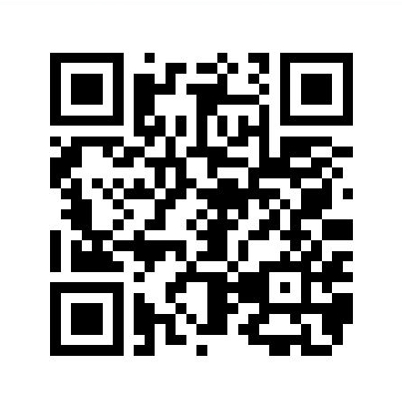
Probabilmente se state leggendo questo libro, non è una operazione attualmente alla vostra portata. Quasi certamente non sapete neppure da che parte iniziare. Il libro vi fornirà tutte le competenze necessarie per eseguire questa ed altre operazioni con Bitcoin in completa autonomia e sicurezza. Se lo riterrete opportuno, al termine della lettura, potrete tornare su questa pagina e donarmi un euro.
1.4. Convenzioni adottate
commenti dell’autore ironici o sacastici, leggere con cautela
| Nota, curiosità o breve approfondimento |
| Contenuto importante |
| Avvertimento, avviso |
| Massima attenzione, cautela e prudenza, le infomazioni così evidenziate richiedono il massimo grado di attenzione |
In box come questi troverete parti di codice, risultati dell'esecuzione di un comando o calcoli matematici.2. Introduzione
I contenuti di questo libro verranno trattati in modo semplificato per rendere la lettura fruibile a tutti. Questo libro è pensato per spiegare Bitcoin e tutto ciò che ci ruota attorno, a chi non ne sa nulla. Se siete degli informatici, probabilmente la trattazione di questo libro non è ciò che state cercando. Qui non troverete pezzi di codice o riferimenti a librerie per lo sviluppo di software. Per chi volesse approfondire questi argomenti vi consiglio di leggere Mastering bitcoin di Andreas Antonopoulos, di cui è disponibile gratuitamente una versione in italiano in formato PDF qui https://gallisiardi.github.io/bitcoinbook-italian-translation/ alla quale ho contribuito personalmente sia in qualità di traduttore che di revisore.
I Bitcoin sono una moneta elettronica, generata mediante una serie di regole matematiche e crittografiche (da qui il termine crittovaluta) condivise ed accettate dagli utilizzatori. A differenza dell’euro e del dollaro, il Bitcoin NON è emesso né garantito da un’autorità statale, il suo valore NON è regolato con l’emissione di nuova moneta da nessuna banca centrale, ma definito in modo libero dalla legge della domanda e dell’offerta. Si può quindi affermare con certezza che il valore del Bitcoin corrisponde a quanto il mercato in quel momento è disposto a spendere per acquistarlo, sostanzialmente come qualunque altro prodotto di libera produzione e commercializzazione.
Il numero di Bitcoin attualmente in circolazione è di circa 17.000.000. Tramite una serie di regole matematiche prestabilite, saranno generati 21.000.000 BTC (BTC è la sigla per Bitcoin), avendo quindi un’inflazione predeterminata e calcolabile da chiunque. Ogni Bitcoin può essere diviso in 100.000.000 Satoshi (dal nome del suo creatore, Satoshi Nakamoto), così come un Euro può essere diviso in 100 centesimi. Se un Bitcoin vale ad esempio 10.000 € ogni Satoshi varrà 0,0001 Euro.
Siamo in una fase in cui moltissime persone si chiedono come fare a comprare e vendere Bitcoin e le altre crittovalute, spinti dalla voglia di fare guadagni facili, poche invece sono interessate a comprendere come questo sistema funzioni. Il libro, oltre a spiegare il funzionamento tecnico, approfondirà anche alcuni aspetti finanziari, senza ovviamente fornire consigli su quali monete acquistare o su come fare trading sulle crittovalute. Lo scopo del libro è puramente divulgativo, non vuole essere un invito ad investire in Bitcoin o in crittovalute, ma un mezzo con cui capire i meccanismi che regolano questo sistema e di conseguenza il suo mercato.
Molto spesso sui mass media, Bitcoin è associato a concetti quali: “è una bolla speculativa” “è uno Schema Ponzi” “i Bitcoin non esistono sono solo una serie di numeri”, “vengono usati dei criminali per traffici illeciti”, “siamo contrari al Bitcoin ma favorevoli della blockchain”, ecc Nei prossimi capitoli, andremo a confutare queste affermazioni, analizzando punto su punto i meccanismi interni del sistema, fornendo al lettore i mezzi per comprendere quali di queste affermazioni sono corrette e quali no. L’argomento crittovalute è molto ampio e non può essere trattato in modo esaustivo da questo libro, soprattutto per un settore così complesso e con un così forte grado di innovazione tecnologica.
Molte persone sono spaventate dall’argomento, credo perchè non ne conoscano il funzionamento o perchè spesso viene presentato loro come una sistema complesso, difficile da capire, ecc. Ciò che non conosciamo ci mette paura, fino a quando non iniziamo ad usarlo, poi diventa la normalità e non ci facciamo neppure più caso. Prendiamo ad esempio Internet, oggi chiunque di noi non ne potrebbe più farne a meno, e solo quando ci ritroviamo in zone senza copertura, ci rendiamo conto di quanto ormai ne siamo dipendenti (messaggistica, navigatore satellitare, news, meteo, ecc.). Eppure quanti tra gli utilizzatori conoscono come funziona internet a livello tecnico? Probabilmente solo una piccolissima parte di addetti ai lavori.
La grande innovazione portata avanti da Bitcoin e dalle altre crittovalute deve essere considerata non una rivoluzione tecnologica, ma un cambio di paradigma. Si tratta di un cambiamento fondamentale nei concetti di base e nelle pratiche sperimentali di una disciplina scientifica. In queste fasi di transizione è difficile fare previsioni sia positive che negative; a titolo di esempio vi riporto alcune affermazioni fatte da persone affermate in determinati settori che si sono state clamorosamente disattese. Ci tengo a precisare che si trattava di gente con competenze specifiche del settore:
Gli americani hanno bisogno del telefono; noi no. Abbiamo fattorini in abbondanza
Penso che ci sia richiesta mondiale per circa cinque computer
Non c’è motivo per un privato di avere un computer in casa propria
Internet… ben presto esploderà in modo spettacolare, come una supernova, e nel 1996 collasserà catastroficamente
Trovate altre citazioni simili ed ulteriori dettagli sul sito: https://attivissimo.blogspot.it/2012/05/frasi-celebri-da-rimangiare.html
Queste persone avevano competenze specifiche in materia eppure hanno sbagliato la loro previsione in modo eclatante. Questi sono veri e propri cambi di paradigma difficili da valutare anche dagli addetti ai lavori.
Personalmente non posso dire dove arriveranno le crittovalute tra 10 anni, nessuno può dirlo con certezza, certamente hanno le potenzialità per cambiare radicalmente il modo con cui usufruiamo di molti servizi finanziari e non solo, potrebbero addirittura stravolgere alcune istituzioni economiche e politiche che ora ci appaiono indispensabili, fino ad arrivare a rivoluzionare completamente il sistema economico internazionale.
3. Storia della moneta e nascita di Bitcoin
Iniziamo con il definire che cos’è una moneta, per farlo citiamo l’enciclopedia Wikipedia https://it.wikipedia.org/wiki/Moneta:
Per moneta si intende tutto quello che viene utilizzato come mezzo di pagamento e intermediario degli scambi e che svolge le funzioni di:
-
misura del valore (moneta come unità di conto)
-
mezzo di scambio nella compravendita di beni e servizi e in genere nelle transazioni commerciali (moneta come strumento di pagamento)
-
fondo di valore (moneta come riserva di valore)
la moneta, in quanto moneta e non in quanto merce, è voluta non per il suo valore intrinseco, ma per le cose che consente di acquistare
Bitcoin viene considerato da molti una moneta, proprio per la sua capacità di essere mezzo di scambio per la compravendita di beni e riserva di valore. Negli ultimi anni ha assunto più un aspetto di asset o investimento, da molti viene infatti definito oro digitale. E’ difficile definirlo o equipararlo ad altre valute, perchè a differenza delle monete utilizzate comunemente negli ultimi secoli, non è emesso da uno stato sovrano. Questa è la prima grandissima differenza rispetto alle monete comunemente conosciute ed utilizzate: euro, dollaro, franco svizzero, sterlina, ecc. ed è fonte di dubbi o perplessità da parte di chi non approfondisce la materia. Le principali obiezioni sono: chi ne garantisce il valore? chi decide quanti bitcoin creare? cosa c’è dietro? ecc.
Per rispondere a queste domande dobbiamo prima chiarire alcune caratteristiche base che deve avere una moneta, in modo da poter poi confrontare le monete FIAT (euro, dollaro, sterlina, ecc.) con le crittovalute come il Bitcoin.
| Le monete FIAT sono così definite proprio perchè sono create dal nulla. Il termine ”FIAT” si riferisce alla frase della Bibbia “Deus fiat lux et lux facta est” tradotto “Dio disse sia fatta la luce e la luce fu fatta”, proprio per descrivere la natura di queste monete ed il fatto che vengano create dal nulla. Sì dal nulla, avete letto bene. Il nostro Dio ha un nome e cognome: Mario Draghi, presidente della Banca Centrale Europea. Quando Draghi dà ordine di stampare 1.000 miliardi di euro, le tipografie iniziano a lavorare e creare moneta FIAT dal nulla. “Draghi fiat euro et euro facta est”. |
A garanzia dell’euro o del dollaro, non c’è alcun corrispettivo di oro o metalli preziosi, come erroneamente ancora molti credono. La parità nel caso dell’Euro non è mai esistita, nel caso del dollaro è ufficialmente terminata nel 1971 con la fine degli accordi di Bretton Woods ( per approfondire https://it.wikiversity.org/wiki/Conferenza_di_Bretton_Woods#La_fine_degli_accordi ).
La vera forza su cui si basano queste monete è il corso legale ( https://it.wikipedia.org/wiki/Corso_legale ) e cioè l’obbligo da parte dei cittadini, di accettare la moneta emessa dallo stato come metodo di pagamento. Nessun negoziante può rifiutarsi di accettare Euro, nessun lavoratore può rifiutarsi di essere pagato in Euro. Questo non vuole dire che è obbligato a ricevere SOLO euro. Può ricevere qualsiasi valuta, ma se qualcuno vuole pagarlo in euro, lui è obbligato ad accettare euro.
3.1. Caratteristiche delle monete
Approfondiamo ora, alcune caratteristiche che dovrebbe avere una moneta ideale, in modo da poter poi andare a confrontare le varie tipologie di moneta sotto vari aspetti.
Scarsità: una moneta deve avere un giusto compromesso tra disponibilità e scarsità. Non deve naturalmente essere troppo abbondante (un pugno di sabbia), altrimenti avrebbe pochissimo valore, né troppo scarsa, altrimenti avrebbe troppo valore per essere scambiata (un quadro di Picasso).
Durevolezza: deve resistere a lungo senza danneggiarsi e senza richiedere manutenzione
Divisibilità: deve essere facilmente divisibile per piccoli importi
Verificabilità: occorre poter verificare l’autenticità e proteggersi dalla contraffazione
Portabilità: devo poterle trasportare facilmente
Fungibilità: monete dello stesso valore devono essere interscambiabili, uguali le une alle altre senza assumere un valore diverso rispetto alla loro storia. Ad esempio monete che sono state oggetto di crimini o truffe, potrebbero essere identificate tramite i numeri di serie, o per quanto riguarda le crittovalute, tramite wallet tramite le quali sono transitate.
Fiducia: per essere accettata, chi la riceve come pagamento deve avere la ragionevole certezza che possa a sua volta spenderla per comprare altri beni o servizi.
3.2. Confronto mezzi di pagamento
La tabella sottostante, confronta vari mezzi di pagamento e ne confronta le caratteristiche. Sotto i voti che vanno da 1 a 5, sono espresse alcune motivazioni che hanno influenzato il punteggio
| CAPRA | ORO | FIAT (contanti) | FIAT (elettronica) | BITCOIN | |
|---|---|---|---|---|---|
ANONIMATO |
5 |
5 |
5 +anonimo |
1 -completamente tracciato |
2 +pseudo anonimo |
MISURA DI VALORE |
2 |
4 |
5 |
5 |
3 -volatilità del prezzo |
MEZZO DI SCAMBIO |
2 |
4 -non pratico |
5 |
5 |
3 -ancora poco diffuso |
FONDO DI VALORE |
5 |
5 |
4 -inflazione |
4 -inflazione |
5 +incrementato valore |
SCARSITA’ |
1 |
5 |
2 -inflazione |
2 -inflazione |
5 |
DUREVOLEZZA |
1 |
5 |
4 -vanno sostituite |
5 |
5 |
DIVISIBILITA’ |
1 |
3 -poco pratico |
4 |
4 |
5 +micropagamenti |
VERIFICABILITA’ |
2 |
3 -complesso |
4-banconote false |
5 |
5 +non falsificabile |
FISICITA’ |
5 |
5 |
3 -materiale, ma con valore intrinseco nullo |
1 -immateriale, valore intrinseco nullo |
1 -immateriale, valore intrinseco nullo |
PORTABILITA’ |
1 -poco pratico |
4 |
4 |
5 +immateriale |
5 +immateriale |
FUNGIBILITA’ |
1 -tutte diverse |
4 -alterazioni |
5 |
4 |
4 |
SICUREZZA |
3 |
4 -alterazioni |
4 -banconote false |
5 |
5 |
LIBERO DA POTERE POLITICO |
5 |
5 +indipendente |
1 -sotto il controllo politico |
1 -sotto il controllo politico/governativo |
5 +indipendente |
TRACCIABILE |
1 |
1 |
1 -anonimo |
5 +tracciabile |
3 -pseudo anonimo |
3.3. Inflazione e deflazione
Tutti sanno che l’inflazione è l’aumento dei prezzi, in realtà sarebbe più corretto parlare di riduzione del potere d’acquisto della moneta. Infatti la definizione di Wikipedia dice:
L’inflazione è l’aumento prolungato del livello medio generale dei prezzi di beni e servizi in un dato periodo di tempo, che genera una diminuzione del potere d’acquisto della moneta
e continua:
Con l’innalzamento dei prezzi, ogni unità monetaria potrà comprare meno beni e servizi. Conseguentemente, l’inflazione è anche un’erosione del potere d’acquisto dei consumatori
La deflazione invece è il fenomeno opposto e cioè:
La deflazione è una diminuzione del livello generale dei prezzi, che genera un incremento del potere d’acquisto della moneta
3.4. Storia della moneta
Capire come la moneta si è evoluta nel tempo è fondamentale per poter valutare l’evoluzione che avrà in futuro. Quando siamo troppo abituati ad usare qualcosa non ci chiediamo come mai la stiamo utilizzando e neppure come funzioni. Digitiamo i numeri della nostra carta di credito, senza neppure pensarci. Agli albori di internet c’era moltissima diffidenza verso i pagamenti online. Oggi sono stati sdoganati ed è stato dimostrata la loro sicurezza. Le truffe legate alle carte di credito clonate, nella stragrande maggioranza dei casi nascono da dipendenti infedeli che copiano manualmente o tramite pos truffaldini appositamente modificati, le carte dei clienti di un esercizio commerciale.
| Non affidate la vostra carta di credito ad altre persone, tantomeno ai commessi o peggio ancora ai camerieri, che potrebbero allontanarsi con la vostra carta. Quando digitate il PIN ricordatevi di farlo lontano da da occhi indiscreti. |
A scuola ci hanno insegnato che il commercio è nato con il baratto. In realtà la maggior parte di scambi commerciali avveniva con un’economia basata sul debito (o del dono), ovviamente di base c’era la fiducia che questo debito venisse onorato, immaginiamo un contesto familiare o vicinale. Viceversa il baratto veniva utilizzato dove questa forma di fiducia mancava. Non esistono prove storiche di economie basate principalmente sul baratto, la moneta in questo senso ha stravolto il mondo del commercio facendo crescere gli scambi in modo esponenziale. Questo libro, ad esempio, è stato distribuito gratuitamente, nella certezza speranza, che le donazioni che verranno fatte dai lettori, ripaghino lo sforzo ed i costi sostenuti per produrlo e distribuirlo.
Le prime monete furono monete merci, cioè prodotti veri e propri di uso comune, che oltre al fine principale avevano anche un uso monetario: collane di conchiglie, fave di cacao, chiodi, ecc. Tutta la comunità le accettava come monete di scambio.
3.4.1. VII secolo a.C.
La prima moneta metallica, risale al VII sec. a.C è costituita di Elettro, una lega di argento ed oro. E’ stata introdotta da Fidone, un tiranno della città di Argo. Con la creazione della moneta e con l’introduzione di un sistema di misure standardizzato, riuscì ad incrementare il commercio.
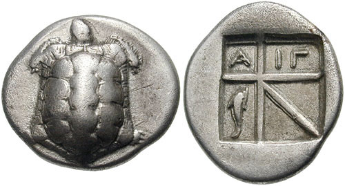
Dracma greca del VII sec. a.C.; tratta da: https://commons.wikimedia.org/wiki/File:BMC_193.jpg
{kind=link}
Nel VI se. a.C. in seguito alla scoperta di nuove miniere d’argento in Spagna, si ebbe la prima crisi inflazionistica dovuta all’ingresso massivo di Argento nel sistema monetario.
Nel III sec. d.C. si ebbe invece una grande crisi inflazionistica nell’impero romano a causa della riduzione dei metalli preziosi sostituiti da altre leghe. Gli imperatori ridussero via via la quantità di oro e metalli preziosi nelle monete sostituendoli con altre leghe. Inoltre per finanziare campagne militari coniarono nuove monete sempre più povere di metalli preziosi.
3.4.2. Medioevo
Nell’ XI secolo, i Templari organizzarono un sistema basato su note di credito, che permetteva ai pellegrini e crociati, di depositare il denaro alla partenza e ritirarlo quando giungevano a destinazione.
Nei secoli successivi i mercanti e le grandi compagnie commerciali con sedi anche molto distanti tra loro, iniziarono ad adottare un sistema analogo per evitare di trasportare l’oro nei lunghi spostamenti, con tutti i rischi che ciò comportava.
Durante il medioevo, nacquero le “note di banco” (da cui derivò poi il termine banconota). Si trattava di semplici ricevute che venivano rilasciate in cambio di un deposito di oro e metalli preziosi, che davano diritto a chi le possedeva di ottenere in cambio i metalli preziosi depositati. L’uso di queste note di banco si diffuse fino al punto che la gente continuava a scambiarsi queste note di banco, e soltanto una minima parte delle persone andava a riscuotere i metalli preziosi. Qualcuno ebbe quindi la “geniale” idea di emettere nuove note di credito, senza disporre di un effettivo controvalore in metalli preziosi, creando quindi nuova moneta e inflazione.
Nel 1343, in Toscana nascono le prima “banche”, tra cui il Monte Comune di Firenze e nel 1472 Monte dei Paschi di Siena.
Nel 1694, nasce la prima Banca Centrale, la Bank of England. Un gruppo di uomini facoltosi prestarono ingenti capitali al sovrano Guglielmo III, per finanziare lo sforzo bellico contro la Francia, in cambio della possibilità di stampare cartamoneta. Nei secoli successivi anche le altre nazioni europee crearono le proprie banche centrali, spesso proprio per finanziare sforzi bellici. In tempi di pace la convertibilità in metalli preziosi era garantita, mentre durante le guerre veniva spesso interrotta, per permettere alle banche e ai governi di stampare moneta per finanziare le guerre, generando inflazione.
3.4.3. XX secolo
Nel 1914 in Germania durante la Repubblica di Weimar si sospende la convertibilità, per finanziare lo sforzo bellico. Si continua a stampare moneta fino al termine del conflitto. La quantità del denaro in circolazione era quintuplicata, mentre la controparte in oro era scesa allo 0,5 per cento. Durante la sua fase finale, nel novembre 1923, il marco valeva un bilionesimo 1/1.000.000.000.000 di quanto valesse solo pochi anni prima nel 1914. Per descrivere il fenomeno venne coniato il temine iperinflazione.
Nel Luglio del 1944 i maggiori paesi industrializzati del mondo si incontrarono a Bretton Woods per concordare una serie di regole comuni per governare i reciproci rapporti monetari, alla base dei quali c’era il dollaro come moneta di interscambio tra le altre valute. Essendo convertibile in oro, tutti gli stati accettarono la proposta statunitense ( https://it.wikipedia.org/wiki/Conferenza_di_Bretton_Woods ).
Nel 1971, il presidente Nixon dichiarò la fine degli accordi di Bretton Woods e la fine della convertibilità da dollaro ad oro.
Negli anni successivi si registrarono gravi casi di iperinflazione in Messico: viene registrata una iperinflazione del 833% annuo, nel 2008 in Zimbabwe si arrivò al 5.473% annuo.
3.4.4. Fine anni '90
Nel 1996 nasce E-gold; si trattava di un sito che permetteva di aprire un account e versare dollari per ottenere dei grammi di oro, non fisicamente ma registrati all’interno del proprio account. Una volta ottenuti era possibile inviarli ad altro utente del sito. Nel 2009 gli utenti attivi erano oltre 5 milioni. Nel 2006 nei momenti di picco, e-gold “spostava” l’equivalente di oltre 2 miliardi di dollari all’anno, avendo come controvalore l’equivalente di 71 milioni di dollari in oro. Il sito venne poi chiuso, e la società perseguita legalmente. Altri servizi analoghi vennero creati, nessuno però sopravvisse. L’alternativa era adeguarsi alle regole del sistema finanziario internazionale, come fece ad esempio PayPal o venire perseguiti legalmente dalle autorità
Tra il 1999/2001 cresce e successivamente scoppia quella che verrà definita la “bolla delle dot.com”. La diffusione di internet, fece nascere una moltitudine di aziende che offrivano ogni sorta di servizio online. Ci fu una vera e propria corsa all’acquisto di azioni di queste società, che quindi videro la loro quotazione in borsa incrementarsi di giorno in giorno, richiamando ulteriori investitori ( https://it.wikipedia.org/wiki/Bolla_delle_dot-com ). Questa spirale perversa durò un paio d’anni ed il mercato globale raggiunse la capitalizzazione di 10.000 miliardi di dollari. Molte di queste aziende fallirono, molte altre sopravvissero vedendo fortemente ridimensionata la loro capitalizzazione fino a quasi scomparire, alcune nonostante il forte calo si ripresero, ed a distanza di oltre dieci anni raggiunsero nuovamente quei livelli di capitalizzazione.
Nel Luglio 2007 scoppia la crisi sui mutui subprime a causa del crollo del mercato immobiliare statunitense. Molte banche avevano concesso prestiti a persone che non sono state in grado di restituirli, sulla base di garanzie scarse o gonfiate, che sono venute meno dopo il crollo del mercato immobiliare. Questa crisi avrà un effetto contagio che coinvolgerà l’economia mondiale per gli anni a seguire.
3.4.5. Nascita di Bitcoin
E’ in questo contesto di sfiducia nelle banche e nelle istituzioni finanziare che il primo novembre del 2008, in una mailing list di crittografia, appare un post di un tale Satoshi Nakamoto (probabilmente uno pseudonimo dietro cui si cela forse un gruppo di persone), il quale annuncia di aver inventato un sistema di pagamento elettronico, basato su una rete P2P che non richiede la presenza di un’autorità centrale che svolga il ruolo di garante per le transazioni. Inizialmente l’idea non viene presa troppo sul serio, anche perché apporta delle innovazioni tecnologiche importanti e mai viste prima. Altri invece vengono incuriositi dall’idea e chiedono maggiori dettagli a Satoshi su come pensi di risolvere alcune questioni tecniche complesse. Di fronte a questa richiesta di maggiori dettagli, Nakamoto replica di non avere il tempo di fornire ulteriori dettagli, ma che è ormai più di un anno che sta lavorando al progetto e che a breve pubblicherà il software e tutto il codice sorgente con licenza open source. Un mese e mezzo dopo, pubblicherà tutto il codice sorgente su sourceforge.net, nasce il Bitcoin. Il 03/01/2017 cioè 8 anni più tardi, il Bitcoin raggiunge la quotazione di 900 $ l’uno, mentre il 03/01/2018, varrà 15.000 $, dopo aver toccato picchi di 20.000 $ durante il mese di dicembre 2017.
4. Concetti informatici di base
Per comprendere meglio il funzionamento del Bitcoin è necessario approfondire alcuni concetti informatici e crittografici a livello basilare. Come anticipato nell’introduzione, affronteremo in modo semplice questi argomenti senza scendere troppo nei dettagli.
4.1. I QR Code
Si tratta di codici a barre bidimensionali, possono contenere fino a 4.000 caratteri. Solitamente contengono link a siti internet e vengono utilizzati per permettere ad un lettore di accedere ad una pagina web senza dover digitare l’indirizzo, evitando quindi errori dovuti ad una errata digitazione. Per leggere il contenuto di questi codici sono disponibili moltissime app gratuite. Vengono utilizzati anche in altri ambiti, dove si deve trasmettere una stringa di caratteri in modo rapido e senza commettere errori. Quello che segue, ad esempio è il QR Code del mio indirizzo Bitcoin:
4.2. Il protocollo
Il protocollo è un insieme di regole condivise sulle quali si basa un’infrastruttura informatica. Chiunque voglia scrivere del software che interagisca con la rete Bitcoin ad esempio, può farlo senza chiedere il permesso a nessuno, però deve rispettare il protocollo altrimenti gli altri software che interagiscono con la rete ignoreranno queste comunicazioni.
Un protocollo informatico è simile al Codice della Strada. Si tratta di un insieme di regole matematiche, che non lasciano spazio ad interpretazioni. Chi non rispetta le regole viene ignorato, nel codice della strada purtroppo non è così.
Se ad esempio il protocollo stabilisce che un file non deve superare 1 MB (megabyte), se qualcuno prova a generare un file più grande del limite stabilito, questo viene ignorato in quanto non conforme al protocollo.
4.3. Reti informatiche
Una rete informatica è un insieme di server, computer, smartphone o più genericamente dispositivi interconnessi tra loro. Questi possono essere collegati in modi e forme differenti.
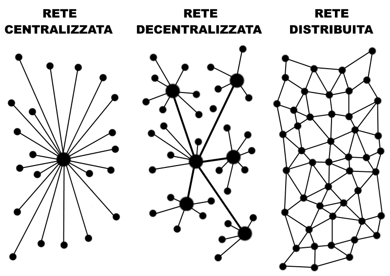
Una rete centralizzata, ad esempio, è un insieme di dispositivi che si connettono tutti con un server centrale. Questa struttura ha un grosso limite: una volta chiuso, censurato o distrutto il nodo centrale, crolla tutta la rete. Immaginato un sito internet con un solo server, se questo viene spento nessuno potrà più accedere ai contenuti.
La seconda tipologia di rete è quella decentralizzata dove sono presenti più nodi centrali. Ad ognuno di essi sono connessi molti dispositivi. Questa tipologia di rete riesce a resistere in modo migliore a eventuali attacchi o guasti;alcune parti della rete saranno comunque tagliate fuori e quindi non potranno fruire del servizio su di essa erogato. Immaginiamo il caso di una banca con più filiali sul territorio, ognuna con i propri clienti. In caso di interruzione del servizio dentro una singola filiale, i clienti “connessi” a quel nodo saranno isolati, ma tutte le altre filiali non risentiranno del problema.
Nella rete distribuita o rete peer to peer (P2P), tutti i dispositivi sono interconnessi tra di loro, creando una sorta di rete da pesca, in cui ogni utente è un nodo della rete. Se uno o più dispositivi vengono spenti la rete non risente di alcun problema. I client connessi al singolo nodo spento possono riconnettersi ad altri nodi e continuare a usufruire del servizio. Questo tipo di rete si definisce resiliente, cioè in grado di subire attacchi garantendo un’erogazione continua del servizio. Questa è la rete sulla quale è basato il protocollo Bitcoin. Probabilmente molti di voi conosceranno software come Torrent o eMule. Ormai sono oltre vent’anni che si cerca di contrastare la diffusione di queste reti P2P, perché su di esse transitano contenuti musicali, testuali e video coperti da copyright; nonostante lo sforzo delle major discografiche e dei governi non è stato possibile bloccare tecnicamente questi servizi. Non esiste un punto centrale da attaccare o da spegnere, dovrebbero essere spenti contemporaneamente tutti i nodi della rete; finché esisteranno anche solo due nodi, la rete continuerà a vivere. Sia ben chiaro, diffondere materiale coperto da copyright è un reato, indipendentemente da come questo materiale venga distribuito.
4.4. Funzioni di hash
Una funzione è un software che, dato in ingresso un testo o un file di qualsiasi dimensione, lo converte in una stringa alfanumerica composta da lettere e numeri come questa 34ae22f3cbaf0b0adfea0bc52ded6eb4a39c1b325c45c8283ffa04612ed3e273.
Immaginate una lavatrice che, inserendo 10 volte il testo della Divina Commedia vi restituisca sempre la stessa una stringa di caratteri alfanumerici.
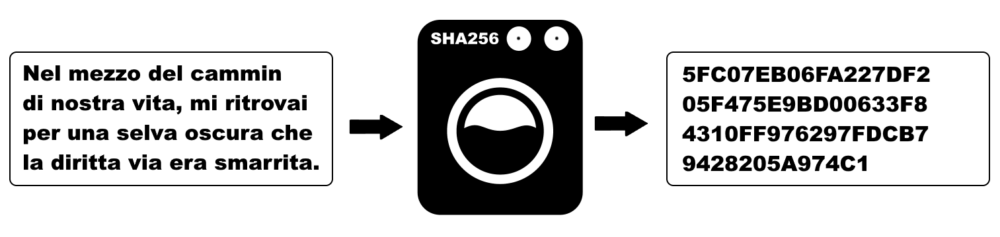
Cambiando anche solo un carattere, uno spazio, un punto, del testo inserito, la stringa generata sarà completamente differente.
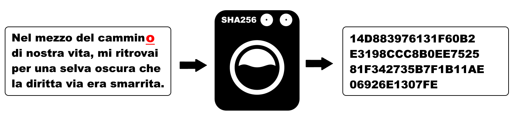
Esistono molte funzioni di hash differenti, quella utilizzata in bitcoin si chiama SHA256. Ad esempio, il testo: “Nel mezzo del cammin di nostra vita, mi ritrovai per una selva oscura che la diritta via era smarrita.” genererà questa stringa alfanumerica composta dai numeri da 0 a 9 e dalle lettere da “a” a “f”: “5FC07EB06FA227DF205F475E9BD00633F84310FF976297FDCB79428205A974C1”. Potete verificarlo ad esempio qui: http://www.xorbin.com/tools/sha256-hash-calculator Se cambiate anche solo un carattere della stringa inserita e rigenerate l’hash, noterete che la stringa restituita è completamente diversa. Se aggiungiamo ad esempio una "o" dopo cammin, il testo in input sarà “Nel mezzo del cammino di nostra vita, mi ritrovai per una selva oscura che la diritta via era smarrita.” che genererà questo output: “14D883976131F60B2E3198CCC8B0EE752581F342735B7F1B11AE06926E1307FE”.
Questa lavatrice può però eseguire il lavaggio in una sola direzione cioè dal testo completo verso la generazione della stringa e non viceversa. Dato l’hash della Divina Commedia, non è quindi possibile in nessun modo risalire al testo completo che l’ha generato.
Il suo scopo principale è quello di permettere di avere una prova rapida e tangibile che il file o il testo inserito non abbia subito variazioni. Due persone possono quindi scambiarsi un file, ed entrambe possono generare la funzione di hash ed ottenere il medesimo risultato, avendo quindi la garanzia che il file sia esattamente lo stesso e non abbia subito variazioni o manomissioni durante la trasmissione.
4.5. Proof of Work
Svolgere un qualsiasi lavoro può richiedere moltissimo tempo, anche decenni; verificare che effettivamente sia stato svolto può richiedere meno di un secondo. Prendiamo ad esempio il caso delle piramidi: per essere costruite hanno richiesto decenni e lo sforzo di migliaia di persone; per verificare che effettivamente esistono e siano state completate basta un’occhiata data da una singola persona ed il tutto non richiede più di qualche decimo di secondo.
Testiamo la proof of work con un semplice gioco. Immaginiamo una sala con 100 persone, ognuna di esse ha in mano 10 dadi.
Lanciando 10 dadi contemporaneamente ogni partecipante può ottenere un numero compreso nell’intervallo tra 10 e 60:
1+1+1+1+1+1+1+1+1+1=10
6+6+6+6+6+6+6+6+6+6=60
Immaginiamo quindi di impostare un obiettivo per la vittoria, ad esempio dover ottenere, sommando il risultato dei 10 dadi, un numero maggiore di 30. Sicuramente già al primo lancio molti dei presenti in sala riusciranno a raggiungere un punteggio maggiore a 30.
Nell’esempio sopra riportato: 3+2+4+1+2+6+5+2+4+3=32
L’obiettivo in questo caso è semplice da raggiungere. Se però vogliamo rallentare questo processo e mettere in difficoltà i partecipanti, possiamo alzare il target a 40, a 50 o addirittura a 60. In quest’ultimo caso solo chi riuscirà a lanciare 10 dadi ottenendo contemporaneamente il punteggio di 6 con ognuno di essi riuscirà a vincere..
Le probabilità di questo lancio sono 1 su 60.000.000 milioni di lanci. Probabilmente queste 100 persone dovrebbero lanciare, ognuno i propri 10 dadi, per giorni e giorni prima che qualcuno di essi riesca a ottenere il punteggio di 60. Viceversa, chi deve verificare il risultato del lancio, impiegherà pochi secondi per accertarsi che tutti i dati mostrino il numero 6. Questo è un esempio di proof of work.
4.6. Concetti base di crittografia
Alice e Bob si devono scrivere una lettera e-mail, ma sono sicuri che questa comunicazione verrà intercettata. Per evitare che qualcuno legga il contenuto del messaggio concordano preventivamente una password che verrà usata per cifrare il messaggio e, una volta giunto a destinazione, decifrarlo.

Il testo verrà quindi convertito in un insieme di caratteri e numeri a prima vista senza alcun senso logico. Il messaggio sarà incomprensibile a chiunque non sia in possesso della password per decifrarlo. Questo sistema è semplice ed efficiente, a patto che Alice e Bob si conoscano, e abbiano concordato preventivamente la password da utilizzare. Come possono Alice e Bob scambiarsi un messaggio cifrato se non si sono mai visti e mai si vedranno o se neppure si conoscono?
Per risolvere questo sistema è nata la crittografia a chiave pubblica e privata. La chiave pubblica e la chiave privata sono delle stringhe di testo alfanumerico come questa 3048024100C918FACF8DEB2DEFD5FD3789B9E069EA97FC205E3…
La chiave privata, come si intuisce dal nome, deve essere mantenuta al sicuro e non comunicata a nessuno. Viceversa la chiave pubblica deve essere diffusa in più modi, chiunque deve avere la possibilità di accedervi. Le due chiavi sono strettamente correlate una all’altra e devono lavorare sempre in coppia. La chiave pubblica è generata dalla chiave privata, possiamo dire che sia sua “figlia”.
Grazie alla crittografia a chiave pubblica e privata due persone che non si conoscono possono: Verificare con assoluta sicurezza che un file sia stato generato dal legittimo autore e che non sia stato alterato durante il tragitto
Cifrare un file con la chiave pubblica del destinatario (disponibile a chiunque) rende il file decrittabile solo dal proprietario della relativa chiave privata. Solo il legittimo destinatario sarà l’unico che potrà leggere il contenuto
Utilizzando entrambi i sistemi descritti precedentemente si può quindi essere certi che il contenuto non sia stato manomesso durante il tragitto, che sia stato generato da una persona specifica e che anche se intercettato non venga decifrato.
Facciamo alcuni esempi pratici per ognuno dei tre punti esaminati in precedenza.
4.6.1. Caso 1: garantire l’autenticità del contenuto e della fonte
Alice cifra un file con la propria chiave privata ottenendo quindi un file firmato, il file transita nella rete in formato cifrato, ma tutti lo possono aprire e decodificare perché la chiave pubblica di Alice è per definizione a disposizione di tutti. Bob decifrando il file con la chiave pubblica di Alice è certo che il file sia stato generato proprio da Alice e non da altri. In questo caso l’obiettivo principale è verificare l’autenticità del contenuto e dell’autore. È il meccanismo usato per la firma digitale.
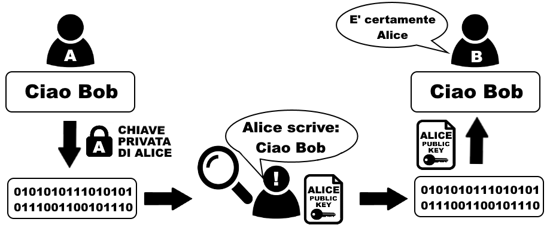
4.6.2. Caso 2: garantire la riservatezza del contenuto
Alice cifra un file con la chiave pubblica di Bob e trasmette il file cifrato sulla rete dove nessuno può decifrare il contenuto a meno che non sia in possesso della chiave privata di Bob. Bob quindi con la sua chiave privata può decifrare il messaggio e leggere il contenuto, ma non può essere certo che il messaggio sia stato inviato proprio da Alice. Chiunque infatti può accedere alla sua chiave pubblica, che come ricorda il nome è disponibile a tutti per definizione.
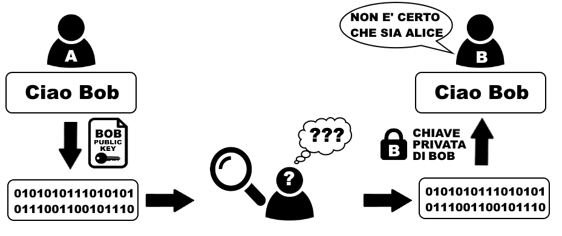
4.6.3. Caso 3: garantire l’autenticità del contenuto, la sua fonte e la certezza che non venga decifrato durante la trasmissione sulla rete
Unendo le due funzionalità analizzate in precedenza, Alice può cifrare il messaggio con la chiave pubblica di Bob in modo che solo chi è in possesso della chiave privata di Bob possa aprire il contenuto del messaggio. Ottenuto il file cifrato, può quindi cifrarlo nuovamente con la propria chiave privata, in questo modo Bob potrà avere la certezza che sia stata Alice ad inviare il messaggio.
Bob dovrà quindi eseguire i due passaggi inversi, cioè aprire il file utilizzando la chiave pubblica di Alice, verificando quindi che il contenuto sia stato generato effettivamente da lei e, successivamente, usare la propria chiave privata per decifrare il contenuto del messaggio.
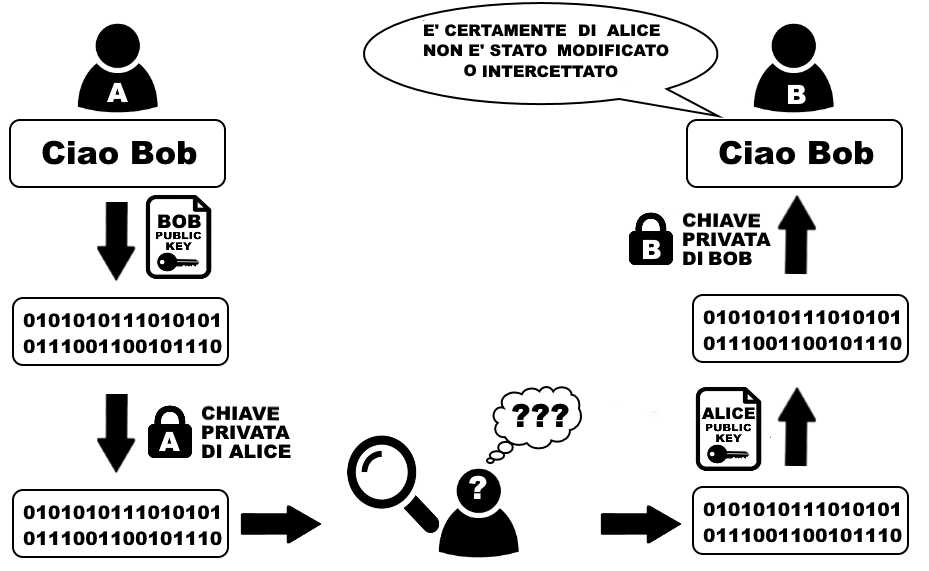
In questo modo la sicurezza della comunicazione è garantita in ogni suo aspetto. Ogni giorno utilizziamo, senza saperlo, sistemi simili ad esempio quando navighiamo su un sito che adotta il protocollo HTTPS, il famoso lucchetto verde nei browser in alto accanto all’indirizzo internet. In questo caso la comunicazione tra client e server è garantita, nessuno tra noi ed il sito può intercettare la comunicazione, garantendo così la massima privacy e sicurezza dei dati che transitano sulla rete.
5. Come funziona Bitcoin
Vediamo ora come funziona il Bitcoin; partiamo con degli esempi molto semplici e poi andiamo a approfondire i singoli concetti alla base del sistema.
5.1. Aprire un conto
Alice deve ricevere da Bob €10. Negli ultimi mesi ha sentito parlare di Bitcoin, e sa che Bob ne possiede, decide quindi di farsi pagare con questa nuova moneta. Per ricevere i Bitcoin occorre avere un “posto” dove farseli inviare, in sostanza le serve l’equivalente di un conto corrente ed il suo relativo IBAN, in modo da potere comunicare a Bob le coordinate a cui inviare il denaro.
La prima grande novità rispetto al sistema bancario tradizionale è che per aprire un nuovo “conto corrente” per ricevere Bitcoin, non serve il permesso di nessuno, basta scaricarsi una semplice app. Questo fa sì che chiunque possa crearsi uno o più “conti correnti”, in modo gratuito, senza costi fissi di gestione, senza richiedere l’autorizzazione a nessuno, senza dover fornire alcun dato, neppure un indirizzo e-mail. Le App che permettono di aprire e gestire i pagamenti in crittovalute vengono chiamate wallet che in inglese significa portafogli.
| Non è corretto considerarle dei portafogli di Bitcoin, in quanto i wallet contengono esclusivamente i codici di accesso al conto corrente, e non i Bitcoin. Infatti è possibile installare l’app su più dispositivi, e in tutti questi vi verrà mostrato il medesimo saldo. Se viceversa acquistate 10 portafogli, le banconote potranno essere depositate solo in uno di questi. I wallet sono dei portachiavi, permettono di “tenere assieme” un certo numero di chiavi che ci permettono di spendere i nostri Bitcoin. |
Alice quindi procede con il download dell’app sul proprio smartphone. Quando l’app viene eseguita per la prima volta, propone una serie di 12 parole (alcuni wallet ne richiedono 24). Queste servono per generare la chiave privata, che come abbiamo illustrato in precedenza, è un codice alfanumerico fondamentale per poter crittografare i dati. Alice dovrà semplicemente scriverle su un foglio di carta e ridigitarle all’interno dell’app quando verrà richiesto.
Proviamo a eseguire passo a passo l’installazione del wallet Mycelium. Si tratta di un wallet che potete scaricare gratuitamente tramite il Play Store per Android qui: https://play.google.com/store/apps/details?id=com.mycelium.wallet o tramite l’App Store di IOS qui: https://itunes.apple.com/en/app/mycelium-bitcoin-wallet/id943912290
Ho scelto questo wallet, perchè è tra i più diffusi, con ottime recensioni, è open source, permette l’esportazione della chiave privata garantendo quindi il pieno controllo diretto sui propri fondi, ed è disponibile in lingua italiana. Purtroppo non sono molti i wallet che hanno tutte queste caratteristiche. Descriverò ora, passo a passo, le operazioni da compiere; i wallet sono tutti diversi, ma adottano in realtà, procedure molto simili tra loro.
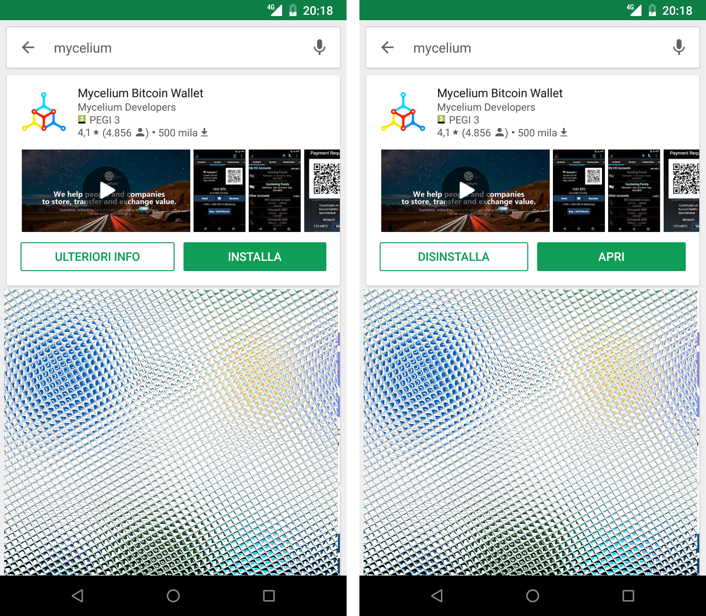
Iniziamo cercando l’app “Mycelium” sullo store. Clicchiamo su Installa e successivamente su Apri.
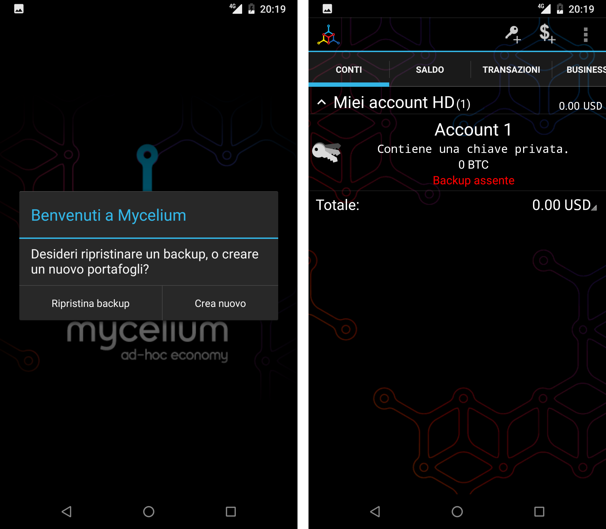
L’app ci chiederà se vogliamo ripristinare un wallet salvato in precedenza o se vogliamo crearne uno nuovo. Come vedremo negli step successivi, dopo aver creato il wallet sarà FONDAMENTALE fare subito un backup, ed archiviarlo in un posto sicuro, in modo da poter accedere ai nostri Bitcoin anche nel caso in cui il nostro smartphone andasse distrutto, ci venisse rubato o semplicemente si guastasse. Scegliendo “Crea nuovo”, ci verrà mostrata la schermata di destra.
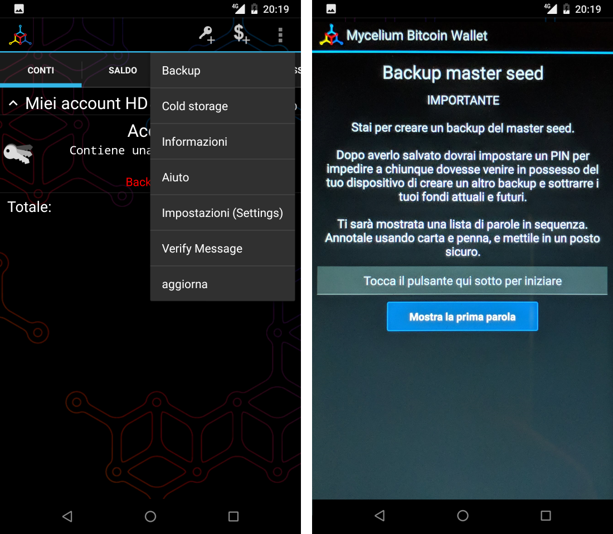
Diligentemente seguiamo il consiglio degli sviluppatori e clicchiamo sui tre pallini verticali in alto a destra per aprire il menu, dove andremo a scegliere la voce Backup. A questo punto seguiamo passo a passo le istruzioni in italiano che appaiono a video, leggetele con attenzione, anche se è un’operazione che avete già effettuato altre volte.

L’app vi mostrerà quindi un elenco di 12 parole, dovete scriverle su un pezzo di carta, facendo molta attenzione a non commettere errori ed a rispettare il corretto ordine. Dopo avervi mostrato la dodicesima parola, vi verrà chiesto di digitare l’intera sequenza di termini, uno ad uno, per essere certi che la copia di backup cartacea che avete appena eseguito sia corretta.
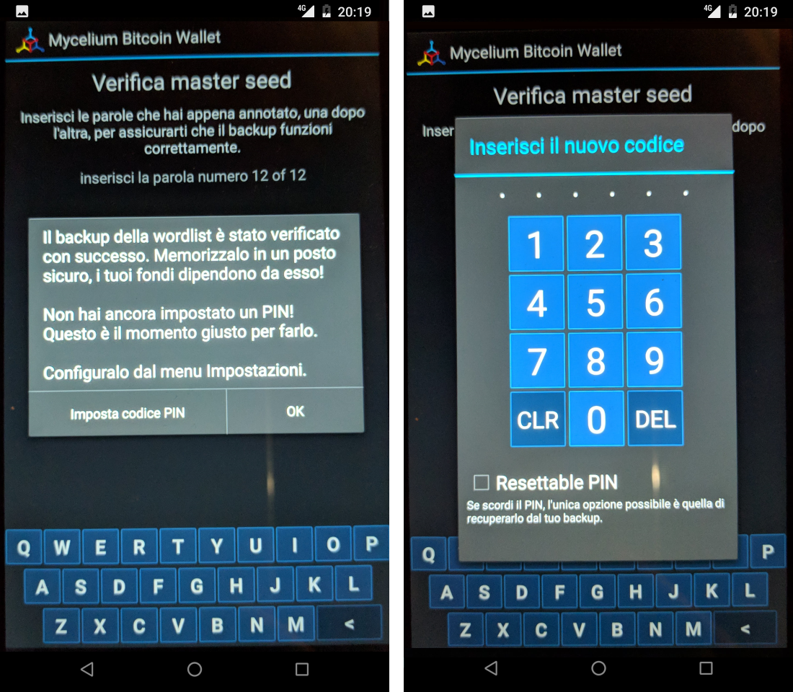
Terminato il controllo, l’app confermerà il buon esito dell’inserimento e vi inviterà ad impostare un PIN di 6 cifre per poter utilizzare questo wallet.
| il PIN non ha nulla a che fare con il protocollo Bitcoin. Il PIN serve esclusivamente ad evitare che, qualora il vostro smartphone finisse nelle mani sbagliate, anche solo per pochi minuti, un malintenzionato possa accedere al vostro wallet ed utilizzare i vostri Bitcoin. |
| E’ buona norma, fare subito una duplice copia sia delle 12 parole, sia del PIN, in modo da poter conservare i foglietti in modo sicuro, magari in due lughi differenti. Ricordate: chiunque abbia a disposizione l’elenco di queste 12 parole, potrà accedere ai vostri Bitcoin, anche senza conoscere il PIN. |
L’elenco delle parole permette di generare la chiave privata con la quale Alice, o chiunque entri in possesso di questa lista, potrà accedere al conto e disporre dei fondi in esso contenuti, da qualsiasi PC, cellulare o tablet sul quale sia installato un wallet Bitcoin. Nel caso le venisse rubato il telefono, Alice potrà installare nuovamente l’app sul nuovo dispositivo e inserire le famose 12 parole per tornare in possesso dei propri Bitcoin.
Se Alice non avesse impostato il PIN, il ladro potrebbe eseguire l’app e avere quindi il controllo dei fondi di Alice, compresa la possibilità di esportare la chiave privata. Quasi tutti i wallet permettono di inserire un pin, per impedire che un malintenzionato possa utilizzare l’app senza il consenso del proprietario. In caso di furto o smarrimento, è comunque buona norma, creare una nuovo conto e trasferire tutti i fondi dal vecchio conto (che potrebbe essere stata compromesso) al nuovo conto.
| A differenza di ciò che accade per le banche o per dei semplici account on-line, dove, in caso di perdita delle password, è possibile fare una procedura di recupero, in questo caso la perdita delle 12 parole comporta la perdita totale di tutti i Bitcoin ad essi collegati. Non esiste un centro assistenza, perchè non esiste più un intermediario. Siete voi la vostra banca. Questa è un’altra grande innovazione che garantisce grandissima libertà, ma ovviamente comporta anche grandi responsabilità e cognizione di causa. Dovete preoccuparvi voi stessi della sicurezza in modo diretto; se non lo fate, mettete a rischio il vostro denaro e nessuno potrà ridarvelo indietro. |
Alice ha quindi scritto su un pezzo di carta le 12 parole e, come indicato dall’app, le ha inserite nuovamente. Questo passaggio è richiesto per essere certi che le parole siano state scritte senza errori e nell’ordine corretto. Se anche solo uno dei caratteri è diverso (ricordate la funzione di hash?), o l’ordine delle parole è diverso, l’app non le accetterà, meglio vi creerà un nuovo portafoglio con bilancio zero. Se viceversa le parole inserite sono corrette Alice accederà al suo conto che ovviamente, al primo accesso, avrà saldo zero. Il tempo richiesto per questa operazione è di circa 5 minuti.
Esistono moltissime app che possono fare da wallet per Bitcoin. Vista la delicatezza dell’argomento e la sicurezza che esse richiedono è fondamentale accertarsi di non scaricare la prima app che capita. Per gestire i vostri Bitcoin, affidatevi a soluzioni sicure, Open Source (il codice di programmazione è pubblico e chiunque può verificare come funziona l’app), ampiamente utilizzate e recensite da moltissimi utenti. Il rischio è quello di scaricare un’app “farlocca” nata con il solo scopo di rubarvi le famose 12 parole e quindi poter disporre dei vostri Bitcoin. Siete voi la vostra banca, ricordatelo sempre. Nessuno a parte voi, deve avere la vostra chiave privata, se qualcuno ve la sta chiedendo sta cercando di rubarvi i Bitcoin. La chiave privata è da usare ESCLUSIVAMENTE nel caso vogliate ripristinare il vostro wallet su un nuovo dispositivo.
5.2. Gli indirizzi
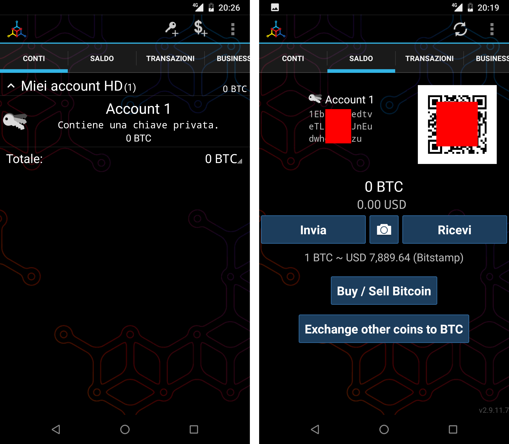
Entrando nell’app sarà possibile visualizzare il proprio address, cioè l’indirizzo al quale è possibile farvi inviare Bitcoin; è l’equivalente dell’IBAN per un conto corrente bancario tradizionale. Si tratta di una stringa di lettere e numeri, che per praticità può essere visualizzata anche con un QR Code come quello riportato nella figura sottostante.
Quello sopra riportato, ad esempio, è il QR Code del mio indirizzo Bitcoin: 13t6zL7Z7pqoW3wL3jpbqKUMWYNVduX118
Se il libro vi sta piacendo, potete scansionare il QR Code con il vostro wallet, indicare la cifra in Bitcoin equivalente ad 1 € e confermare l’invio. Donandomi un euro, potete fare pratica con il wallet ed io potrò verificare l’apprezzamento del libro da parte dei lettori. Se il tempo da me impegnato a scrivere questo libro sarà stato ripagato, sarò più incentivato a scriverne altri e a renderli pubblicamente disponibili a chiunque in forma gratuita.
Il compito del QR code è evitare di dover eseguire manualmente l’operazione di lettura e digitazione dell’address che porterebbe a compiere errori di battitura e di conseguenza a non ricevere i fondi.
Per inviare l’equivalente di € 10, Bob non dovrà far altro che far scansionare il QR Code di Alice, indicare l’importo che desidera trasferire, e confermare la volontà appunto, di voler trasferire i fondi. Se Bob non è fisicamente accanto ad Alice, può farsi inviare l’address via E-mail, WhatsApp, Facebook o qualsiasi altro sistema. Bob lo copierà e lo inserirà nella proprio wallet come destinatario a cui inviare il denaro. Nel giro di pochi secondi Alice vedrà sul proprio smartphone la transazione di Bob. In realtà per avere la certezza matematica occorre attendere almeno un paio di “conferme”. Approfondiremo nei prossimi paragrafi questo argomento.
Alice si ritroverà quindi con l’equivalente in Bitcoin di € 10, e potrà spenderli per acquistare prodotti e servizi o per scambiare denaro con lo stesso Bob o con altri amici e conoscenti.
Sostanzialmente se due persone sono nello stesso luogo, devono semplicemente lanciare le rispettive app. Chi deve ricevere il pagamento deve mostrare l’address in formato QR Code a chi deve effettuare il pagamento, che non deve far altro che fotografarlo con il proprio wallet, indicare la cifra e confermare la volontà di effettuare il pagamento.
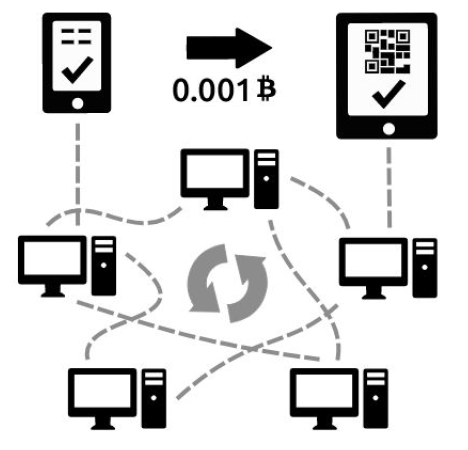
Se le due persone non sono fisicamente vicine, il ricevente dovrà inviare l’address in formato testuale via e-mail, via chat o in qualsiasi altro modo. Per assurdo potrebbe stampare il QR Code su un foglio e inviarlo tramite posta tradizionale. È possibile creare un’immagine del proprio QR code ed inviarla via e-mail, WhatsApp o tramite altri sistemi, anche se solitamente si preferisce sfruttare le stringhe testuali in questi casi, per una maggior comodità di copia e incolla, molto più pratici ad esempio se si sta usando il PC.
Ora che abbiamo visto un tipico caso di pagamento, scendiamo nel dettaglio di come tutto ciò avvenga tecnicamente e di quali soluzioni sono state adottate per evitare che Alice o Bob o una terza persona possano accreditarsi o spendere più Bitcoin di quelli che in realtà possiedono.
5.3. Le transazioni
Una transazione è il semplice trasferimento tra due persone (ognuna con il suo address), di una determinata quantità di Bitcoin. Ogni volta che il wallet esegue un operazione di pagamento, la quantità di Bitcoin, l’address di partenza e quello di destinazione vengono inglobati in una transazione che successivamente viene immessa nella rete Bitcoin. Come abbiamo visto in precedenza, si tratta di una rete distribuita P2P; nel giro di pochi secondi tutti i nodi della rete riceveranno la transazione, contenente l’informazione che potremo parafrasare in questo modo: trasferire 0.001 Bitcoin dall’address 1Aq78kKWfSJ… all’address 1PGWeexxucf… . Grazie alla crittografia, come abbiamo visto in precedenza, è possibile firmare queste informazioni, in modo da poter garantire che gli 0.001 Bitcoin che Bob sta mandando ad Alice siano effettivamente di proprietà di Bob e che a sua volta li abbia precedentemente ricevuti da un altro utente, e così via.

Nell’immagine vediamo Alice mostrare a Bob il proprio QR CODE. Bob, dopo averlo fotografato con il suo smartphone, digiterà l’importo in euro o in Bitcoin che desidera trasferire ad Alice e confermerà l’operazione. Nasce così una nuova transazione che possiamo riassumere tradurre così: "dall’address di Bob devono essere trasferiti 0.001 Bitcoin all’address di Alice". La transazione viene inviata dallo smartphone di Bob nella rete P2P di Bitcoin, e nel giro di pochi istanti viene trasferita a tutti i nodi connessi, tra cui anche il tablet di Alice, che a quel punto vedrà la transazione di Bob.
| I Bitcoin non sono ancora nella disponibilità di Alice, per ora, la transazione deve essere considerata come "in lavorazione" o "in corso". Vedremo nei paragrafi successivi quando Alice potrà avere effettivamente la disponibilità di questi fondi. |
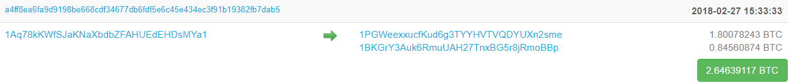
Nell’immagine vediamo la struttura della transazione così come viene mostrata dal sito: https://blockchain.info/it/
In questa immagine è riportata una transazione che invia da un address 6,5 bitcoin ad un altro address e 0.57 ad un altro address. In ogni transazione possono esserci più input e più output. Ipotizziamo di aver ricevuto in passato 10 BTC con 10 transazioni differenti ognuna da 1 BTC. Se dobbiamo eseguire un pagamento di 9,5 BTC, la transazione che il nostro wallet creerà avrà come INPUT le 10 transazioni da 1 BTC, e 2 transazioni di OUTPUT, una da 9,5 verso chi dobbiamo pagare ed una da 0,5 BTC verso noi stessi, come resto. Più input ed output sono presenti nella transazione, più lo spazio occupato dalla transazione aumenta. Questo parametro è importante per calcolare i costi di commissione che chi paga dovrà sostenere per inviare la transazione. Approfondiremo questo aspetto nel capitolo successivo, per ora accontentiamoci di sapere che ogni transazione che immettiamo nella rete Bitcoin richiede un piccolo costo di commissione.
5.4. I miner
I miner raccolgono, analizzano e aggregano le transazioni che viaggiano sulla rete peer to peer di Bitcoin. Il loro compito è quello di verificare le singole transazioni, controllando che la firma crittografica di ognuna sia valida e che quindi i Bitcoin che si stanno spendendo appartengano effettivamente alla persona che sta cercando di trasferirli. Tutte le transazioni valide vengono quindi inserite in un blocco, che non è altro che un insieme di transazioni. A questo punto il miner deve calcolare la funzione di hash del blocco, che come abbiamo visto in precedenza, ha lo scopo di garantire che questo insieme di transazioni non subisca modifiche. Nel caso ciò avvenisse, la funzione di hash del blocco genererà un output differente, e tutti potranno verificarlo ed accorgersi che qualcosa è stato modificato. Il miner trasmetterà quindi il blocco e il relativo codice hash, sulla rete Bitcoin e tutti gli altri nodi nel giro di alcuni secondi lo riceveranno. A questo punto i nodi dovranno leggere il contenuto del blocco, calcolare che l’hash sia corretto, altrimenti il blocco sarà scartato dal sistema in quanto non rispetta il protocollo. Oltre a controllare il blocco nel suo complesso, i nodi aprono il blocco e controllano la correttezza di ogni singola transazione.
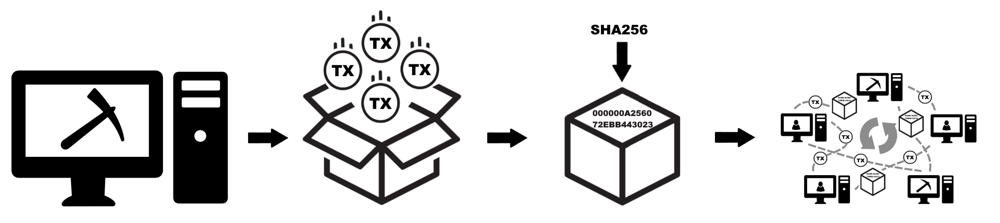
Nell’immagine vediamo come i miner, raccolgano le transazioni che circolando sulla rete Bitcoin, per aggregarle in un blocco, che a sua volta viene distribuito sulla rete peer to peer.
5.5. La blockchain
La blockchain è un insieme di blocchi accodati l’uno all’altro. Una transazione si dice confermata quando il blocco che la contiene viene accodato alla blockchain. Ogni blocco successivo a quello contenente la transazione costituisce un‘ulteriore conferma. Maggiore è il numero di conferme, maggiore è la sicurezza che questa transazione sia sicura ed immutabile. Una transazione viene comunemente considerata immutabile dopo 6 conferme. Per piccoli importi normalmente viene ritenuta sufficiente una sola transazione.
| Fino a quando la transazione non è inserita nella blockchain, e confermata da una serie di blocchi, non si ha la matematica certezza di poter disporre dei fondi. La transazione potrebbe infatti essere stata generata per spendere dei fondi che in realtà Bob non ha a disposizione. |
Immaginate un treno in cui ogni vagone, oltre ad avere la propria targa, riporta l’indicazione della targa del vagone che lo precede. Quindi il primo vagone avrà la propria targa e riporterà l’indicazione della targa della motrice. Il secondo vagone avrà la propria targa e riporterà la targa del primo vagone, ecc. Queste targhe sono in realtà le funzioni di hash dei singoli blocchi. Chiunque possiede i vagoni, anche se questi sono stati mescolati in un ordine casuale, può ripristinare l’ordine corretto a partire dalla motrice. La motrice nel caso della blockchain di Bitcoin prende il nome di "Genesis Block", il blocco da cui tutto ebbe inizio il 3 gennaio del 2009. Attaccato a questo blocco sono stati aggregati ad oggi oltre 500.000 blocchi, in media uno ogni 10 minuti.
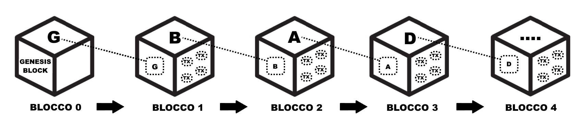
Nell’immagine possiamo vedere come il Blocco 1 contenga al suo interno, la funzione di hash del Blocco 0, rappresentato con la lettera G (in realtà l’output della funzione è una stringa di 64 caratteri). Nel Blocco 2, oltre alle nuove transazione sarà presente l’hash del Blocco 1, rappresentato con la lettera B, e così via.
In questo modo tutte le transazioni in Bitcoin, da quando questo è stato creato, sono archiviate nella Blockchain, che è quindi un grandissimo libro mastro, composto dall’archivio completo di tutte le transazioni che sono state realizzate in Bitcoin dal 2009 ad oggi. Parliamo di oltre 150 GB di dati, in continua crescita.
Qui sfatiamo uno dei tanti miti che circolano in rete e sui mass media: “Bitcoin è anonimo” La definizione corretta è PSEUDOANONIMO, in quanto non c’è una correlazione diretta tra gli address e un persona, però tutte le transazioni di un singolo address sono visibili a chiunque. E’ come se chiunque potesse accedere ai nostri conti correnti bancari, vedere ogni singola transazione, il saldo, ecc. Non esiste una connessione tra il conto corrente e la persona. Se ad esempio Alice volesse, può in modo semplice, risalire tramite l’address da cui ha ricevuto i Bitcoin, a tutte le transazioni che Bob ha fatto con quel conto, e a quanto ammonta il suo saldo su quello specifico address. I siti che permettono di consultare la blockchain si chiamano BLOCK EXPLORER o semplicemente EXPLORER; nei prossimi capitoli ne descriveremo in modo dattagliato il funzionamento.
5.6. I blocchi
I blocchi sono un insieme di transazioni, che vengono accorpate in un unico "file". Il protocollo della rete Bitcoin stabilisce che ogni blocco non può avere dimensione superiore ad 1 MB (megabyte), che equivale circa a 3.000 transazioni. Immaginate il blocco come una cartella sul pc dove potete inserire i vostri file (le transazioni). Questa cartella può arrivare a pesare al massimo un megabyte. Ogni blocco è accompagnato dal proprio hash, ovvero da quella stringa alfanumerica generata dalla funzione di hash. I blocchi vengono quindi creati e distribuiti sulla rete Bitcoin dai miner.
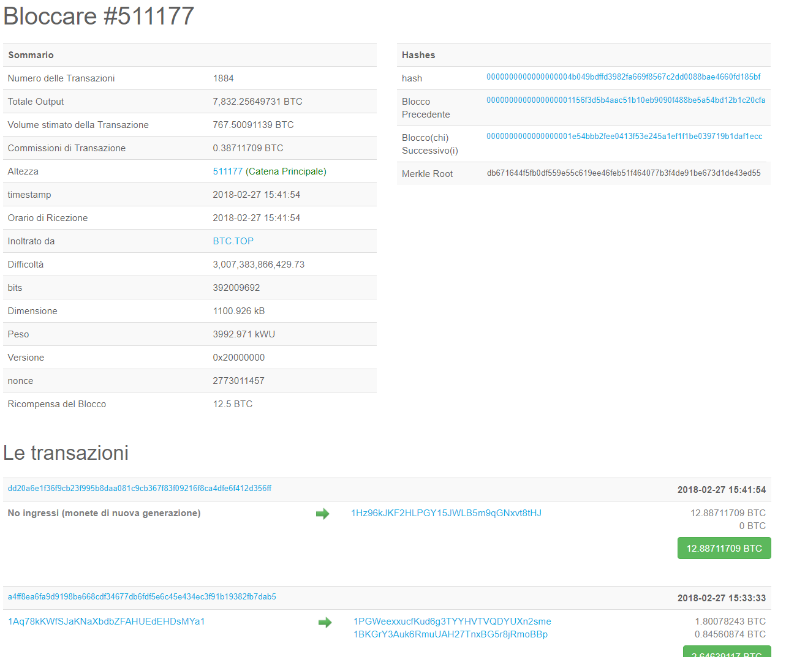
Nell’immagine vediamo la struttura del blocco così come viene mostrata dal sito: https://blockchain.info/it/block/0000000000000000004b049bdffd3982fa669f8567c2dd0088bae4660fd185bf In alto a sinistra il numero del blocco, preceduto dal cancelletto, nella tabella sottostante tutti i dati relativi al blocco. In alto a destra l’hash del blocco seguito da quello del blocco precedente e di quello successivo. Nella parte inferiore inizia la lunga lista delle transazioni.
Proviamo ora a riepilogare i vari passaggi che avvengono da quando creiamo una nuova transazione con il nostro wallet, fino a quando questa viene scritta nella blockchain.
Tramite l’utilizzo del wallet gli utenti generano transazioni ogni volta che eseguono un pagamento. Queste transazione vengono immesse dal wallet, nella rete Bitcoin. La rete è l’interconnessione di tutti i dispositivi che utilizzano Bitcoin principalmente wallet e miner. Le transazioni vengono quindi raccolte, verificate e accorpate dai miner in blocchi. Assieme al blocco viene generata la funzione di hash che permette di verificare che il blocco non subirà variazioni, altrimenti ciò comporterebbe una variazione del suo hash. Ogni blocco viene quindi nuovamente immesso nella rete peer to peer di Bitcoin dove i nodi lo ricevono, lo verificano e lo accodano alla blockchain, che di fatto è un unico grande file con all’interno tutte le transazioni in bitcoin da quando questo è nato ad oggi.
Tutto chiaro fino a qui? E’ importante comprendere bene i concetti descritti in questo capitolo in quanto sono la base del funzionamento del Bitcoin. Se hai qualche dubbio, prenditi il tuo tempo e rileggi questo capitolo con calma, prima di proseguire. A prima vista può sembrare un sistema complesso, ma in realtà, compresi i ruoli dei singoli soggetti che operano sulla rete, e avendo preso dimestichezza con i termini tecnici, il tutto si dimostrerà molto più semplice di quanto possa sembrare dopo una prima lettura.
6. La competizione tra miner
Nel capitolo precedente abbiamo visto come i miner raccolgono le transazioni che viaggiano sulla rete Bitcoin, le verificano e le accorpano in un blocco. Dopo aver eseguito queste operazioni, i miner devono calcolare la funzione di hash di questo blocco. Un normalissimo PC casalingo, per eseguire questo calcolo, richiede pochi millesimi di secondo, ogni minuto potrebbero quindi essere generati migliaia e migliaia di blocchi da parte di ogni miner. Un così elevato numero di blocchi congestionerebbe la rete di bitcoin, infatti ogni node della rete, dovrebbe scambiare migliaia di blocchi generati con tutti gli altri nodi e viceversa.
Satoshi ha quindi ideato ed implementato un sistema che permette la generazione di un solo blocco ad un solo miner,in media ogni 10 minuti, indipendentemente da quanti siano i miner connessi in quel momento alla rete. In questo modo tutti i nodi, ogni 10 minuti circa, dovranno scambiarsi reciprocamente un solo blocco e cioè un singolo file da un megabyte. Per ottenere questo risultato ha implementato una serie di regole nel protocollo bitcoin, che ora analizzeremo più nel dettaglio.
6.1. Proof of work in Bitcoin
Nei capitoli precedenti abbiamo visto che cos’è e a cosa serve una funzione di hash. Facciamo un breve riepilogo. Dato un determinato testo, file (o blocco), una funzione di hash è in grado di generare in output una stringa di caratteri alfanumerici. Anche la più piccola variazione effettuata sui dati in ingresso genera in uscita una stringa completamente differente rispetto a quella generata precedentemente.
I am Satoshi Nakamoto0 > a80a81401765c8eddee25df36728d732acb6d135bcdee6c2f87a3784279cfaed
I am Satoshi Nakamoto1 > f7bc9a6304a4647bb41241a677b5345fe3cd30db882c8281cf24fbb7645b6240
I am Satoshi Nakamoto2 > ea758a8134b115298a1583ffb80ae62939a2d086273ef5a7b14fbfe7fb8a799e
I am Satoshi Nakamoto3 > bfa9779618ff072c903d773de30c99bd6e2fd70bb8f2cbb929400e0976a5c6f4
I am Satoshi Nakamoto4 > bce8564de9a83c18c31944a66bde992ff1a77513f888e91c185bd08ab9c831d5
I am Satoshi Nakamoto5 > eb362c3cf3479be0a97a20163589038e4dbead49f915e96e8f983f99efa3ef0a
I am Satoshi Nakamoto6 > 4a2fd48e3be420d0d28e202360cfbaba410beddeebb8ec07a669cd8928a8ba0e
I am Satoshi Nakamoto7 > 790b5a1349a5f2b909bf74d0d166b17a333c7fd80c0f0eeabf29c4564ada8351
I am Satoshi Nakamoto8 > 702c45e5b15aa54b625d68dd947f1597b1fa571d00ac6c3dedfa499f425e7369
I am Satoshi Nakamoto9 > 7007cf7dd40f5e933cd89fff5b791ff0614d9c6017fbe831d63d392583564f74
I am Satoshi Nakamoto10 > c2f38c81992f4614206a21537bd634af717896430ff1de6fc1ee44a949737705
I am Satoshi Nakamoto11 >7045da6ed8a914690f087690e1e8d662cf9e56f76b445d9dc99c68354c83c102
I am Satoshi Nakamoto12 > 60f01db30c1a0d4cbce2b4b22e88b9b93f58f10555a8f0f4f5da97c3926981c0
I am Satoshi Nakamoto13 > 0ebc56d59a34f5082aaef3d66b37a661696c2b618e62432727216ba9531041a5
I am Satoshi Nakamoto14 > 27ead1ca85da66981fd9da01a8c6816f54cfa0d4834e68a3e2a5477e865164c4
I am Satoshi Nakamoto15 > 394809fb809c5f83ce97ab554a2812cd901d3b164ae93492d5718e15006b1db2
I am Satoshi Nakamoto16 > 8fa4992219df33f50834465d30474298a7d5ec7c7418e642ba6eae6a7b3785b7
I am Satoshi Nakamoto17 > dca9b8b4f8d8e1521fa4eaa46f4f0cdf9ae0e6939477e1c6d89442b121b8a58e
I am Satoshi Nakamoto18 > 9989a401b2a3a318b01e9ca9a22b0f39d82e48bb51e0d324aaa44ecaba836252
I am Satoshi Nakamoto19 > cda56022ecb5b67b2bc93a2d764e75fc6ec6e6e79ff6c39e21d03b45aa5b303aCome vediamo nell’esempio modificando l’ultima cifra otteniamo degli hash completamente differenti l’uno dall’altro.
Abbiamo fatto un semplice esperimento in cui i partecipanti dovevano lanciare 10 dadi, cercando di ottenere il punteggio richiesto. Aumentando l’obiettivo, il numero di lanci necessari per ottenere il risultato atteso cresce a dismisura, fino a richiedere in media oltre 60.000.000 di lanci per ottenere il punteggio di 60. Lo stesso approccio è utilizzato nel protocollo Bitcoin per gestire i miner e la loro capacità di generare l’hash di un blocco di transazioni. Il protocollo prevede infatti che l’hash di un blocco debba iniziare con una serie di 0 (ad esempio 00000000fd45e ecc.)
Statisticamente occorre effettuare 16 modifiche per riuscire a generare un output con almeno uno 0 iniziale. Nell’esempio precedente questo risultato si è ottenuto aggiungendo il numero 13 alla stringa. Ovviamente maggiore è il numero di zeri iniziali richiesti, maggiore è la quantità di funzione di hash che devono essere svolte per riuscire a trovare un risultato con queste caratteristiche. Stiamo parlando di una crescita esponenziale all’aggiunta di ogni 0 successivo al primo.
Ipotizziamo di essere un miner, ed aver creato il blocco di transazioni da 1 MB, e di aver calcolato l’hash di questo blocco, ad esempio 234894d63ab80c10af9ffc382c63283175a7867c486100d901b0d2d8adcddcad.
L’hash in questo caso, inizia per 2. Non rispecchia l’obiettivo di iniziare ad esempio con 10 zeri. Il blocco non può quindi essere considerato valido, in quanto gli altri nodi lo ignorerebbero, deve quindi essere modificato, con l’aggiunta di un semplice numero, ad esempio “1” (in crittografia la modifica di questo valore prende il nome di NONCE) A questo punto il blocco è diverso da quello precedente (in quanto è stato aggiunto il carattere “1”) e genererà un hash diverso ad esempio 0074f551bcc5f6bf727ede435899a3fc7001fc352d09e0ec1258d5f8691db286e. Questo nuovo hash non inizia per 10 zeri, e quindi occorre incrementare in NONCE a 2 e continuare così, per migliaia e migliaia di volte fino a quando non verrà generato un hash che corrisponde alle caratteristiche richieste.
6.2. Hashpower e retarget
In un’ipotetica rete composta da due soli computer, la potenza di calcolo di queste macchine non varia nel tempo. Se l’obiettivo è quello di generare mediamente un blocco ogni 10 minuti, basterà alzare o abbassare il numero di zeri all’inizio del hash del blocco, fino ad ottenere il risultato voluto. La rete Bitcoin però è aperta e chiunque può aggiungere o togliere nuovi computer che svolgono il ruolo di miner. Il livello di difficoltà quindi deve variare in funzione della potenza di calcolo dell’intera rete Bitcoin. Questa potenza di calcolo prende il nome di hashpower o hashrate. Come fare quindi a calcolare qual è effettivamente la potenza di calcolo dell’intera rete Bitcoin? Semplice, basta monitorare ogni quanto tempo vengono generati gli ultimi blocchi e fare una media, se il tempo medio ottenuto è inferiore a 10 minuti, significa che la rete sta trovando con troppa facilità nuovi blocchi e la difficoltà va aumentata (un hash del blocco dovrà avere più zeri iniziali). Viceversa se la rete impiega mediamente più di 10 minuti, significa che sono presenti meno miner, e la difficoltà deve essere diminuita (un hash del blocco dovrà avere meno zeri iniziali). Il ricalcolo del livello di difficoltà sulla rete Bitcoin, avviene ogni 2016 blocchi, cioè ogni 2 settimane circa e prende il nome di RETARGET. Ogni software che si interfaccia alla rete Bitcoin lo può calcolare autonomamente, con un semplice calcolo matematico.
6.3. La competizione tra i miner
Ogni 10 minuti quindi, parte una vera e propria gara tra tutti i miner del mondo, per generare un nuovo blocco. Ognuno di essi dovrà comporre un nuovo blocco e iniziare a calcolarne l’hash fino a quando non otterrà un hash che inizi con il numero di zeri richiesti. A quel punto invierà il blocco e il relativo hash sulla rete agli altri nodi. I miner, ricevendo questo blocco, ne verificheranno la correttezza, ricalcolando l’hash del blocco. In questo caso basterà un millisecondo per verificare se il lavoro svolto dall’altro miner è corretto. Se lo è, il blocco verrà quindi accodato alla blockchain. Tutti gli altri miner interromperanno il lavoro in corso sul blocco precedente, e ricominceranno da zero, generando un nuovo blocco con nuove transazioni, calcolandone l’hash, nella speranza di trovarlo nel minor tempo possibile.
Per remunerare questo sforzo computazionale, Satoshi ha previsto che ogni miner possa auto assegnarsi una certa quantità di Bitcoin prestabilita. Questa ricompensa prende il nome di coinbase ed è sempre la prima transazione di ogni blocco. Anche questa, ovviamente, è gestita e regolata da concetti matematici. Quando tutti gli altri miner verificheranno il lavoro svolto da chi ha prodotto il blocco, tra le altre cose, si accerteranno che il creatore non si sia auto assegnato più Bitcoin di quelli stabiliti dal protocollo.
Il sistema adottato per l’assegnazione della ricompensa è molto semplice, ogni quattro anni circa (per l’esattezza ogni 210.000 blocchi) la quantità di Bitcoin che un miner può ottenere per la generazione di ogni blocco si dimezza. Dal genesis block, al blocco numero 209.999 (minato il 28-11-2012) la ricompensa è stata di 50 Bitcoin a blocco, per poi essere dimezzata a 25 bitcoin fino al blocco numero, 419.999 (minato il 09-07-2016). A partire del blocco 420.000 la ricompensa è quindi stata ulteriormente dimezzata a 12.5 e rimarrà invariata fino al blocco 630.000, che in base alle stime attuali verrà minato tra maggio e giugno del 2020, e così via fino al 2140 circa quando verrà minato l’ultimo Satoshi. Da quel momento in avanti non saranno più creati nuovi Bitcoin, essendo stato raggiunto il numero massimo stabilito dal protocollo di 21.000.000 di unità.
Questo sistema oltre a remunerare i miner detta anche la politica monetaria di Bitcoin. Infatti chiunque può calcolare l’inflazione a partire dal Genesis block fino al 2140 circa, dopo questa data la ricompensa per la generazione di nuovo blocco sarà zero. In questo momento l’inflazione, intesa come l’incremento della massa monetaria in circolazione, è di circa del 4% per l’anno 2018.
Facciamo due calcoli:
525.600 (minuti ogni anno 365*24*60) diviso 10 (minuti ogni blocco) uguale 52.560 blocchi all’anno circa.
Ogni blocco genera 12.5 Bitcoin di ricompensa che prima non esistevano, di conseguenza possiamo dire che a fine 2018 saranno generati nel corso dell’anno, circa 657.000 nuovi Bitcoin (52.560 blocchi per 12.5).
La massa monetaria di Bitcoin in circolazione il 31/12/2017 era di circa 16.774.000 quindi facendo la proporzione
16.774.000:657.000= 100:x abbiamo un x che vale 3,916 % (inflazione per l’anno 2018).
Per l’anno 2019, la massa monetaria sarà di circa 17.431.000 Bitcoin (16.774.000 quella a fine 2017 più i 657.000 generati nel 2018), mentre i Bitcoin generati saranno sempre circa 657.000, quindi avremo la seguente proporzione
17.431.000:657.000= 100:x dove x vale 3,769 % (inflazione per l’anno 2018).
Nel 2020 come detto nel paragrafo precedente, la quantità annua di Bitcoin generati si dimezzerà e di conseguenza l’inflazione nei 4 anni successivi andrà da circa 1,79% per il 2021 al 1,69% nel 2024.
Nel quadriennio successivo si dimezzerà nuovamente, e così via fino al 2140, quando si arriverà ad un’inflazione dello 0%.In realtà dobbiamo parlare di moneta deflattiva, perchè a causa di banali errori, ad esempio un miner che si dimentica di autoassegnarsi la ricompensa, oppure la perdita delle chiavi private e quindi l’impossibilità di spendere i Bitcoin, o a causa di altre procedure che permettono il salvataggio di dati nella blockchain “bruciando” Bitcoin, più passa il tempo più la quantità di moneta effettivamente in circolazione tenderà a decrescere. I dati ottenuti nei calcoli precedenti sono quindi da ritenersi stime per eccesso.

In questo grafico in blu, con la scala sull’asse Y di destra, la quantità di Bitcoin emessa fino ad oggi e quella prevista per i prossimi anni; in rosso l’andamento dell’inflazione. Immagine tratta da: https://bitcointalk.org/index.php?topic=130619.0
6.4. Commissioni
Oltre alla ricompensa riconosciuta ad ogni miner per la generazione di un blocco, la cosiddetta coinbase, i miner vengono remunerati con delle piccole commissioni per ogni transazione inserita in un blocco. La ricompensa totale sarà quindi composta dal coinbase sommato a tutte le singole commissioni di ogni transazione inclusa nel blocco.
Ogni transazione, per essere processata da un miner ed inclusa in un blocco, prevede una commissione (in inglese fee), che viene nella stragrande maggioranza dei casi, pagata da chi invia il denaro. Inserendo nel blocco ad esempio 2000 transazioni, il miner porterà a casa la coinbase più la somma di queste fee.
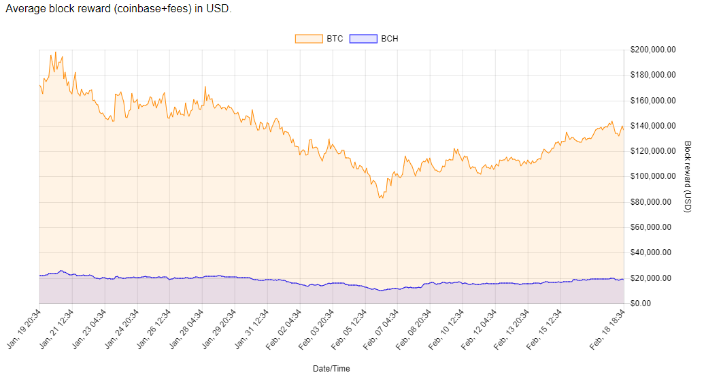
Grafico delle ricompense per ogni blocco minato di Bitcoin in giallo e di Bitcoin Cash in blu. Immagine tratta da: https://fork.lol/reward/blocks
Per ottenere maggiori guadagni, il miner darà quindi priorità alle transazioni con fee più alte. In linea di massima possiamo dire che le transazioni vengono ordinate per fee partendo da quelli con valori più alti. Sarà quindi questo ordine a stabilire quali transazioni avranno priorità nell’essere processate. Essendoci un limite di 1MB per blocco, alcune transazione con meno fee, potrebbero rimanere fuori, ed entrare solamente nei blocchi successivi, quando non saranno presenti transazioni con fee maggiori. Il costo delle commissioni varia nel tempo, seguendo la legge della domanda e dell’offerta. Il prezzo delle commissioni non è fisso e non è legato all’importo trasferito, ma alla dimensione della transazione.
| Nei periodi in cui sono presenti tante transazioni se si desidera avere priorità nell’elaborazione e quindi essere inseriti prima nei blocchi e quindi nella blockchain, occorre spendere di più in commissioni. A puro titolo di esempio, a Dicembre 2017 ci sono stati dei momenti in cui per veder confermata una transizione nel giro di qualche ora, era richiesta una commissione dell’equivalente di 50€. Viceversa nei periodi in cui sono presenti poche transazioni potrebbe bastare una commissione di pochissimi centesimi di euro. Occorre quindi monitorare l’andamento delle commissioni, soprattutto nel caso in cui sia necessario avere una conferma immediata delle transazioni in poco tempo. I wallet svolgono il calcolo della commissione per conto vostro. Monitorate questo costo con attenzione prima di eseguire la transazione. Se la cifra è piccola, valutate di cambiare BTC per altre monete, ad esempio LTC o BCH che fino a questo momento si sono dimostrate soffrire meno di questi sbalzi nei costi delle transazioni. |
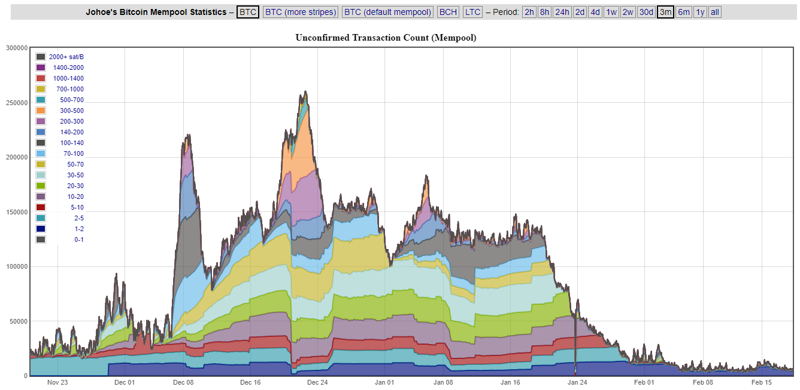
Immagine tratta da: https://dedi.jochen-hoenicke.de/queue/#3m In questa immagine è possibile apprezzare il costo espresso in satoshi/Byte, tra fine novembre 2017 e metà febbraio 2018.
La ricompensa del miner può quindi variare molto, inoltre essendo pagati in Bitcoin segue l’andamento del prezzo del bene stesso. A dicembre 2017 quando Bitcoin raggiunse quota 20.000 la ricompensa per ogni blocco sommando coinbase e fee (che in quel momento erano particolarmente alte), raggiungeva circa trecentomila dollari. Quindi ogni 10 minuti i miner competevano tra di loro per vincere un premio da 300.000 dollari. A febbraio 2018 con il prezzo che scese fino a 6.000 dollari, e le fee tornate a pochi centesimi a transazione, la ricompensa totale per blocco è scesa fino a circa 100.000 dollari a blocco.
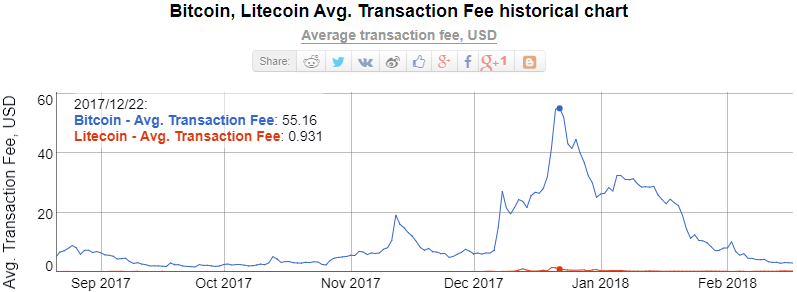
Immagine tratta da: https://bitinfocharts.com/comparison/transactionfees-btc-ltc.html#6m I dati in alto a sinistra si riferiscono al punto evidenziato nel grafico, dove il costo medio di transazione per Bitcoin era arrivato a circa 55 $ per singola transazione, mentre LTC era inferiore ad 1 $.
Con queste prospettive di guadagno è scattata una vera e propria corsa agli “armamenti”, per accaparrarsi le risorse di calcolo da destinare all’attività di mining.
Negli anni si è passati da minare Bitcoin con i semplicissimi computer casalinghi, passando poi a sfruttare i processori di potenti schede grafiche, fino ad arrivare alla produzione di dispositivi hardware appositi detti ASIC.
| Tratto da Wikipedia: “In elettronica digitale un application specific integrated circuit (ASIC) è un circuito integrato creato appositamente per risolvere un’applicazione di calcolo ben precisa”. Nel nostro caso sono circuiti stampati appositamente per eseguire il calcolo della funzione di hash SHA256. Immaginate una sorta di “computer” in grado di fare esclusivamente quel calcolo, ma farlo in modo estremamente rapido, migliaia e migliaia di volte più veloce di quanto non lo possa fare il processore del vostro PC. |
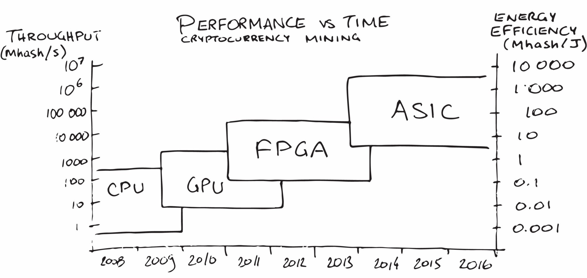
La crescita delle performance nella capacità di calcolo che c’è stata dal 2009 ad oggi è di tipo esponenziale. Oggi minare un blocco Bitcoin con un PC casalingo richiederebbe centinaia e centinaia di anni, anche perché la potenza di calcolo dell’intera rete Bitcoin è cresciuta a dismisura, quindi la competizione tra i miner è diventata elevatissima.
| TECNOLOGIA | CAPACITA' DI CALCOLO |
|---|---|
ASIC (hardware dedicato) |
10 000 ~ 1 000 000 |
CPU Singola |
1 |
CPU Multi-core |
10 |
GPU (scheda video) |
100 |
FPGA |
1.000 |
In questa tabella la comparazione delle varie tecnologie, utilizzando come unità di misura la potenza di calcolo di una CPU con unico core.
Questi dispositivi sono energivori, vanno quindi considerati i costi del consumo elettrico per alimentare l’hardware e quelli per dissipare il calore. Diventa quindi più profittevole minare dove l’energia costa poco. Ad agosto 2017 è stato stimato che il consumo totale di energia da parte della rete Bitcoin fosse equiparabile al consumo dell’intera Tunisia. Questo consumo elettrico imponente, garantisce che nessuno possa modificare il contenuto dei blocchi, perché per farlo, occorrerebbe una quantità di energia almeno doppia rispetto a quella utilizzata attualmente dalla rete Bitcoin. Per approfondimento l’argomento vi consiglio questo interessante articolo: https://aspoitalia.wordpress.com/2017/08/22/bitcoin-la-catastrofe-ecologica/
7. Caratteristiche tecniche e monetarie
In questo capitolo riepilogheremo le caratteristiche principali di Bitcoin, descrivendo punto su punto le sue qualità e i suoi limiti, approfittando per fare un riepilogo dei capitoli precedenti.
La rete di Bitcoin è di tipo distribuito ed è composta da tantissimi client interconnessi tra loro, questo la rende tecnicamente non censurabile, non può essere chiusa, bloccata o limitata. Chiunque può accedere alla rete Bitcoin anche all’interno di paesi che ne vietano l’utilizzo.
Bitcoin è permissionless, cioè per usarlo non è richiesta l’autorizzazione da parte di nessuno, non serve registrarsi da nessuna parte, né dimostrare la propria identità, non servono documenti ad esempio, o una quantità minima di fondi per aprire un conto. Chiunque può accedere a una serie di servizi finanziari che fino ad oggi gli erano preclusi. In Italia non abbiamo questo tipo di problema, ma in altre parti del mondo grandi fette della popolazione non possono accedere ai servizi finanziari.
Bitcoin è trustless, non è richiesto alcun tipo di fiducia nella controparte, non esistono ad esempio Bitcoin falsi. La moneta per la legge della domanda e dell’offerta può subire forti variazioni di prezzo, ma non può tecnicamente andare in default come una banca o uno stato.
Bitcoin è open source, significa che tutto il codice di programmazione utilizzato per creare i software che si interfacciano con la rete Bitcoin è consultabile da chiunque. Non c’è alcun segreto o sistema misterioso dietro al suo funzionamento, tutto è scritto nero su bianco con regole matematiche che non si prestano ha alcun tipo di interpretazione. Spesso si utilizza l’espressione: “code is law”, il codice é legge, proprio per indicare che quello che è scritto nei codici di programmazione è ciò che realmente conta. Un’altra caratteristica legata al open source é che chiunque voglia, può migliorare il codice, proponendo nuovi cambiamenti, correggendo eventuali errori, ecc. Inoltre è possibile copiare in toto i codici dei vari software coinvolti, modificarli e generare un’altra moneta, come per esempio è stato fatto per Litecoin (LTC), per Bitcoin Cash (BCH) e per molte altre.
I Bitcoin sono emessi in quantità predefinita, non si possono creare più Bitcoin di quanti stabiliti matematicamente dal codice sorgente. La creazione di nuova moneta è quindi dettata da regole chiare che non si prestano ad interpretazione e visibili a tutti. La politica monetaria di questa moneta è dettata dalla matematica e non dalla politica, dalla finanza e dall’economia. Ogni volta che la BCE decide di stampare un nuovo euro, quelli che abbiamo nel portafoglio perdono inevitabilmente potere d’acquisto. Il software e la matematica che regolano i Bitcoin sono incorruttibili, non hanno interessi personali, non si può far loro pressione di alcun tipo, non sono ricattabili.
Bitcoin non richiede intermediari, non servono banche o altri istituti finanziari, ognuno può gestire in piena autonomia i propri soldi. Questa è una grande libertà, che però porta con sè anche grandi responsabilità. Se commettiamo degli errori non c’è un call center da chiamare o una filiale dove andare a chiedere una copia delle credenziali per accedere al proprio conto on-line.
Bitcoin è pseudo anonimo e NON anonimo, come molti spesso ripetono sui mass media. La grandissima libertà che questo sistema offre, può limitare la nostra privacy, se non vengono prese determinate precauzioni. Ricordiamo che ogni singola transazione riporta l’indirizzo del mittente, l’importo e l’indirizzo del destinatario. Ogni blocco viene accodato alla blockchain, quindi tutte le transazioni eseguite con bitcoin sono pubbliche. Chiunque può, data una transazione, andare a ritroso, calcolare i saldi dei singoli address e verificare quando i Bitcoin sono stati spostati e verso chi. Questo mezzo di pagamento deve essere quindi usato con consapevolezza. Esistono comunque altre monete come Monero o ZCash che adottano sistemi diversi da quelli utilizzati da Bitcoin per garantire maggiore privacy. Nulla ci vieta quindi, di vendere i Bitcoin per comprare Monero e magari tornare successivamente a Bitcoin prima di effettuare una transazione.
Il prezzo è espresso esclusivamente dal mercato, non esistono oligopoli che a tavolino decidono quanto vale il Bitcoin, come nel caso del petrolio dove l’OPEC, l’unione dei principali produttori, decide il prezzo. Ad oggi il mercato mondiale delle crittovalute è uno dei pochi in cui il prezzo fluttua liberamente sulla base della semplice domanda e offerta. Più gente decide di comprare Bitcoin più il prezzo sale, viceversa più gente decide di vendere Bitcoin più Il prezzo scende. Proprio per via della sua libertà, non sono presenti organismi di controllo, come l’americana SEC o l’italiana CONSOB, che vigilano sul mercato. Questo significa che grandi investitori, possono mettere in atto quello che in gergo viene definito “pump and dump”, che tradotto letteralmente significa pompa e scarica, ovvero spingi in alto il prezzo e poi vendi tutto. Movimentando ingenti somme, ad esempio comprando l’equivalente di centinaia di milioni di dollari in Bitcoin in pochissimo tempo, il prezzo naturalmente subisce un forte incremento, se altri utenti presi dall’entusiasmo per la crescita del prezzo comprano altri Bitcoin il prezzo cresce ulteriormente. Qui arriva quindi la fase del dump, dove l’investitore iniziale esce portando a casa i profitti, e facendo nuovamente crollare il prezzo. Questa tecnica può essere usata in modo ciclico, colpisce più che altro chi si occupa di trading e speculazione nel brevissimo periodo.
Bitcoin è riserva di valore; nonostante le fluttuazioni del prezzo, il trend che ha avuto a partire dalla sua nascita è di forte crescita. Probabilmente non potrà più crescere nei prossimi anni con questi ritmi, ma al netto delle forti oscillazioni di prezzo, si sta rivelando un ottimo bene rifugio nel medio lungo periodo. Non a caso viene definito da molti oro digitale per le sue similitudini con il più blasonato metallo giallo. Il fatto stesso che non abbia legami con altri tipi di asset lo rende immune da crolli in altri mercati offrendo quindi un altissimo potere di diversificazione, fondamentale per la gestione di portafogli di investimento bilanciati.
Non tutte le criptovalute possiedono le stesse caratteristiche di Bitcoin, ognuna ha le proprie peculiarità. E’ importante approfondire la conoscenza delle varie monete ad oggi disponibili prima di acquistarne per usarle o come investimento. In questo libro non possiamo dilungarci oltre nel descrivere le differenze tra le varie crittovalute attualmente presenti (oltre 1500 a Febbraio 2017). Online sono disponibili articoli, white paper, recensioni, video e documentazione varia sulle principali monete. Se decidete di acquistarne informatevi prima su come funzionano e su quali siano le loro caratteristiche, non date per scontato che abbiano le stesse caratteristiche di Bitcoin, perchè potrebbero essere completamente differenti sotto più punti di vista.
8. I principali strumenti: wallet, explorer, exchange
Per spiegare il funzionamento di Bitcoin abbiamo già visto che cos’è e come funziona un wallet, si tratta di un portachiavi, cioè un sistema per memorizzare le chiavi private da utilizzare per poter disporre dei Bitcoin. Più di una volta mi è stato sollevata la domanda: "Cosa succede se qualcuno genera le mie stesse 12 parole? Può accedere ai miei Bitcoin?" La risposta è SI, ma è altamente improbabile praticamente impossibile. La quantità di chiavi private generabili è di (2^256) si avvicina al numero di atomi presenti nell’universo conosciuto (stimato all’incirca in un numero che va da 2^240 e 2^280), sicuramente è più semplice per due persone trovare lo stesso granello di sabbia sul pianeta terra (che in base ad una stima molto approssimativa risulta essere 2^63), rispetto a trovare una chiave privata già utilizzata da qualcun altro.
In realtà, a causa del formato più piccolo utilizzato dall’address bitcoin (160 bit rispetto ai 256 bit delle chiavi private), più chiavi private possono accedere ai Bitcoin depositati sul medesimo address. Il numero di queste chiavi è di circa 2^96! A prima vista, un numero così grande potrebbe spaventare, significa infatti che esistono moltissime chiavi private che possono accedere ai miei Bitcoin. Il punto è che, nonostante siano tantissime, si perdono all’interno delle 2^256 esistenti. In particolare si stima che, tramite un attacco di tipo brute force, cioè un sistema automatico che prova tutte le possibili soluzioni ad un determinato problema, si riesca a trovare una chiave privata in grado di sbloccare un determinato address una volta ogni 2^160 tentativi, che sono comunque un numero considerevole per il livello tecnologico attuale. Per completezza di informazione, va inoltre detto che quando effettuiamo un trasferimento da un nostro address verso un altro address, esponiamo a terzi la chiave pubblica relativa al nostro address. Questa ulteriore informazione "facilita" l’attività di chi volesse cercare di accedere ai Bitcoin rimasti nel nostro address, riducendo di fatto il numero di tentativi medi per riuscire a sbloccare i fondi a 2^128. Anche per questo (oltre che per una questione di maggiore privacy) si consiglia di utilizzare un address una sola volta (si consiglia cioè di svuotarlo completamente la prima volta che si devono utilizzare anche solo una parte dei suoi fondi).
Da un punto di vista della sicurezza del sistema, è corretto dire che servono quindi mediamente:
-
2^160 tentativi per riuscire a rubare i Bitcoin depositati su un address dal quale non è mai stato effettuato un prelievo
-
2^128 tentativi per riuscire a rubare i Bitcoin depositati su un address dal quale è stata effettuata almeno una transazione di spesa
Per approfondire l’argomento, trovate ulteriori informazioni qui: https://bitcointalk.org/index.php?topic=1339031.0
Per chi avesse poca dimestichezza con gli elementi potenza, in questo caso parliamo di un raddoppio ogni unità espressa nell’elevamento.
2^1=2
2^2=4
2^3=8
2^4=16
2^5=32
2^6=64
…
2^20=1.048.576
…
2^30=1.073.741.824
…
2^40=1.099.511.627.776
…
2^128=340.282.366.920.938.000.000.000.000.000.000.000.000
…
2^160=1.461.501.637.330.900.000.000.000.000.000.000.000.000.000.000.000
…
2^256=115.792.089.237.316.195.423.570.985.008.687.907.853.269.984.665.640.564.039.457.584.007.913.129.639.936Esistono diversi tipi di wallet: software, hardware, cartacei. Analizziamoli ora uno ad uno evidenziando le rispettive caratteristiche.
8.1. Wallet software
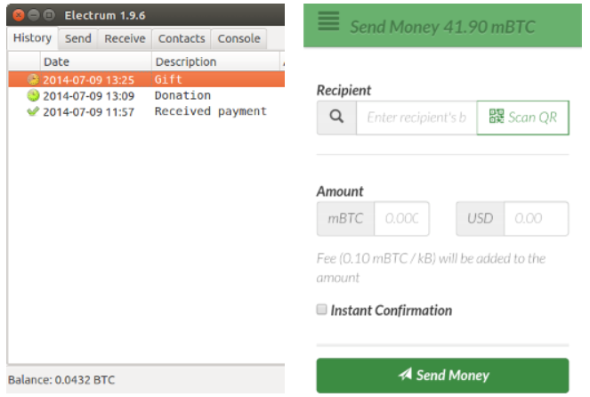
In questa immagine, a sinistra vediamo uno screenshot di Electrum per DESKTOP e a destra GreenAddress per Android. Immagini tratte da: https://bitcoin.org/it/wallets/desktop/windows/
I wallet software sono portachiavi installabili su smartphone, computer, tablet, ecc. Sono i wallet più utilizzati, pratici da usare, possiamo installarli nel nostro smartphone e averli sempre con noi. Hanno però il rischio, in quanto prodotti informatici, di essere compromessi da virus o malware. La loro sicurezza va a pari passo con la sicurezza del device informatico sul quale sono installati. Va da sé se sul vostro computer, ogni mese, vi ritrovate un virus nuovo, è altamente sconsigliabile installare un wallet software. Lo stesso discorso vale per gli altri dispositivi che utilizzate, ad esempio lo smartphone.
Trovate una lista dei wallet software per le varie piattaforme e sistemi operativi a questi indirizzi:
DESKTOP: Windows: https://bitcoin.org/it/wallets/desktop/windows/ Linux: https://bitcoin.org/it/wallets/desktop/linux/ Mac: https://bitcoin.org/it/wallets/desktop/mac/
MOBILE: Android: https://bitcoin.org/it/wallets/mobile/android/ IOS: https://bitcoin.org/it/wallets/mobile/ios/ Windows Phone: https://bitcoin.org/it/wallets/mobile/windowsphone/ Blackberry: https://bitcoin.org/it/wallets/mobile/blackberry/
Per ogni software/app è disponibile una scheda dettagliata che ne elenca pregi e difetti.
8.1.1. Wallet web
Si tratta sempre di wallet software su cui però l’utente ha meno controllo, in quanto il codice di programmazione è pubblicato su un server, può subire modifiche dai titolari del sito, senza che voi ne siate informati, o subire attacchi informatici anch’essi volti a modificare il codice. Fanno parte di questa categoria, tutti i wallet presenti nei siti degli exchange.
Trovate una lista di wallet web (esclusi gli exchange) a questo indirizzo: https://bitcoin.org/it/wallets/web/
8.2. Wallet hardware
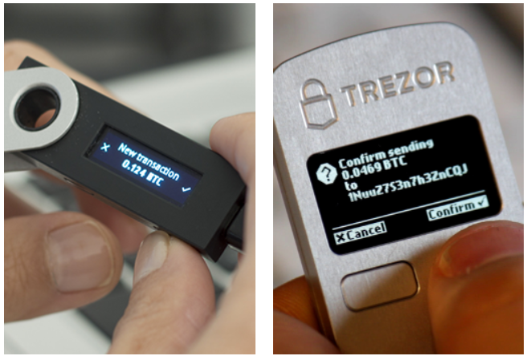
In questa immagine, a sinistra vediamo il Ledger Nano S, e a destra il Trezor Immagini tratte da: https://bitcoin.org/it/wallets/hardware/
I wallet hardware sono dei dispositivi fisici simili a delle chiavette USB su cui vengono memorizzate le chiavi private. Questi permettono la gestione di un numero limitato di monete, il loro utilizzo richiede sempre una conferma fisica, cioè la pressione di un pulsante presente sul dispositivo per autorizzare l’operazione. Questi dispositivi si devono comunque connettere al pc per funzionare. Anche in questo caso è meglio utilizzarli su computer sicuri e liberi da virus o malware.
Trovate una lista aggiornata dei wallet hardware a questi indirizzo: https://bitcoin.org/it/wallets/hardware/
8.3. Paper Wallet
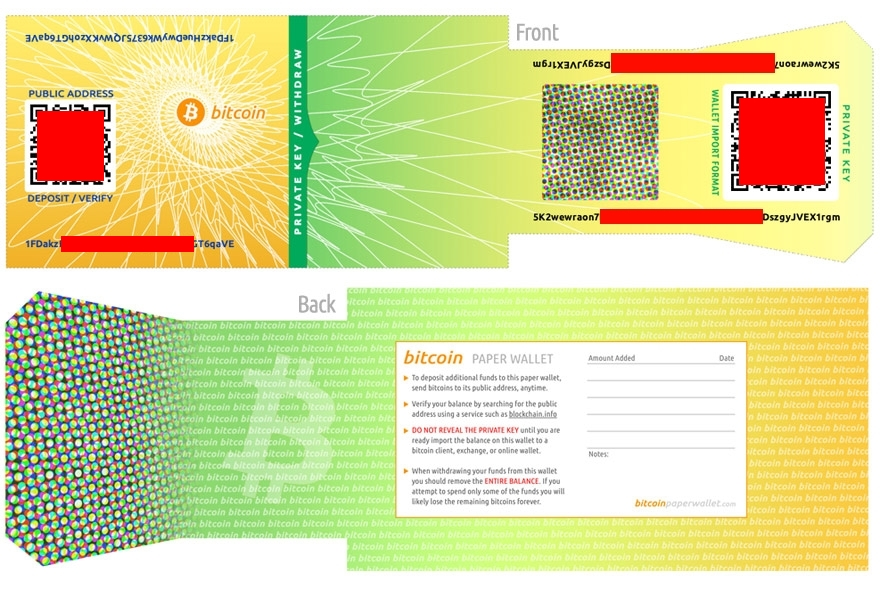
In questa immagine un paper wallet generato sul sito bitcoinpaperwallet.com
Nella parte superiore (fronte), a sinistra la chiave pubblica sia in formato QR CODE che in formato testuale, nella parte destra la chiave privata anche lei nei due formati. Nella parte inferiore (retro), sono presenti delle linee in cui è possibile tenere traccia delle transazioni effettuate. Ho censurato in rosso parti delle chiavi, per evitare che chi leggesse il libro provasse ad utilizzarle. Immagini tratte da: https://bitcoinpaperwallet.com/
I paper wallet sono portachiavi cartacei su cui vengono salvate le vostre chiavi private. Sono ideali per chi decide di comprare Bitcoin e tenerli per un certo numero di anni. In questo caso potete stamparli e metterli in cassaforte o in un altro luogo sicuro, magari avendo l’accortezza di plastificarli o comunque sostituirli dopo un certo numero di anni. La carta si può scolorare o venire mangiata da animali o insetti. Con lei sparirebbe anche la possibilità di recuperare i vostri Bitcoin. Inoltre, va ricordato, che se qualcuno entra in possesso del pezzo di carta dove è riportata la vostra chiave privata può entrare in possesso dei vostri Bitcoin.
La generazione del paper wallet è un’operazione molto delicata e deve essere eseguita con le dovute accortezze, in modo da garantire che i dati in esso contenuti non possano essere intercettati da qualche malintenzionato. Qui trovate due video che approfondiscono l’argomento: https://www.youtube.com/watch?v=SqRES9uGlok https://www.youtube.com/watch?v=R-Pa2boRLfM
| BlockChain Caffè è un ottimo canale Youtube, dove trovare spiegazioni semplici di gran parte delle tematiche trattate in questo libro. Il mio consiglio è di partire dal primo video proseguendo in ordine cronologico, in modo da acquisire via via tutte le competenze necessarie per comprendere i vari argomenti trattati. |
8.4. Brain wallet
Per brain wallet si intende qualsiasi metodo per memorizzare e successivamente ricordare la propria chiave privata. Ricordare 12 parole inglesi in un determinato ordine non è un’impresa così impossibile dopo tutto. L’uso dei brainwallet è ovviamente sconsigliato, ho voluto citarlo appositamente per disincentivare l’uso. E’ sconsigliato anche adottare frasi celebri, o parti di canzoni, al posto delle chiavi private. Hanno già realizzato dei software che testano queste frasi, e se utilizzate, si appropriano dei relativi Bitcoin.
8.5. Explorer
Gli explorer permettono a chiunque, tramite una semplice interfaccia web, di accedere a tutte le informazioni pubbliche presenti nella blockchain. Tramite questi siti è possibile visualizzare gli ultimi blocchi generati, oppure cercare un determinato blocco, una transazione o un address. Cliccando di address in address è possibile risalire alla provenienza dei Bitcoin, fino alla loro creazione da parte di un miner. Ricordiamo come già fatto nelle pagine precedenti che tutte le transazioni eseguite in Bitcoin sono visualizzabili nella blockchain e quindi tramite gli explorer. A questa pagina https://blockchain.info/address/13t6zL7Z7pqoW3wL3jpbqKUMWYNVduX118 ad esempio, è possibile vedere quanti hanno dimostrato di apprezzare questo libro, inviando l’equivalente di 1 € all’address riportato nelle pagine precedenti. E’ inoltre possibile seguire le transazioni per verificare dove questi Bitcoin si sono spostati.
8.6. Exchange
Gli exchange sono dei semplici cambiavalute, come quelli che trovate all’aeroporto. Negli exchange online però, si crea un vero e proprio mercato tra chi vende e chi acquista crittovalute; ovviamente questa intermediazione ha un costo. Gli exchange non fanno parte della rete bitcoin, se non come uno dei tanti nodi della rete. Non hanno alcun ruolo specifico, semplicemente offrono un servizio di cambio, comodo rapido e sempre attivo, 24 su 24, 7 giorni su 7. Qualcuno li definisce come “…un male necessario…” secondo me sono semplicemente un servizio che in questa fase storica, permette di acquistare e vendere in modo rapido crittovalute. Quando ci registriamo su un exchange possiamo:
-
depositare euro per comprare crittovalute
-
depositare crittovalute per ottenere euro
-
depositare crittovalute per comprare altre crittovalute
Per i primi due casi, tutti gli exchange richiedono una copia dei documenti d’identità, un numero di telefono e una bolletta di (acqua, luce, gas, telefono, ecc), per verificare che effettivamente l’indirizzo di residenza indicato sia corretto. La procedura di registrazione e validazione dei documenti richiede da un paio di giorni a diverse settimane, dipende dal singolo exchange e dalla coda di lavoro (tra dicembre e gennaio 2017, alcuni exchange hanno chiuso la possibilità di registrazione per nuovi utenti).
Tutti questi dati restano in mano agli exchange, dove, come già successo in passato, i governi possono richiedere chi, come e quando ha utilizzato i loro servizi (vedi ad esempio https://www.scribd.com/document/365896015/Coinbase-IRS ).
Per il terzo caso, cioè depositare crittovalute per acquistare altre crittovalute, solitamente non sono richiesti documenti e l’attivazione degli account è immediata.
9. Acquistare Bitcoin e crittovalute
Nel capitolo precedente abbiamo visto come funzionano gli exchange. Certamente sono di gran lunga il metodo più utilizzato per acquistare e vendere Bitcoin e crittovalute, sono relativamente semplici da utilizzare, con le dovute attenzioni, possono rivelarsi anche poco costosi in termini di costi di commissione.
Andiamo ora ad analizzare nel dettaglio come funziona l’acquisto di crittovalute su un exchange. Il primo step è certamente scegliere l’exchange giusto, sembra assurdo, ma non sono tutti uguali. Molti hanno particolarità e caratteristiche diverse.
9.1. Coinbase
La stragrande maggioranza delle persone che conosco è partita da uno dei più blasonati: Coinbase.com Coinbase è un sito statunitense,è molto semplice da utilizzare, ha una procedura di verifica dei documenti abbastanza rapida ed accetta pagamenti sia con carta di credito che tramite bonifico SEPA (ha un conto in Lituania). I versamenti con carta ve li sconsiglio per via delle commissioni di circa il 4% sui depositi. E’ preferibile utilizzare il bonifico perchè non costa nulla, a patto che la vostra banca non vi applichi dei costi extra per il bonifico SEPA all’estero. Su Coinbase sono allo stato attuali presenti solo 4 cittovalure, BTC, LTC, ETH e BCH. Le commissioni applicate sono riportate nella pagina fee. Oltre alle commissioni indicate, occorre monitorare il prezzo di vendita. Può capitare che sia leggermente superiore al prezzo medio presente su altri exchange. Questa differenza può essere trascurabile su acquisti per qualche centinaia di euro, ma diventa via via più importante con il crescere delle somme in gioco. L’interfaccia grafica è in italiano ed è veramente semplice ed intuitiva, probabilmente è l’exchange migliore per effettuare i primi acquisti.
Coinbase offre inoltre un bonus in Bitcoin per l’equivalente di 10 $ a tutti quelli che vengono invitati da un altro utente. Questo bonus viene inviato sia a voi che a me, in occasione del vostro primo acquisto di crittovalute superiore a 100 €. Se il contenuto di questo libro vi sta piacendo registratevi su Coinbase con il seguente link:
qui in formato QR Code:
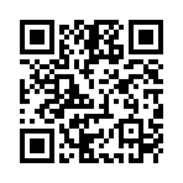
| Il QR Code è da scansionare con un app per la lettura dei QR Code e non con un wallet. |
Con questo bonus, che non vi costa nulla, mi incentivate a scrivere ulteriori contenuti o altri libri simili a questo, da distribuire sempre in formato completamente gratuito.
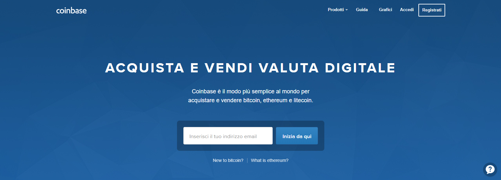
Screenshot tratto da https://www.coinbase.com/join/59bb877aa422190108e6263a
9.2. Binance
Binance.com è un exchange asiatico, a diffrenza di Coinbase tratta moltissime crittovalute, oltre 250, e ne vengono aggiunte di nuove in continuazione. A Febbraio 2018 risulta essere tra i maggiori exchange del mondo ed è in fortissima crescita. I prezzi sono in linea con il mercato e le commissioni sono buone. La verifica dei documenti richiede più tempo e l’interfaccia non è così intuitiva come per Coinbase. Può essere un po’ ostica per gli utenti alle prime armi.

Screenshot tratto da https://www.binance.com
9.3. Bitfinex
Bitfinex è uno dei maggiori exchange mondiali. Tratta molte crittovalute e offre un sistema di grafici per chi fa trading molto completo, con moltissimi strumenti di analisi. Ha delle commissioni molto basse, soprattutto per chi fa grandi volumi. L’interfaccia è un po’ più semplice di Binance, inoltre è disponibile una demo illustrata che spiega come completare gli acquisti. Anche in questo caso non semplicissima per chi è alle prime armi.
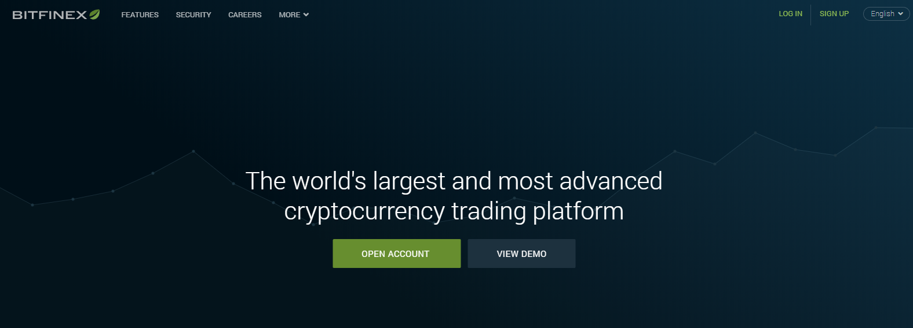
Screenshot tratto da https://www.bitfinex.com
9.4. Gdax
Gdax è la piattaforma di trading di Coinbase. Potete fare il login con le medesime credenziali, le monete presenti sono le stesse presenti su Coinbase.
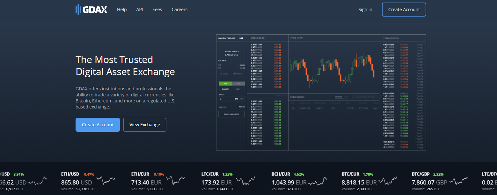
Screenshot tratto da https://www.gdax.com/
9.5. Altri Exchange
Qui trovate una lista degli exchange più utilizzati, ordinati per volume di scambi: https://coinmarketcap.com/exchanges/volume/24-hour/
9.6. Exchange decentralizzati
Si stanno diffondendo dei nuovi exchange che hanno la caratteristica di essere decentralizzati e quindi non censurabili. A differenza di quelli tradizionali, che sono dei normalissimi siti web, gli exchange decentralizzati sono ospitati su reti P2P. Un exchange decentralizzato è un mercato di scambio che NON si basa su un sito web classico, ma le negoziazioni avvengono direttamente tra gli utenti, attraverso un processo automatizzato. Questo sistema può essere ottenuto creando dei token proxy o attraverso un sistema di deposito in garanzia, decentrato e multi-firma. E’ un settore in forte sviluppo e garantirebbe agli utenti di scambiarsi in sicurezza le crittovalute anche in caso di divieti da parte delle autorità. Attualmente non esistono exchange decentralizzati che accettano versamenti in monete FIAT.
9.7. Il miglior exchange
Non esiste un migliore exchange in assoluto, vanno valutati diversi fattori come: la lingua dell’interfaccia (alcuni sono in coreano o giapponese ad esempio), la semplicità d’uso, le commissioni applicate, ma soprattutto le crittovalute trattate (BTC, LTC, BCH, IOTA, ecc.) e i mercati attivi per ogni singola moneta (ad esempio BTC può essere scambiato con dollari BTC/USD, euro BTC/EUR, Litecoin con BTC/LTC, ecc). Non tutti gli exchange trattano tutte le crittovalute e non tutti quelli che trattano una crittovaluta la scambiano con qualsiasi moneta. Ad esempio IOTA è, allo stato attuale, acquistabile su Bitfinex e su Binance. In entrambi gli exchange è possibile pagarla in BTC e ETH, in quanto esistono i mercati BTC/IOTA e ETH/IOTA, ma se desiderate pagarla in USD o EUR, potete farlo solo su BITFINEX, in quanto in mercati BTC/USD e BTC/EUR non esistono su Binance.
Prima di acquistare una crittovaluta quindi, occorre capire su quali exchange è scambiata e quali sono i mercati attivi. Per fare ciò il sistema più pratico è utilizzare il sito Coinmarketcap (https://www.coinmarketcap.com), cliccando sulla crittovaluta a cui si è interessati, e successivamente sulla voce Market. Qui trovate tutti gli exchange e i relativi cambi, prezzi e volumi (totale di scambi nelle ultime 24 ore). Nel prossimo capitolo verranno descritte in modo approfondito tutte le principali funzionalità di questo sito, che è uno dei punti di riferimento fondamentali per chi opera sul mercato delle crittovalute.
9.8. Procedura d’acquisto
Dopo aver identificato l’exchange sul quale effettuare l’acquisto, la procedura che segue è più o meno la stessa per tutti i siti: 1. registrazione sul sito e conferma dell’indirizzo email 2. invio documenti e approvazione (che può arrivare a distanza di giorni/settimane) 3. invio dei fondi in euro e attesa dell’accredito nel vostro conto online, sul sito dell’exchange degli euro 4. acquisto con gli euro delle crittovalute
A questo punto voi pensate di essere entrati in possesso delle crittovalute che avete pagato, ma non è esattamente così. Le crittovalute infatti non sono su una vostra chiave privata gestita dal vostro wallet, di cui possedete il pieno controllo, ma sono su un wallet software dell’exchange, dove è lui che detiene il controllo delle chiavi e quindi dei fondi. L’exchange si impegnerà ad inviarveli nel momento in cui voi glieli chiederete.
E’ la stessa cosa che accade quando depositate i vostri soldi in banca. I soldi non sono più vostri sono di proprietà della banca, che si obbliga a restituirveli nel caso ne facciate richiesta , a meno che sia un giorno lavorativo, che non ne chiediate troppi tutti assieme e sempre che siano disponibili, altrimenti dovete ripassare più tardi o il giorno seguente. Se la banca fallisce, i soldi non ve li potrà restituire. Per non creare instabilità nel sistema bancario, in accordo tra di loro, le banche italiane si sono impegnate a rimborsare tutti i possessori di conti correnti su cui erano depositati fino ad un massimo di 100.000 € nel caso in cui la loro banca fallisse. Va però sottolineato che questo rimborso sarà garantito solo fino a quando saranno disponibili dei soldi nel fondo di riserva appositamente creato dalle altre banche. In caso di fallimento di grandi banche con milioni di correntisti questi fondi non sarebbero sufficienti a rimborsare tutti i correntisti.
Per gli exchange è la stessa cosa, a parte la presenza del fondo di garanzia. Qui nessuno garantisce nulla, e, come già successo in passato, alcuni exchange possono fallire da un giorno all’altro senza lanciare alcun tipo di avviso o segnale. Possono essere vittime di attacchi hacker o furti di dipendenti infedeli o degli stessi amministratori. Tutti questi scenari portano ad un unico risultato, le vostre crittovalute spariranno.
Per disporre dei propri fondi in modo diretto e non accollarsi i rischi legati all’intermediazione dell’exchange, è buona norma, dopo aver acquistato le crittovalute trasferirle nell’apposito wallet, di cui voi e solo voi, disponete delle chiavi private. Ricorda, tu sei la tua banca.
9.9. Altri metodi per acquitare Bitcoin
Esistono molti altri modi per acquistare crittovalute. Il più banale è acquistarle da parenti, amici o colleghi che già sono in possesso di crittovalute. In questo caso, è sufficiente scaricare un wallet, creare la propria chiave privata, mostrare all’amico il QR Code, e farsi inviare la quantità di Bitcoin concordata.
Sparsi per la penisola stanno spuntando come funghi dei Bancomat, o “compro euro”; sono delle macchine automatiche o dei punti vendita presidiati da addetti, che, in cambio di un versamento in euro vendono Bitcoin. In questi casi è fondamentale documentarsi sui costi di transazione che vengono applicati, che possono in alcuni casi arrivare addirittura al 12%. Anche in questi casi, come per gli exchange vi verranno richiesti tutta una serie di documenti, ed i vostri dati saranno salvati dalla società che vi vende i Bitcoin.
Esistono siti che mettono in contatto direttamente acquirenti e venditori di crittovalute. Uno di questi è https://localbitcoins.com/it/ . Personalmente non l’ho mai usato, ma ne ho sentito parlare molto, soprattutto nelle chat italiane ed internazionali. Se siete interessati a questo tipo di servizio, vi consiglio di iniziare con piccole somme e di adottare sempre la massima prudenza, anche perché le truffe che hanno come oggetto Bitcoin si stanno moltiplicando e purtroppo i malintenzionati non mancano.
Un altro metodo semplice per ottenere Bitcoin è quello di farsi pagare in crittovalute dai propri clienti, come già fanno molti esercizi commerciali. Questo sia chiaro, non vi esime dall’emettere una regolare fattura o ricevuta fiscale. Per accettarli basta creare una nuova chiave privata e relativo address in cui far confluire tutti i pagamenti. Per praticità è consigliabile tenere distinte le chiavi private e gli indirizzi personali da quelli aziendali, soprattutto per una miglior gestione della rendicontazione contabile. Per maggiori dettagli, vi consiglio di chiedere al vostro consulente fiscale. Nei capitoli successivi verrà approfondito l’argomento con relativi riferimenti normativi.
10. Sicurezza e privacy
Abbiamo visto come mantenere i nostri Bitcoin su un Exchange voglia dire assumersi il rischio che questo intermediario fallisca o venga derubato. Questo è uno dei rischi più semplici da comprendere e valutare, e verso cui è possibile tutelarsi adottando una piccola e semplice accortezza e cioè non lasciando i fondi sugli Exchange. Abbiamo anche approfondito più volte nel libro come sia di fondamentale importanza la gestione delle chiavi private per mantenere al sicuro i vostri Bitcoin. Il mio consiglio personale è di fare sempre più copie delle vostre chiavi private e conservarle in posti sicuri differenti, tenendo bene a mente che chiunque entra in possesso di queste chiavi può accedere ai vostri Bitcoin.
10.1. Gestione delle chiavi
Una buona idea può essere quella di stampare su un semplicissimo foglio di carta la vostra chiave privata, magari senza scriverci a fianco che è la chiave privata del vostro conto in Bitcoin dove sono contenuti 100 Bitcoin. Averne di questi problemi!!!
Potrebbe essere saggio condividere con una persona fidata ad esempio il vostro partner, la prima metà della vostra chiave privata (le prime 6 parole), mentre condividere con altri, ad esempio i vostri genitori, la seconda parte (le successive 6 parole). In questo modo, anche in caso di una vostra eventuale prematura dipartita, queste persone possono entrare in possesso dei vostri Bitcoin per cederli ai vostri figli o a chi ne ha diritto. Se non lo fate perché siete scaramantici, meglio per noi, in quanto i vostri Bitcoin rimarranno bloccati sulla blockchain e creeranno ulteriore deflazione e quindi incrementando il valore di quelli in nostro possesso.
Esistono wallet in grado di gestire portafogli multifirma, che funzionano allo stesso modo dei conti correnti bancari con più firmatari. Sono possibili diverse configurazioni, ad esempio:
-
conto con due firme in cui per muovere i fondi sono necessarie entrambe le firme
-
conto con due firme in cui per spostare i fondi è necessaria una sola firma
-
conto con più firme in cui è possibile decidere quante firme, siano necessarie per spendere i Bitcoin, ad esempio è possibile creare un portafoglio 5 di 7, cioè un wallet in cui è possibile inserire 7 firme e dove per spostare i fondi ne sono necessari almeno 5.
È chiaro che si possono anche creare portafogli ad esempio da 7 di 7. Se nel malaugurato caso uno solo dei sette possessori di chiavi private perdesse la propria, i fondi rimarrebbero bloccati sulla blockchain per sempre creando ulteriore deflazione e accrescendo il valore dei nostri Bitcoin.
Per archiviare in modo sicuro le vostre chiavi, potete provare ad avventurarvi nel mondo della crittografia applicata, creando dei file contenenti le vostre chiavi private, e successivamente cifrandoli. Va da sé che queste operazioni devono essere eseguite con cognizione di causa e poi avrete sempre il problema di dover ricordare la vostra password per decrittare i file cifrato. Il grosso vantaggio è che potete conservare i file (meglio) se in più copie, ad esempio nel vostro cloud.
Come probabilmente avrete intuito, esiste un pericolo concreto di adottare delle misure troppo sicure per proteggere la vostra chiave privata che potrebbe addirittura impedire a voi stessi per un errore o una casualità, di accedere alle chiavi. Non sareste i primi.
10.2. Backup e diversificazione
Qualsiasi sistema decidiate di adottare per proteggere i vostri Bitcoin, è fondamentale che non sia unico. Create almeno un paio di copie di backup e conservatele in luoghi differenti. Ricordate che tutti i mezzi elettronici ad esempio computer, tablet, smartphone, chiavette USB, DVD, sono soggetti a rotture, deperimento, furti, ecc. Diversificate i portafogli, non mantenete tutti sotto un unico address, nella malaugurata ipotesi di perdere la chiave privata, non perderete tutto il vostro patrimonio in crittovalute. Una buona soluzione potrebbe essere quella di gestire un piccolo portafoglio con cifre da utilizzare per spese quotidiane, per avere una maggiore praticità potete permettervi di ridurre leggermente il livello paranoico di sicurezza, che invece dovrete adottare per i fondi ai quali accedete saltuariamente.
Personalmente ho deciso di diversificare al massimo il rischio utilizzando almeno quattro sistemi differenti tra cui carta, chiavetta USB, file cifrati e più depositi in più exchange (accettando il rischio che questi possano sparire da un giorno all’altro).
10.3. Autenticazione a 2 fattori
Un’altra pratica comune per garantire la sicurezza che nessuna persona non autorizzata acceda al vostro account su un exchange è l’adozione di un sistema di verifica in due fattori. Quasi tutti gli exchange la prevedono, in alcuni casi è addirittura obbligatoria. Se un exchange non implementa questo tipo funzionalità, forse è meglio tenersene alla larga e spostarsi altrove per fare acquisti.
Attivare l’autenticazione in due fattori è semplicissimo. Si scarica un’app apposita sul proprio smartphone, la più usata è Google Authenticator e si segue la procedura passo a passo indicata sul sito dell’exchange. Vi verrà chiesto di fotografare un QR Code con l’app di autenticazione, dopo averlo fatto, apparirà all’interno della vostra app il nome dell’exchange con sotto un codice di 6 numeri. Questo codice ha una durata temporanea di poche decine di secondi dopodiché viene bruciato e ne viene generato uno nuovo. È possibile che molti di voi adottino già questo sistema o di un sistema simile con i token fisici bancari. Quando effettuate il login all’exchange, vi verrà richiesto di inserire, oltre alle solite username e password, il codice generato da Google Authenticator.
| Eseguite un backup dei QR Code che vi vengono mostrati a video per attivare l’autenticazione a due fattori. Fatene un backup stampandoli su carta o creando dei PDF ed archiviateli in un posto sicuro. Questi QR Code serviranno per ripristinare i vostri codici di accesso a due fattori nel caso perdiate lo smartphone. Se non disponete di questi codici si prospettano lunghe ed estenuanti procedure di recupero account, invio di documenti, tempi di attesa per la verifica, ecc. Conservare questi backup in luogo sicuro altrimenti chiunque può attivarli sul proprio telefono e, entrando in possesso del vostro username e password, può accedere agli exchange e spendere i vostri Bitcoin. |
Un’altra buona norma, è la protezione del vostro account e-mail con l’autenticazione a due fattori, anche perché chi entra in possesso del vostro account email potrebbe attivare le procedure di recuro password ed accedere a tutti i vostri account online. Questa accortezza deve essere a mio avviso adottata anche da chi non intende acquistare crittovalute.
Verificate sempre che i siti degli exchange a cui vi collegate abbiano attivato l’HTTPS e il dominio da voi digitato sia corretto; per evitare di commettere errori di battitura è buona norma salvare i link nei preferiti. In passato, sono stati creati siti praticamente identici a quelli ufficiali, in cui acquistando pubblicità sui motori di ricerca venivano dirottati gli utenti per rubar loro le credenziali di accesso agli account.
Se qualcuno, per qualsiasi ragione, vi sta chiedendo la vostra chiave privata, probabilmente sta cercando di appropriarsi dei vostri soldi.
In linea di massima l’approccio da utilizzare in questo caso è di tipo PARANOICO. Partite sempre dal presupposto che qualcuno vi voglia truffare e fatevi convincere dell’opposto.
10.4. Privacy
Come abbiamo già indicato più volte nelle pagine precedenti, il protocollo Bitcoin ha come caratteristica progettuale la trasparenza, ogni transazione presente, passata e futura deve essere registrata nella blockchain perché venga ritenuta valida. Chiunque può quindi vedere e monitorare tutte le transazioni, da quale address sono partiti i Bitcoin e verso quale indirizzo sono stati inviati; diventa fondamentale quindi capire quanto questi address siano riconducibili ai singoli individui. Quando ci registriamo su un exchange ad esempio, dobbiamo fornire tutti i nostri documenti, il nostro numero di telefono e altra documentazione che serve appunto a verificare la nostra identità, come richiesto dalle norme bancarie internazionali. Gli exchange infatti sono una sorta di ponte che connette i circuiti bancari tradizionali e la rete Bitcoin. Quando ricevono valute FIAT dai loro clienti tramite bonifici o carte di credito, devono obbligatoriamente riceverli su dei conti correnti bancari tradizionali. Non possono quindi esimersi da tutto ciò che è la normale burocrazia richiesta per legge. Quando completerete un acquisto di crittovalute, l’exchange registrerà tale evento e lo collegherà alla chiave privata del vostro wallet online, da lui detenuta. Il wallet che vi fornisce l’exchange, può essere utilizzato per inviare le crittovalute acquistate ad un vostro address, o ad un address di un altro exchange. Tutti questi passaggi saranno quindi registrati nella blockchain, chiunque potrà visualizzarli e seguire il flusso di denaro, da un wallet all’altro. Solo l’exchange e le autorità (chiedendo i vostri dati all’exchange), potranno però ricollegare la vostra identità al flusso di transazioni.
Ogni volta che eseguiamo un pagamento, riveliamo al ricevente il nostro indirizzo mettendolo quindi in condizione di percorrere a ritroso tutte le transazioni in ingresso ed in uscita che hanno avuto a che fare con l’address che abbiamo usato per effettuare il pagamento, fino a risalire al nostro wallet sull’exchange dove abbiamo tutti i nostri Bitcoin. Viceversa, anche noi possiamo fare altrettanto nei suoi confronti.
Per ovviare a questo problema, possiamo creare nuovi address, paradossalmente anche un nuovo address per ogni transazione. In questo modo ripercorrere a ritroso le transazioni sarà più complesso, anche se non impossibile. Un’altra buona norma, potrebbe essere quella di non usare gli address dei wallet sui quali abbiamo i nostri investimenti, per pagare una pizza. Creare più chiavi private, e quindi più address non costa nulla, i wallet deterministici, permettono di avere un numero elevatissimo di chiavi pubbliche e private tutte sotto un unico seed (il famoso elenco di 12 parole). Acquistando Bitcoin in modi differenti, ad esempio usando exchange diversi, o comprando piccole somme da amici, si mescolano ulteriormente le carte, e rendono un tracciamento delle nostre movimentazioni ancor più difficile e complesso.
Vediamo due esempi concreti.
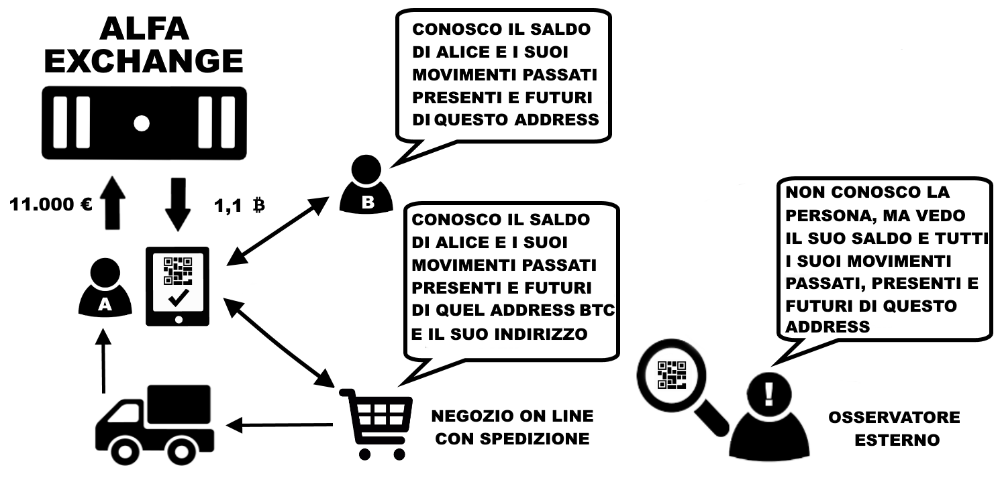
Alice acquista 11.000 € in Bitcoin su un unico exchange, 10.000 come investimento, e 1.000 per le spese correnti. Utilizza sempre lo stesso address, per tutte le transazioni. Tutti quelli che ricevono o inviano Bitcoin ad Alice, possono vedere il suo estratto conto e potranno continuare a seguirlo per sempre. Se ad esempio Alice si fa spedire della merce a casa dopo aver effettuato un acquisto online, il venditore potrà collegare tutti i dati anagrafici di Alice, con tutti i suoi dati finanziari, ad esempio quanti Bitcoin ha in un determinato momento, quanti ne ha acquistati e quando, quando riceverà dei pagamenti ecc. A quel punto potrà usare questa mole enorme di informazioni, ad esempio, per inviare della pubblicità quando Alice ha più disponibilità economica.
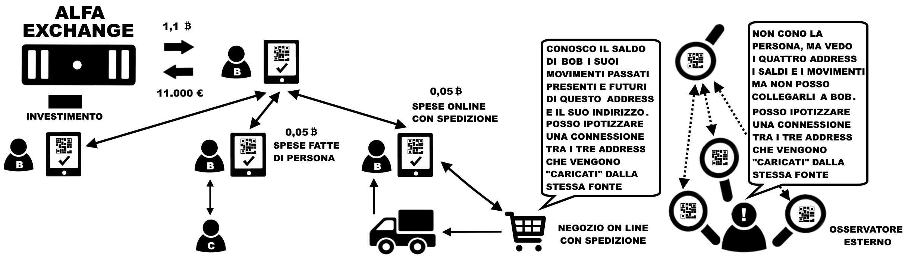
Bob ha diviso il suo indirizzo dove detiene i Bitcoin come investimento, da quello che utilizza per pagare spese correnti. Addirittura ha creato un indirizzo apposito da utilizzare per gli acquisti che prevedono l’invio di prodotti a casa da un determinato negozio online, in modo da isolare queste transazioni da tutte le altre. Questi tre address ricevono transazioni in ingresso provendienti sempre dallo stesso indirizzo. Il collegamento tra i 4 address, quello da cui partono i fondi e i tre che li ricevono, non è un dato certo, ma più operazioni si ripetono seguendo questo schema, più un osservatore esterno, può presumere che Bob abbia il controllo anche di questi altri indirizzi.
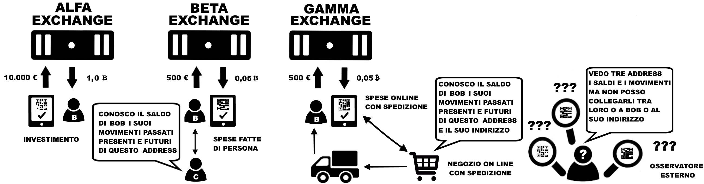
Bob, per mantenere un maggiore grado di anonimato e ridurre la tracciabilità dei suoi movimenti, decide quindi di evitare accuratamente di eseguire transazioni tra gli address in suo possesso in modo da rendere impossibile per un malintenzionato, tracciare tutte le sue operazioni in Bitcoin. Sicuramente tutte le persone che inviano e ricevono transazioni da e verso Bob, potranno attribuire a lui un address, e avere una visione parziale delle sue operazioni, ma non avranno la possibilità di avere un quadro completo della sua situazione finanziaria.
10.5. I mixer
Esistono alcuni servizi che permettono di ottenere un maggiore privacy, interponendosi tra noi e il destinatario dei fondi, ovviamente dietro un compenso che può arrivare anche a diversi punti percentuale. Documentatevi in modo accurato prima di utilizzare questi servizi, soprattutto perché tutto ruota attorno ad un rapporto di fiducia nel servizio di mixing. Voi infatti, dovete inviare i vostri Bitcoin al mixer, che a sua volta si impegna ad effettuare il pagamento trattenendosi la commissione concordata. Non c’è alcuna garanzia che questo intermediario rispetti gli accordi. Un ipotetico truffatore potrebbe pubblicizzare un’attività di mixing, ricevere i versamenti degli utilizzatori, e non effettuare mai i pagamenti.
10.6. Indirizzi IP
Un altro aspetto da tenere in considerazione è l’identificazione dell’utente tramite indirizzo IP. Ogni operazione che eseguiamo online è collegata ad un indirizzo IP, una sorta di targa, che identifica la nostra connessione ad internet, e contrassegna ogni nostra operazione compiuta online.
| Puoi verificare il tuo indirizzo IP qui: http://www.mio-ip.it |
Nella stragrande maggioranza delle ADSL domestiche e nelle connessioni ad internet tramite smartphone questo IP viene modificato periodicamente (IP dinamico), rendendo difficile un tracciamento. In altri casi, si ha un IP fisso, cioè un indirizzo che non cambia mai, ad esempio nelle connettività aziendali. Le autorità possono, su mandato di un giudice, chiedere agli operatori di telefonia, a chi era associato un determinato IP in una determinata data e ora, ottenendo in risposta l’anagrafica dell’intestatario della linea telefonica. Questi dati devono essere conservati dai provider per 12 mesi. Esistono tuttavia una serie di strumenti che permettono di incrementare il livello di privacy delle nostre attività online, rendendo molto più complessa qualunque operazione di tracciamento. Il sistema certamente più diffuso è TOR https://www.torproject.org/
| Sconsiglio sempre di svolgere qualsiasi attività illegale, in prima battuta perchè appunto è illegale e infrangendo la legge potreste andare incontro a spiacevoli conseguenze, in secondo luogo perchè online, come abbiamo visto, ogni nostra operazione è registrata e conservata per mesi, in alcuni casi anni. |
Quando eseguiamo un pagamento in Bitcoin la nostra transazione viaggia tra il nostro dispositivo e un nodo della rete Bitcoin, che per forza di cose, può vedere il nostro indirizzo IP ed archiviare questa informazione, magari poi, collegandola ad altre informazioni in suo possesso o provenienti da altre fonti.
Non voglio mettervi in allarme, ma rendervi consapevoli di come le vostre attività online possano essere registrate e tracciate. Personalmente ritengo che non ci siano grandi pericoli per la privacy degli utilizzatori delle crittovalute, a patto di adottare le adeguate contromisure, ad esempio utilizzare connessioni con indirizzo IP dinamico, cambiare spesso address ed usare portafogli diversi per gli investimenti e per le spese correnti.
Permettere a chiunque di ricollegare la vostra identità ai vostri Bitcoin, potrebbe esporvi a rischi personali, soprattutto se la quantità in vostro possesso fosse considerevole. Se qualche malintenzionato venisse a conoscenza che sul vostro address fossero presenti una decina di Bitcoin, potrebbero esserci dei risvolti poco piacevoli. Sbandierare di possedere 10 Bitcoin, potrebbe non essere quindi una buona idea, soprattuto vista l’alta portabilità di questo tipo di valuta, possiamo equipararla all’oro o ai contanti. Nessuno va in giro a dire che a casa ha un kilo d’oro o una 24 ore piena di contanti. L’aspetto della privacy e della sicurezza sono quindi molto legati tra loro, più di quanto si possa immaginare.
Come abbiamo già indicato nei capitoli precedenti, esistono moltissime altre crittovalute, alcune di queste adottano delle tecnologie che garantiscono maggior privacy per gli utilizzatori. Tra queste le più blasonate sono certamente Monero e ZCash.
11. Aspetti legali e fiscali
| Non sono un legale né un commercialista, tutto ciò che è espresso in questo capitolo va preso con beneficio di inventario. Per maggiori informazioni consultate il vostro professionista di fiducia prima di effettuare qualsiasi tipo di operazione. Non esiste alcuna legge che regolamenta esplicitamente questo mercato, per cui siamo nell’ambito dell’interpretazione. |
11.1. Status legale
Ad oggi solo il Giappone ha emanato una legge per regolamentare le crittovalute ed accettarle a tutti gli effetti come mezzo di pagamento. Altri stati come Algeria, Marocco, Nepal, Bolivia, Ecuador, Vietnam, Cambogia hanno emanato leggi per vietarne espressamente l’uso, in altri paesi sono presenti vecchie leggi che ne impediscono l’uso o sono comunque state prese delle posizioni ostili nei confronti delle crittovalute. Negli altri paesi il Bitcoin non è ancora stato regolamentato, di conseguenza è da considerarsi legale, quanto meno nelle legislazioni in cui è sancito il principio di legalità, ovvero dove è concesso tutto ciò che non è espressamente vietato da apposite leggi. Per maggiori informazioni sui singoli paesi, potete consultare la tabella sotto la mappa, su Wikipedia in questa pagina: https://en.wikipedia.org/wiki/Legality_of_bitcoin_by_country_or_territory
Nella stragrande maggioranza dei paesi occidentali l’utilizzo delle crittovalute non è normato. In particolare in Europa sono state emanate delle direttive per quanto riguarda il regime IVA da applicare alle crittovalute. In Italia l’Agenzia delle Entrate ha risposto a diversi interpelli promossi da cittadini ed aziende.
Non esiste ancora una chiara presa di posizione neppure sul fatto se siano da considerare o meno delle monete. Ad esempio la Direttiva Europea in materia di IVA le considera “mezzi semplici di pagamento”, l’Agenzia delle Entrate italiana le paragona a valute estere, la BCE pare di essere di parere opposto in quanto il Bitcoin non è emesso da uno stato sovrano. Proprio questa caratteristica rende le criptovalute monete private, anche se di fatto non sono emesse da alcun soggetto privato.
Fino a quando i singoli parlamenti nazionali o sovranazionali, come nel nostro caso quello europeo, non emaneranno delle leggi a riguardo, permarrà un velo di incertezza su tutto questo mondo. Tecnicamente nessuno stato sarà in grado di bloccare Bitcoin, potranno renderlo illegale, come lo è la diffusione online di musica, video o libri coperti da copyright, ma non potranno mai spegnere la rete Bitcoin: fino a quando esisteranno due computer connessi tra loro che ospiteranno la blockchain, il Bitcoin sopravviverà.
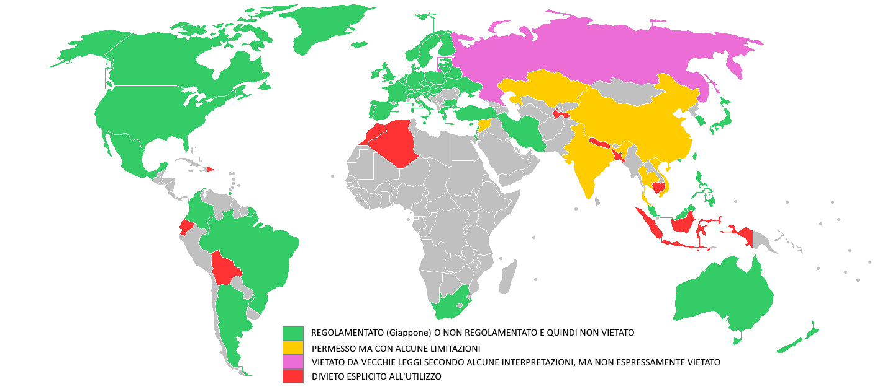 Tratta da Wikimedia, ma aggiornata con le ultime novità presenti alla pagina: https://en.wikipedia.org/wiki/Legality_of_bitcoin_by_country_or_territory
Avere un quadro globale preciso ed aggiornato non è semplice, alcuni paesi hanno preso posizioni contrarie per poi ricredersi e fare un passo indietro, come l’Islanda, altri ufficialmente non hanno emanato alcuna legge diretta per vietarne l’uso, ma i loro politici si sono espressi negativamente. In altri casi si sono registrate reazioni di senso opposto tra istituzioni del medesimo stato.
| Nei successivi paragrafi si farà abuso del condizionale. Tutte le informazioni qui riportate devono essere oggetto di verifica con un vostro consulente fiscale, prima di prendere decisioni affrettate. |
In assenza di una legislazioni specifica c’è grandissima incertezza soprattutto in ambito fiscale. Dopo aver letto molti articoli e risorse disponibili on-line, non sono riuscito a farmi un’idea chiara e univoca, quello che posso fare è riassumere tutto il materiale che ho raccolto in questi mesi, e metterlo a vostra disposizione. Vi consiglio di condividerlo con il vostro consulente fiscale e farvi dare da lui in parere specifico per la vostra situazione.
11.2. Corte di giustizia dell’Unione europea
Con la sentenza del 22/10/2015 la corte di Giustizia Europea ha preso una posizione netta sulle crittovalute sentenziando che il Bitcoin, essendo un mezzo di pagamento semplice e non potendo essere utilizzato, se non quale mezzo di pagamento, a fini IVA, per il principio di neutralità, deve seguire l’esenzione IVA prevista per le monete a corso legale. Trovate maggiori informazioni qui: http://curia.europa.eu/juris/liste.jsf?num=C-264/14 http://www.dirittoegiustizia.it/allegati/17/0000071427/Corte_di_Giustizia_UE_Quinta_Sezione_sentenza_22_ottobre_2015_causa_C_264_14.html
11.3. Banca Centrale Europea
La BCE non ha potere di regolamentazione sulle crittovalute, Draghi stesso si è già espresso in tal senso, passando di fatto la palla alle istituzioni europee che dovrebbero esprimersi a riguardo. La BCE si è però espressa dicendo che il Bitcoin non è una valuta e non può esserlo.
11.4. Agenzia delle entrate italiana
L’Agenzia delle Entrate italiana, ha già risposto a numerosi interpelli a tema Bitcoin e crittovalute. Una delle più citate e commentate online è la risoluzione n. 72 del 2016, disponibile qui: https://www.finaria.it/pdf/bitcoin-tasse-agenzia-entrate.pdf In questa risoluzione l’Agenzia, tra le altre cose, equipara il Bitcoin ad una moneta estera.
| La risoluzione dell’Agenzia delle Entrate è una risposta ad un interpello, cioè una richiesta di informazioni su un quesito specifico da parte di un contribuente. A tale richiesta di chiarimenti, l’Agenzia delle Entrate risponde con delle indicazioni che hanno valore esclusivamente per chi pone il quesito. Le risoluzioni e le circolari dell’Agenzia delle Entrate NON sono fonti di diritto ( https://www.fiscoetasse.com/approfondimenti/11861-circolari-e-risoluzioni-non-sono-fonti-del-diritto.html ). Nonostante ciò, queste sono le uniche informazioni a cui appigliarsi per cercare di orientarsi in mancanza di leggi e regolamenti chiari in materia. Potrebbe essere una buona idea fare un interpello all’Agenzia delle Entrate, per avere dei chiarimenti precisi sulla vostra posizione. |
Come vedete le varie istituzioni coinvolte, hanno espresso pareri anche discordanti tra loro.
A mio avviso gli aspetti legali e fiscali da tenere in considerazione quando effettuate acquisti in crittovalute sono quattro:
-
la tassazione del capital gain (guadagni sulle compravendite) e sul mining
-
la dichiarazione degli investimenti all’estero, quadro RW
-
normativa anti-riciclaggio
-
incassare pagamenti in crittovalute
11.5. Capital gain per le persone fisiche
Interpretando il contenuto della risoluzione n. 72 del 2016 emanata dall’Agenzia delle Entrate si potrebbe desumere che le crittovalute debbano essere equiparate a valute estere, quindi il capital gain sulle persone fisiche dovrebbe essere applicato esclusivamente nel caso in cui un privato cittadino, fosse in possesso dell’equivalente in crittovalute di oltre 51.645,69 € per almeno sette giorni consecutivi, ai sensi dell’art. 67 del DPR del 22/12/1986 n° 917 (TUIR). In caso di superamento di questa cifra, l’attività di detenzione di crittovalute verrebbe considerata come attività di tipo speculativo e prevederebbe una tassazione del 26% sugli utili, va inoltre specificato che tale caratteristica si riferisce esclusivamente a operazioni “a pronti” (i classici acquisti e vendite), e non quindi ad operazioni “pronti contro termine” in cui c’è un chiaro intento speculativo.
Trovate un intervento molto dettagliato del dottor Stefano Capaccioli qui: https://www.youtube.com/watch?v=odkZs2szBpY&t
Trovate altri 3 video brevi sul canale del dottor Luca Ferrini qui: https://www.youtube.com/watch?v=8E_pSd-eguU https://www.youtube.com/watch?v=ZDUzy60zf6k https://www.youtube.com/watch?v=kSc1O1BXOSQ
11.6. Capital gain per le persone giuridiche
La risoluzione n. 72 del 2016 emanata dall’Agenzia delle Entrate, indica che la cessione delle crittovalute genera reddito d’impresa e di conseguenza tale reddito deve essere dichiarato e tassato, come stabilito dal Testo Unico delle Imposte sui Redditi (TUIR) art. 9 del DPR del 22/12/1986 n° 917.
11.7. Mining e fisco
L’attività di mining descritta tecnicamente nelle pagine precedenti, dal punto di vista fiscale, è equiparabile in tutto e per tutto ad un’attività d’impresa, infatti il miner compie a tutti gli effetti un lavoro e per tale viene retribuito. Tecnicamente viene pagato in parte con le commissioni relative alle transazioni che ha aggregato nel blocco, in parte crea valore dal nulla ottenendo la ricompensa prevista dal protocollo. In ogni caso la sua situazione agli occhi del fisco italiano pare abbastanza chiara, si tratta di un’attività economica e come tale va trattata.
Per quanto riguarda il mining come attività di impresa, il dottor Luca Ferrini ha fatto un video che chiarisce la questione qui: https://www.youtube.com/watch?v=R0RbhEWy_KA
Trovate un approfondimento sul mininig eseguito al di fuori dell’attività d’impresa, a cura del dottor Stefano Capaccioli qui: https://coinlexit.wordpress.com/2017/07/13/alcune-riflessioni-sui-redditi-da-mining-da-parte-di-persone-fisiche/
11.8. Investimenti all’estero
Secondo la legge italiana ai sensi dell’art. 4, D.L. n. 167/1990 poi rivisto con la legge n° 186 del 15 dicembre 2014 http://www.normattiva.it/uri-res/N2Ls?urn:nir:stato:legge:2014-12-15;186 ogni investimento all’estero deve essere dichiarato nel quadro RW della dichiarazione dei redditi. Diventa cruciale quindi, chiarire cosa si intende per investimento all’estero, se ad esempio, l’acquisto di Bitcoin sia un investimento o sia un semplice acquisto di moneta estera. Inoltre va definito il concetto di estero, perché di fatto è difficile definire dove si trovino fisicamente, tecnicamente sono salvate sulla rete P2P che per definizione è da considerarsi distribuita globalmente. Se invio del denaro in valute FIAT su un exchange all’estero, compro dei Bitcoin e li trasferisco nel mio wallet, dove sono i Bitcoin? Tecnicamente sono nella blockchain come abbiamo visto nei capitoli precedenti. Nei wallet invece, sono presenti esclusivamente le chiavi private, che potrebbero essere equiparate ai codici di accesso ad un conto corrente o ad un PIN di un bancomat. Capite che il concetto di dove si trovino le crittovalute non è affatto scontato.
E’ presente un approfondimento del dottor Stefano Capaccioli nel video già linkato sopra, che riporto per comodità: https://www.youtube.com/watch?v=odkZs2szBpY&t
Trovate maggiori informazioni qui: http://www.loconteandpartners.it/it/news/pubblicazioni-quotidiani/gli-obblighi-di-dichiarazione-nel-quadro-rw
11.9. Riciclaggio
Dopo ogni trasferimento di monete FIAT o acquisto di crittovalute, vi consiglio di stampare e conservare copia delle ricevute che vengono rilasciate dalla vostra banca e dagli exchange. Tutte le transazioni in crittovalute tra l’exchange ed il vostro wallet, come abbiamo visto, vengono registrate nella blockchain. Tramite qualsiasi explorer, potete quindi visualizzare e stampare questi movimenti. Il mio consiglio è di eseguire sempre operazioni tracciate e tracciabili. Di fronte ad un’eventuale contestazione, quantomeno, avrete del materiale per dimostrare le varie movimentazioni e giustificare eventuali bonifici in rientro sul vostro conto. Se viceversa acquistate crittovalute in contanti, le vendete ad un exchange in cambio di Euro, e successivamente ve li bonificate sul vostro conto corrente, di fronte ad una contestazione delle autorità, difficilmente sarete in grado di giustificare la provenienza dei fondi per tali acquisti. Anche in questo caso, meglio consultare un consulente in anticipo, onde evitare di incorrere in spiacevoli conseguenze.
Trovate maggiori dettagli qui: http://www.mysolution.it/fisco/approfondimenti/commenti/2017/06/commento-30-giugno-2017-n.-1220/
11.10. Accettare pagamenti in crittovalute
Se avete un’attività commerciale, potete accettare pagamenti in qualsiasi valuta: euro, dollaro o bitcoin, in qualunque caso dovete emettere la relativa ricevuta fiscale. In particolare è obbligatorio indicare sulla ricevuta fiscale l’importo in euro dell’IVA. In pratica le varie attività commerciali che attualmente accettano bitcoin o altre crittovalute come mezzo di pagamento, emettono un regolare scontrino in euro e si fanno pagare tramite wallet l’equivalente in crittovaluta. Utilizzando sempre il medesimo address, possono, tramite un explorer, visualizzare e stampare tutte le transazioni avvenute sul proprio indirizzo e consegnarle al commercialista. I consulenti più all’avanguardia, possono, tramite l’indirizzo del wallet del proprio cliente, accedere direttamente tramite explorer a tutte le transazioni effettuate sul “conto” del proprio assistito, in completa autonomia. In alcuni casi esistono società che offrono un servizio di conversione automatica in euro, che quindi risolvono il problema a monte, a scapito di un costo di commissione.
11.11. Conclusioni
Come abbiamo visto la situazione è poco chiara e si può prestare a varie interpretazioni. Il mio consiglio è quello di farvi seguire da un professionista serio, che possa fare un’analisi precisa della vostra situazione finanziaria, e che vi sappia consigliare per il meglio. Ci saranno consulenti che nel dubbio vi suggeriranno di dichiarare tutto e pagare il 26% di capital gain anche se ad oggi sembrerebbe non dovuto, altri che vi diranno di non dichiarare nulla, in quanto in base alla loro esperienza ed interpretazione non dovete farlo. Tutto dipende molto a mio avviso, anche dalle cifre in questione e dalla vostra propensione al rischio. Sembra paradossale ma purtroppo è così.
| Come già ampiamente premesso, tutte le informazioni qui riportate, sono da intendersi come spunti di riflessione e discussione, NON come pareri professionali. Non sono né un avvocato né un commercialista. Consultate il vostro consulente di fiducia prima di effettuare qualsiasi tipo di operazione. |
12. Oltre al Bitcoin c’è di più
In questo libro abbiamo descritto in modo dettagliato il funzionamento Bitcoin. A fine febbraio 2018 su Coinmarketcap (https://www.coinmarketcap.com) sono presenti oltre 1500 tra Coin e token, ognuna di esse con le proprie caratteristiche molto diverse tra di loro.
| Coinmarketcap è il sito di riferimento per monitorare l’andamento del mercato delle criptovalute. |
12.1. Differenza tra coin e token
Per Coin si intende una criptovaluta indipendente, che ha una propria rete peer-to-peer indipendente, realizzata con un software ad hoc, con caratteristiche ben precise che possono comunque essere molto simili a quelle di Bitcoin, come nel caso di Bitcoin Cash in cui il blocco è di 8 MB anzichè 1 MB, oppure completamente diverse come nel caso di IOTA in cui non c’è nuova emissione di moneta (inflazione 0%), non sono previste fee per le transazioni e non esiste la figura dei miner.
I token sono crittovalute che si appoggiano ad altre coin e ne sfruttano l’infrastruttura. Un esempio di token, sono i punti spesa del supermercato, che se utilizzati ti permettono di ottenere sconti o regali, proprio come i punti di un supermercato non vengono accettati da quelli della concorrenza, i token hanno un valore solo fino a quando chi li ha emessi continua a elargire il servizio per il quale sono stati creati. Un altro esempio che i ragazzi nati negli anni 90 non hanno più conosciuto, sono i gettoni del telefono. Questi erano delle vere e proprie monete fisiche e negli anni 80 valevano 200 lire. Erano talmente diffuse che venivano accettate tranquillamente anche tra amici o nei negozi (per approfondire https://it.wikipedia.org/wiki/Gettone_telefonico ). Questi hanno avuto un valore fino a quando esistevano telefoni in grado di accettarli. Vennero poi rimpiazzati da telefoni che accettavano le classiche monete e successivamente dalle schede telefoniche prepagate. Per tornare in tema crittovalute, nella stragrande maggioranza dei casi parliamo di token che si appoggiano sulla piattaforma Ethereum, che proprio grazie alla loro proliferazione ha visto crescere a dismisura il proprio valore.
12.2. Lo standard ERC20
Ethereum Request for Comments, meglio conosciuto come ERC20 è uno standard adottato dai token generati tramite gli smart contracts di Ethereum. Lo standard definisce una lista di regole comuni che un token deve possedere. Questo standard è quindi stato adottato anche dagli sviluppatori di wallet, riuscendo così a gestire tutti i token che adottano questo standard senza dover sviluppare un apposito wallet per ogni token. Trovate maggiori informazioni sull’ERC20 qui https://theethereum.wiki/w/index.php/ERC20_Token_Standard (in inglese)
12.3. Coinmarketcap
Su Coinmarketcap.com potete trovare elencate oltre 1500 criptovalute. Per ognuna di esse sono riportate già in home page una serie di informazioni utili che andremo a descrivere.
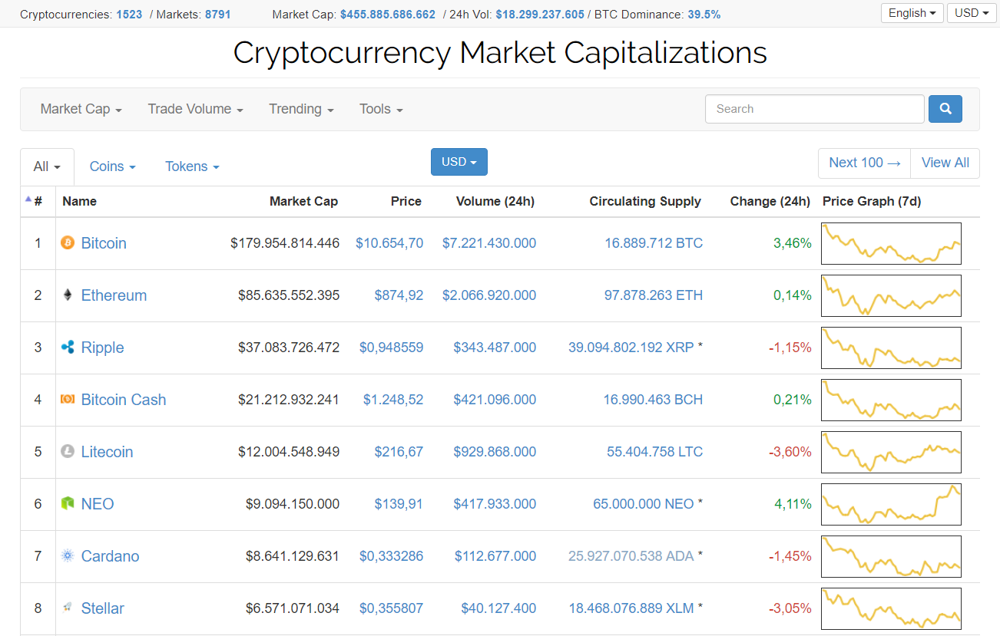
Screenshot della homepage di https://www.coinmarketcap.com
La prima colonna indica la posizione in classifica in inglese rank, per marketcap( che analizzeremo tra poco).
Il logo, nome e sigla sono ovviamente fondamentali per capire di che moneta stiamo parlando. Attenzione alla sigla, non tutti i siti adottano la stessa sigla o unità di misura.
Il marketcap ovvero capitalizzazione di mercato è il risultato tra la moltiplicazione del prezzo per la quantità di moneta in circolazione. È uno dei parametri fondamentali per la valutazione di una moneta E sostanzialmente descrive l’apprezzamento di questa da parte del mercato.
Il prezzo e la media tra i prezzi praticati sui vari Exchange. Un errore comune è valutare l’apprezzamento di una Coin in base al prezzo. Il parametro fondamentale da tenere in considerazione è la Market CAP. Vale di più un biglietto da €100 o 100 monete da €1? La risposta è che ovviamente valgono uguale. Il prezzo va quindi utilizzato solo come riferimento e metodo di conversione, non come parametro per valutare quanto una moneta è apprezzato dal mercato. A parità di market.cap due monete possono avere prezzi molto diversi tra loro se hanno diversa quantità di monete circolanti.
Il volume indica la quantità di scambi intercorsa solitamente nelle ultime 24 ore. Se due persone si scambiano 10 volte un euro, il volume sarà di €10. Questo parametro serve appunto per valutare quante compravendite sono avvenute nelle ultime 24 ore su una moneta.
Il circulating supply indica la quantità di monete commercializzabili. A fine febbraio 2017 sono stati generati circa 17.000.000 di bitcoin. Questo è un parametro fondamentale per calcolare il market CAP. Dopo il valore numerico è indicata l’unità di misura. Come abbiamo visto un Bitcoin è composto da 100 milioni di Satoshi. Coinmarketcap utilizza BTC come unità di misura, ma nulla vieta da altro sito di utilizzare ad esempio i Satoshi. Accanto alla Market CAP può essere presente un * questo indica che la moneta non è inabile cioè la quantità di pezzi è predeterminata e non può crescere nel tempo in alcun modo si utilizza spesso anche il termine premi nata.
La variazione % del prezzo nelle ultime 24 ore indica semplicemente quanto il prezzo è cambiato rispetto al giorno precedente. Questo parametro può trarre in inganno; infatti se il giorno prima c’è stato un forte incremento del prezzo, ad esempio +14%, e nelle gli ultimi 5 minuti il prezzo è calato anche di molto, ad esempio -12%, il parametro sulle 24 ore apparirà positivo, nonostante si siano registrate una serie di forti vendite.
Il grafico dei 7 giorni fornisce semplicemente in modo visuale, l’indicazione di come il prezzo si sia mosso negli ultimi sette giorni.
Ognuno di questi campi a parte il grafico, può essere ordinato in modo crescente o decrescente per semplificare la ricerca o il confronto tra le monete.
Cliccando su ognuna di esse accedete ad una scheda per ognuna di esse con ulteriori e importanti informazioni aggiuntive.
Oltre ad una serie di link verso siti Internet del progetto, explorer per navigare tra le transazioni, forum e codici sorgenti, sulla destra troviamo un’altra informazione fondamentale non presente in homepage e cioè il Max supply. Il Max supply indica la quantità di monete che verranno emesse, per Bitcoin questa cifra come abbiamo visto equivale a 21 milioni.
Scendente della pagina troviamo il grafico del prezzo, bella Market CAP, con sotto l’indicazione dei volumi in istogrammi.
Sono presenti inoltre una serie di altre schede, contatti interessanti. Quella fondamentale da conoscere è la seconda ovvero Markets.
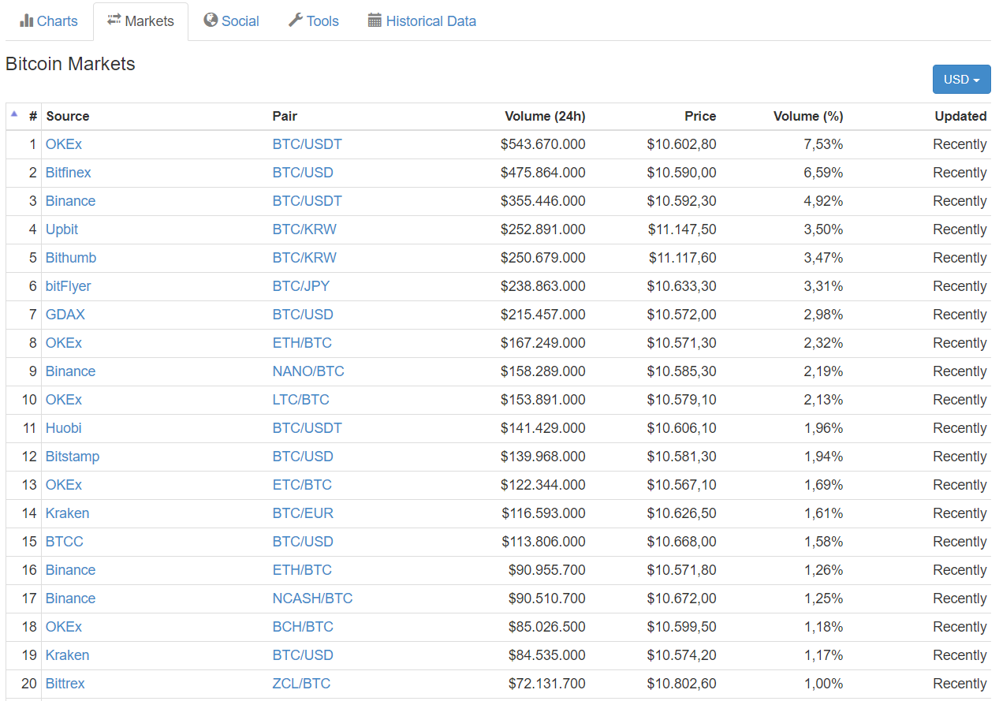
Screenshot della sezione Markets di Bitcoin tratto da: https://www.coinmarketcap.com
Qui infatti troviamo elencati tutti i mercati presenti sui vari Exchange monitorati dalla piattaforma, ordinati per volume delle ultime 24 ore. Per ogni mercato sono indicati volume, prezzo e percentuale di volume sul volume totale di scambi della singola moneta. Sarà quindi possibile vedere quali sono gli Exchange su cui una moneta viene venduta e il suo prezzo. Normalmente i prezzi sono abbastanza allineati; è possibile però trovare dei mercati con un prezzo anche molto differente. Capita spesso ad esempio con il mercati coreani BTC/KRW, dove il prezzo è mediamente più caro rispetto al mercato BTC/USD. Questo può dipendere da una serie di fattori legati alla moneta con cui vengono scambiati i BTC. Forti politiche restrittive di queste monete, che ad esempio ne impediscono il trasporto all’esterno del paese, o permettono solo ai cittadini residenti di aprire conto correnti in valuta locale, creano di fatto un mercato interno, che rimane disallineato con tutti i mercati internazionali. Per la legge della domanda e dell’offerta, i coreani del sud, nella maggioranza dei casi sono disposti a spendere di più dell’equivalente in dollari, per acquistare un BTC, o parti di esso.
Un altro parametro fondamentale da tenere in considerazione è il volume di scambio di ogni singolo mercato. Mercati su cui ogni giorno sono scambiati i milioni e milioni di dollari, garantiscono maggior sicurezza di vedere i propri ordini confermati anche in caso di forti sbalzi di prezzo, viceversa mercati con piccoli volumi di scambio potrebbero non avere domanda o offerta sufficiente per chiudere i vostri ordini. Ricordiamo infatti che questi Exchange mettono in contatto venditori e compratori. Se il mercato fa piccoli volumi potrebbero paradossalmente non essere presenti compratori per le criptovalute che state cercando di vendere, e vi potreste quindi trovare nella situazione di non riuscire a venderle. Su mercati con grandi volumi di 100.000.000 nelle ultime 24 ore, anche la vendita di un milione di dollari in Bitcoin può essere assorbita senza alcun tipo di problema, pesando infatti solo 1% sui volumi giornalieri.
12.4. Andamento globale dell’intero mercato delle crittovalute
Nella parte alta dell’home page, sopra al logo, sono presenti diverse indicazioni interessanti, utili per valutare l’andamento totale del mercato. Partendo da sinistra troviamo la quantità di criptovalute attualmente presenti su coinmarketcap.com. successivamente troviamo il numero di mercati ovvero possibilità di scambio. Ogni moneta può essere infatti scambiata con molte altre monete. Ad esempio Bitcoin può essere scambiata per dollari, euro, oppure per altre criptovalute. Avremo quindi una sola Coin che è però disponibile su moltissimi mercati.
Seguono il marketcap totale, cioè la somma di tutti i marketcap di ogni singola moneta elencata sul sito, il volume totale delle ultime 24 ore e la dominance di Bitcoin, ovvero quanto la capitalizzazione di Bitcoin incide sulla totalità del mercato. Cliccando su ognuno di questi parametri potete accedere ad una pagina con una serie di grafici ed informazioni dettagliate.
12.5. Principali crittovalute
Andiamo quindi a descrivere brevemente le principali criptovalute commercializzate sul mercato, ogni crittovaluta è riporta con nome seguito dalla sigla adottata su coinmarketcap.com .
12.5.1. Bitcoin (BTC)
Di Bitcoin abbiamo ampiamente parlato, quindi non ci dilungheremo oltre; da esso sono derivate diverse monete nate dal fork di Bitcoin. Un fork è una biforcazione del codice sorgente e in certi casi anche della blockchain, questo significa che fino ad una certa data, c’era solo una moneta, successivamente il codice sorgente del progetto è stato copiato e replicato, facendo di fatto nascere una nuova moneta completamente indipendente dalla prima. Le principali monete nate da un fork di bitcoin sono: Litecoin, Bitcoin Cash, Bitcoin Gold.
12.5.2. Litecoin (LTC)
Litecoin utilizza una differente funzione di hash (Scrypt) non minabile con Hardware asic, la generazione di blocchi ogni due minuti e mezzo con una dimensione massima per blocco di un megabyte. Queste scelte strutturali permettono di ottenere conferme in modo molto più rapido, e commissioni molto più basse.
12.5.3. Bitcoin Cash (BCH)
Bitcoin Cash si differenzia da Bitcoin sostanzialmente per aver ingrandito le dimensione del blocco 8 megabyte, riuscendo quindi anche in questo caso ad ottenere commissioni più basse pur mantenendo i tempi di conferma di Bitcoin. La funzione di hash utilizzata è SHA256, la medesima di Bitcoin, i miner quindi possono decidere, in base alla profittabilità del momento, di minare Bitcoin oppure Bitcoin Cash.
12.5.4. Bitcoin Gold (BTG)
Bitcoin Gold ha adottato un' altra funzione di hash (Equihash), anche lei non minabile con i dispositivi ASIC.
12.5.5. Ethereum (ETH)
Ethereum è un progetto simile a Bitcoin; è basato su una rete P2P, ha una sua moneta Ether e prevede la presenza di miner. Si differenzia da Bitcoin in quanto permette la creazione e la distribuzione di token e l’esecuzione di smart contract, cioè contratti intelligenti; si tratta di codici di programmazione scritti ed eseguiti direttamente nella blockchain, che permettono di automatizzare l’esecuzione di pagamenti all’avvenire di determinati eventi. Trovate maggiori informazioni qui: https://it.wikipedia.org/wiki/Ethereum
12.5.6. IOTA (MIOTA)
IOTA è un progetto innovativo, non esistono i miner, non esistono i blocchi e non sono previste delle commissioni per eseguire gli spostamenti di denaro tra i wallet. Ogni volta che un utente genera una transazione, si fa carico di una proof of work, per validare altre due transazioni di altri due utenti a caso, che prima di lui hanno generato le proprie transazioni. L’utente è al tempo stesso anche un miner, la sua ricompensa però non è monetaria, ma funzionale, valida le transazioni altrui per poter inserire le proprie. Grazie a questo approccio, IOTA ha la possibilità di scalare all’infinito, infatti più utenti eseguono nuove transazioni, più la rete riuscirà a elaborarle velocemente. Trovate maggiori informazioni su IOTA qui: https://www.iotaitalia.com/
12.5.7. Ripple (XRP)
Ripple è tra tutte le crittovalute, quella che maggiormente strizza l’occhio alle istituzioni finanziarie. Il suo obiettivo principale è quello di diventare l’intermediario principale per lo scambio di valute tra gli istituiti bancari.
12.5.8. Monero (XMR)
Monero ha molte similitudini con Bitcoin, ma si differenzia per un sistema di firma delle transazioni, che garantisce un alto livello di privacy. Sono state inoltre implementate altre soluzioni tecnologiche, sempre improntate ad aumentare la riservatezza, come l’offuscamento del valore della transazione e l’utilizzo di indirizzi stealth che rendono più complesso identificare il beneficiario finale della transazione.
12.5.9. Zcash (ZEC)
Anche ZCash come Monero, basa il suo focus sulla privacy degli utilizzatori, infatti tutti i dati della transazione, sono cifrati e visualizzabili solo da chi ha eseguito la transazione. Resta pubblica e disponibile a chiunque solo la data in cui questo pagamento è stato effettuato.
12.5.10. Tether (USDT)
Tether è una crittovaluta particolare, tende ad avere un valore sempre allineato con il dollaro. I suoi creatori, infatti, affermano che per ogni TETHER emesso, loro dispongono di un controvalore in USD. Questo aspetto è stato contestato in più occasioni e spesso escono articoli molto critici verso questa crittovaluta. Il suo obiettivo è quello di essere usata in sostituzione delle monete FIAT. Ad esempio, quando si vendono delle crittovalute, si potrebbe venderle in cambio di USDT (dollari tether), che possono essere spostate più agevolmente, velocemente e con meno controlli burocratici ad esempio tra i vari exchange, rispetto ai dollari tradizionali.
12.6. ALTRI SERVIZI IMPLEMENTABILI SU BLOCKCHAIN
In questo libro stiamo analizzando in modo approfondito il Bitcoin in quanto a moneta, in realtà questa è solo la punta dell’iceberg di una serie di servizi che possono essere implementati sulla blockchain. Abbiamo visto come una transazione venga inviata dal wallet nella rete P2P, accorpata in un blocco e successivamente in una catena di blocchi dai miner. Anziché scrivere una transazione è possibile scrivere altre informazioni sulla blockchain, sfruttando tutte le caratteristiche che abbiamo elencato in precedenza. La blockchain è un registro pubblico condiviso, che non può essere manomesso, alterato o modificato, si tratta di dati immutabili, resilienti ad attacchi informatici. Tutta la sicurezza offerta dall’infrastruttura bitcoin, che fino ad oggi si è rivelata essere inattaccabile, è a disposizione di chiunque per poter salvare e archiviare delle piccole quantità di dati.
12.6.1. Timestamping
Grazie a questa possibilità, sono nati servizi di timestamping che permettono di dare data certa ad un determinato documento, non salvando il documento stesso sulla blockchain, ma salvando il suo hash. Potrei ad esempio, creare la funzione di hash del PDF di questo libro, e salvarla nella blockchain di Bitcoin. In questo modo, distribuendo il libro, chiunque potrebbe verificare che il PDF in suo possesso sia effettivamente quello originale, e non una versione contraffatta. Lo stesso risultato potrei ottenerlo scrivendo l’hash del PDF sul sito, però il sito potrebbe subire un attacco informatico. L’unico limite che questa tecnologia attualmente ha, è la ridotta quantità di dati salvabili. Per salvare l’hash di un documento è sufficiente una transazione. Per salvare il PDF completo, servirebbero migliaia di transazioni, ogni transazione, come sappiamo, prevede un costo per essere eseguita, rendendo di fatto molto oneroso immagazzinare grandi quantità di dati sulla blockchain di Bitcoin. Viceversa sono state implementate soluzioni che permettono di archiviare moltissime funzioni di hash in un’unica transazione, grazie all’utilizzo dei Merkle Tree. Per chi fosse interessato è possibile approfondire l’argomento qui: https://en.wikipedia.org/wiki/Merkle_tree
12.6.2. Registri pubblici
Si potrebbe ipotizzare di utilizzare la blockchain per archiviare le funzioni di hash di atti notarili, di pubblici registri come il catasto, il PRA, i brevetti, ecc. Immaginiamo una serie di pubblici registri, presso cui chiunque di noi, in completa autonomia, possa intervenire 7 giorni su 7, 24 ore su 24, senza la necessità ed i costi di doversi affidare a dei professionisti, senza più lungaggini burocratiche e costi annessi. Tramite una semplice app si potrebbe quindi cedere la proprietà di un’autovettura, salvando in blockchain con data certa, la funzione di hash del documento di passaggio di proprietà, magari indicando anche la transazione in Bitcoin usata per pagare il mezzo. Nessuno potrebbe contestare tale dato. Anche in caso di multe, la data certa garantita dalla blockchain, sarebbe una prova schiacciante, per indicare quando il passaggio di proprietà è avvenuto. Non è utopia, è un servizio già realizzabile oggi.
12.6.3. Sistemi di votazione
La stessa tecnologia si potrebbe adottare per gestire un sistema di votazioni direttamente online, garantendo sia l’anonimato, che la completa tracciabilità dei voti, con uno spoglio di fatto istantaneo e con un abbattimento dei costi incredibile. Anche qui basterebbe un’app e poco più per gestire il tutto.
12.6.4. Trasparenza nella gestione finanziaria
Grazie alle caratteristiche di Bitcoin, la trasparenza nella gestione dei fondi è uno dei capisaldi del protocollo. Immaginiamo le associazioni di volontariato, le ONLUS e perché no, i partiti politici; potrebbero raccogliere denaro in modo completamente trasparente, chiunque potrebbe verificare ogni movimentazione, sia in entrata che in uscita. In questo senso mi permetto di suggerirvi HELPERBIT https://www.helperbit.com/ un’applicazione già operativa, che si occupa di promuovere proprio questo nuovo metodo di raccolta fondi, a sostegno di progetti di solidarietà attivi in più parti del mondo, Italia compresa.
12.6.5. Smart contract
Sulla blockchain di Ethereum, e su quella di altre monete sia operative che in fase di realizzazione, è possibile eseguire degli smart contract, cioè dei contratti intelligenti, che non richiedono la presenza di un intermediario, o di un giudice terzo per derimere un eventuale contenzioso. Si tratta di veri e propri codici di programmazione, che, al verificarsi di determinati eventi, possono eseguire dei pagamenti, generare dei token, o eseguire a loro volta altri smart contract. Ciò che è scritto nel codice è pubblico, alla portata di chiunque, i contraenti possono analizzare il codice, e partecipando ne accettano il contenuto e le conseguenze. Questa è la grande innovazione presente in Ethereum, che attualmente Bitcoin non implementa. Tra gli sviluppatori c’è grandissimo interesse verso questa nuova forma di software, salvati ed eseguiti nella blockchain, con tutte le caratteristiche di sicurezza, tracciabilità e resilienza che contraddistinguono questa tecnologia. Stanno nascendo una serie di nuovi servizi che prima non potevano essere nemmeno immaginati, tutto grazie alle caratteristiche di questa innovativa tecnologia.
12.6.6. Conclusioni
In sostanza tutto ciò che ha la necessità di essere pubblico, condiviso, immutabile nel tempo e richiede un alto profilo di sicurezza, può molto probabilmente essere spostato o gestito tramite la blockchain con ottimi risultati. Uno smart contract ad esempio non può essere corrotto, non si presta ad interpretazioni, ha un costo irrisorio, non richiede l’intermediazione di professionisti per redigere complessi contratti che sono e resteranno comunque oggetto di contestazioni, proprio per via della natura della lingua; viceversa la matematica e la programmazione, offrono maggiore chiarezza sull’esecuzione di un contratto. Grazie a queste tecnologie si potrebbero abbattere i costi diretti, i costi indiretti, migliorare la qualità del servizio, il grado di accessibilità al servizio stesso, la trasparenza, annullare la corruzione, gli sprechi. Sembra incredibile, ma è tutto già realizzabile senza neppure grandissimi investimenti, e con dei costi operativi trascurabili, in ogni caso decisamente inferiori a quelli attuali.
13. Investire in crittovalute
Il mercato delle criptovalute è il “far west della finanza”, è una terra di frontiera, ai più sconosciuta, ricca di insidie, popolata da tante brave persone, ma non mancano di certo i truffatori quelli non mancano mai. La maggior parte delle persone che si avventurano in questo mondo spesso lo fanno senza cognizione di causa, attratti dai guadagni facili. Le competenze tecniche di base per capire le crittovalute sono state descritte nei precedenti capitoli, l’obiettivo di questa sezione è fornire delle lezioni di educazione finanziaria di base, per approcciarsi in modo corretto a questo incredibile mercato.
A differenza di molti altri mercati, qui non c’è alcun tipo di regolamentazione, di conseguenza non c’è alcun tipo di autorità che vigila su di esso. Come abbiamo visto gli exchange sono a rischio fallimento, possono subire un attacco informatico con relativo furto di crittovalute e di dati dei “correntisti”. Poche persone con grandi capitali possono lucrare sul prezzo, investendo e disinvestendo grandissimi somme (pump and dump). Pochi grandi miner detengono oltre il 75% del hashpower mondiale, e sono quasi tutti fisicamente collocati in Cina. Basterebbe un cambio di legislazione in Cina per chiudere, bloccare o peggio ancora sequestrare queste aziende, creando un fortissimo calo di hashpower, con conseguente rallentamento nella produzione dei blocchi, che potrebbe durare mesi su tutta la rete Bitcoin. Occorrerebbero molti retarget del livello di difficoltà prima che i tempi di produzione dei blocchi tornino stabili uno ogni 10 minuti circa. Esiste inoltre un altro grande pericolo per un nostro ipotetico investimento in questo settore, legato a nuove leggi che potrebbero vietare l’uso delle crittovalute. Se ad esempio, in tutta Europa o negli Stati Uniti, venissero messe al bando, il prezzo molto probabilmente registrerebbe un crollo importante. Aleggia inoltre, come una spada di Damocle, il pericolo concreto che vengano scoperti bug informatici che permettano di attaccare la sicurezza del sistema, o comunque ne compromettano l’usabilità. Bisogna ammettere che, ad oggi, questo pericolo su Bitcoin è abbastanza remoto, il software ha quasi 10 anni di anzianità, e si può definire abbastanza maturo. Non possiamo però scongiurare del tutto questo rischio, ad esempio ad inizio 2018 sono stati individuati due gravi falle di sicurezza, presenti in quasi tutte le CPU commercializzate negli ultimi 20 anni. La stragrande maggioranza dei nostri PC e dei nostri smartphone ne era affetta. (per approfondire: https://attivissimo.blogspot.it/2018/01/panico-per-meltdown-e-spectre-le-cose.html )
13.1. Tecnologia innovativa o bolla speculativa
Il Bitcoin è solo uno dei tanti prodotti o servizi che possono sfruttare la tecnologia blockchain. Approfitto per chiarire che la blockchain senza una moneta non può esistere. Il Bitcoin, infatti è fondamentale per gestire il sistema di ricompense, e a garantire la sicurezza stessa delle transazioni. Molti servizi che si appoggiano sulla blockchain sono già realtà, altri sono in corso di implementazione e saranno disponibili nei prossimi anni.
A mio avviso il mercato NON è ancora maturo, nonostante ciò stanno confluendo quantità sempre maggiori di denaro. La stragrande maggioranza delle transazioni viene eseguita da chi compra e trasferisce Bitcoin da e verso i wallet come forma di investimento e non per utilizzarlo come mezzo di pagamento.
Durante tutto il 2017 il prezzo è salito di oltre 20 volte, passando da 1.000 $ a 20.000 $ mentre il numero delle transazioni è stato più o meno stabile, anche per via della capacità del sistema di processare transazioni. Un utilizzo in massa di Bitcoin come mezzo di pagamento vedrebbe aumentare a dismisura il numero di transazioni e potrebbe far incrementare le fee di transazione a valori altissimi, disincentivandone quindi l’uso.
| Con l’implementazione attuale, non è possibile ipotizzare un utilizzo in massa di Bitcoin come mezzo di pagamento. Spesso vengono usati come termine di paragone i volumi di transazioni gestiti dalla rete di pagamenti elettronici per carte di credito Visa. Questo circuito riesce ad eseguire oltre 1.600 transazioni al secondo, mentre la rete Bitcoin con un blocco da 1 MB, ogni 10 minuti può arrivare non oltre le 5 transazioni al secondo. Gli ordini di grandezza sono veramente molto distanti fra loro; anche aumentando la dimensione del blocco a 10 MB, potremmo portare le transizioni a 50 al secondo; dovremmo quindi dimezzare i tempi di ogni blocco a 5 minuti, per raddoppiarle ulteriormente e raggiungere le circa 100 transazioni al secondo. La distanza con Visa resterebbe comunque incolmabile, inoltre la modifica di questi parametri potrebbe creare ulteriori problemi. Per risolvere queste problematiche gli sviluppatori stanno lavorando a nuove soluzioni tecnologiche, come Lightning Network ( vedi approfondimenti a fine libro sulla guerra per la dimensione del blocco e su Lightning Network). |
Ritorna ciclicamente la fake news che Amazon starebbe per adottare Bitcoin come mezzo di pagamento. Allo stato attuale, personalmente la ritengo la notizia poco credibile. Un e-commerce di questo tipo probabilmente, da solo saturerebbe la capacità di effettuare transazioni di Bitcoin.
In ultima analisi il numero di esercenti che accettano Bitcoin come mezzo di pagamento nel mondo reale non è cresciuto, almeno in Italia, a pari passo di quanto sia cresciuto il prezzo. Quindi la domanda non è composta da persone che acquistano Bitcoin per usarlo, ma da persone che lo acquistano come riserva di valore, nella speranza che aumenti il suo prezzo nel tempo.
13.2. La bolla delle DOT COM
Spesso si paragona l’impennata del prezzo del Bitcoin alla bolla delle Dotcom. Sicuramente anche in questo caso i ragazzi degli anni 90 non se la ricorderanno. Personalmente lavoravo già nel settore, quindi l’ho seguita sia dal punto di vista tecnologico che finanziario. Con la diffusione di internet, già nel 1998 nacquero e si diffusero molte aziende che proponevano servizi online di ogni genere. I più conosciuti divennero in breve tempo i provider che offrivano connettività gratuitamente, al solo costo di una telefonata urbana. All’epoca infatti, per collegarsi a internet occorreva avere un modem analogico che fisicamente effettuava una telefonata vera e propria con tanto di composizione di numero di telefono. Ci si connetteva a un server che forniva l’accesso ad internet. Questo abbonamento era a pagamento. Nacquero quindi una serie di provider nazionali, che permettevano di chiamare un numero della rete urbana al costo di una singola chiamata, senza prevedere alcun tipo di abbonamento. I più famosi sopravvissuti fino ai giorni nostri sono Libero e Tiscali, ma ad un certo punto ci fu una vera proliferazione di questi servizi anche a livello locale. Le azioni di queste ed altre società che lavoravano sul web raggiunsero nel giro di un anno valori spropositati, rispetto ai fatturati che realizzavano. Ricordo che ai TG venivano intervistati i pensionati, che fuori dagli istituti bancari, consultavano i monitor con i prezzi del mercato azionario. Si creò un circolo vizioso in cui più la gente acquistava azioni più il prezzo saliva, e più il prezzo saliva più la gente era incentivata ad acquistare azioni sperando di arricchirsi in modo semplice, ignorando i rischi presenti nel mercato azionario. La maggior parte degli investitori erano comunque persone poco avvezze a questo tipo di operazioni finanziarie; la gestione di alcune acquisizioni aziendali, pagate con azioni della società acquirente e altri stratagemmi finanziari simili spinsero ulteriormente i prezzi al rialzo. Arrivati ad un certo punto però, il prezzi incominciarono a scendere senza freno fino a tornare ai livelli di un paio d’anni prima. Il mercato azionario di riferimento, il Nasdaq, impiegò circa 16 anni per tornare a raggiungere i picchi raggiunti nel 2000. Per approfondire https://it.wikipedia.org/wiki/Bolla_delle_dot-com
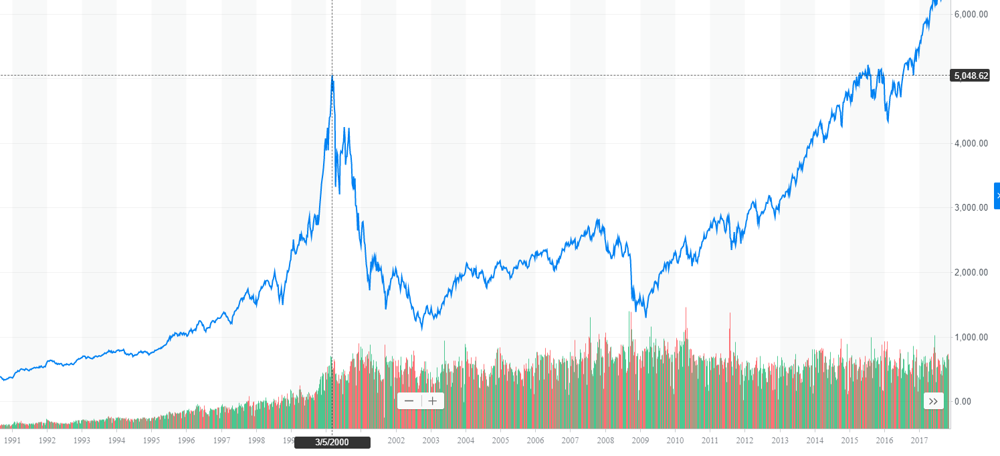
Trato da: https://finance.yahoo.com/chart/%5EIXIC/
A seguito dell’esplosione della bolla, moltissime aziende fallirono. Chi non aveva basi solide, progetti concreti, non resse l’urto, altre sopravvissero anche se fortemente ridimensionate nella capitalizzazione, altre ancora subirono un forte calo di capitalizzazione, ma essendo costruite su progetti validi nel giro di diversi anni riuscirono comunque a recuperare e crescere moltissimo diventando oggi dei leader nei loro settori di riferimento; per fare alcuni esempi parliamo di Amazon, Apple, ecc.
Se nonostante tutte queste premesse volete ancora investire in Bitcoin, ecco alcuni consigli per non commettere gli errori più comuni e muoversi nel mercato delle criptovalute con le dovute precauzioni.
Molte persone mi chiedono spesso quali monete comprare, su quali investire, ecc. Tendo a non fornire mai indicazioni precise o consigli finanziari. Non lo faccio sostanzialmente per due semplici ragioni:
-
nessuno può avere una certezza sull’andamento di questo mercato o sull’andamento di una singola moneta, le incognite, come abbiamo visto, sono troppe per poter fare una previsione sensata soprattutto sul medio lungo periodo
-
se a seguito di un mio consiglio finanziario qualcuno riuscisse a guadagnare moltissimi soldi, probabilmente mi stringerebbe la mano e mi direbbe grazie,alcuni neppure quello, se invece perdessero anche solo una piccola parte dell’investimento mi accuserebbero di averli consigliati male
In ogni caso per me sarebbe un fallimento, quindi non mi interessa partecipare a questo tipo di gioco dove la migliore delle mie prospettive è la sconfitta.
Se non sapete cosa state facendo, non investite in questo mercato. Grandi possibilità di profitto si accompagnano sempre con grandi possibilità di perdita. Non esistono investimenti iper sicuri che garantiscano percentuali di ritorno da capogiro. Dove ci sono grandi interessi obbligatoriamente ci sono anche grandi rischi. Questo non vale solo per le crittovalute, ma per tutti i settori della vita.
13.3. Money management e gestione del rischio
Consiglio sempre a chiunque volesse investire in criptovalute di non investire una quota del proprio portafoglio investimenti superiore al 5%. Se c’è consapovelezza dei rischi del settore, e della gestione del proprio portafoglio, si può salire al 10%. Se non avete un portafoglio investimenti è meglio che non investiate nulla in crittovalute, ma iniziate a creare un portafoglio di risparmi in prodotti finanziari tradizionali, anche se con rendimenti bassissimi. Alcuni youtuber del settore, consigliano di investire in crittovalute solo ciò che si è disposti a perdere, personalmente concordo. Quando dico perdere intendo perdere completamente. Investite quindi una cifra che, anche in caso di crollo completo del mercato, non destabilizzi la vostra vita.
Chiariamo subito che parliamo di guadagni e di perdite solo quando queste si concretizzano. Ciò avviene, in entrambi i casi, solo vendendo le nostre crittovalute e riconvertendole quindi in monete FIAT. Solamente in quel momento potete affermare con certezza di aver portato a casa un utile o una perdita. Diversamente possiamo parlare di valore del nostro investimento o di potenziali perdite o guadagni.
Questo mercato ci ha abituati ad avere una grande volatilità, può subire sbalzi nell’ordine del 30% o più al giorno. Se si investono ad esempio 1.000 € oggi, domani ci si potrebbe trovare con 700 € o meno. Potreste anche ritrovarvi con 2.000 € dopo una settimana, ma questo non credo sia un problema. Nel mercato delle crittovalute, questo tipo di fluttuazioni è normale. Capisco che a prima vista può sembrare un’affermazione forte, ma se andate ad analizzare l’andamento storico dei prezzi, vi accorgerete che eventi del genere si verificano diverse volte all’anno sia con segno più che con segno meno.
Se investite in crittovalute una percentuale del vostro portafoglio investimenti troppo elevata, e vi ritrovate con delle potenziali perdite del 60%, potreste perdere la lucidità mentale per fare le scelte corrette e peggiorare ulteriormente la vostra situazione finanziaria.
E’ fondamentale investire una percentuale di denaro di cui non abbiate bisogno in tempi brevi, ciò vi consente di uscire dal mercato in un momento in cui potete trarre profitto. Se invece vi serve assolutamente quel denaro, sarete costretti a disinvestire, trasformando quindi delle potenziali perdite in perdite concrete. Se viceversa non avete fretta di disinvestire, potete attendere che le potenziali perdite si trasformino con il tempo in potenziali guadagni, e quindi al quel punto vendere e realizzare un guadagno vero e proprio.
Ipotizziamo una persona che decide di investire 10.000 $ acquistando dei Bitcoin, immaginiamo che ciò avvenga a metà dicembre 2017 quando il BTC veniva quotato 18.000 $ (tocco dei massimi a 20.000 $). Il 6 febbraio 2018, meno di due mesi dopo, lo stesso investitore si sarebbe ritrovato con l’equivalente di 3.300 € in Bitcoin ed un prezzo in caduta libera da circa due settimane. Inserite al posto dei 10.000 $ iniziali, la cifra che volete investire in Bitcoin o crittovalute e calcolate, una potenziale perdita del 66% circa in due mesi scarsi. Psicologicamente come vi sentireste? Se non riuscite a reggere questo tipo di pressioni è meglio che riduciate la quota investita fino a un livello che vi permette di vivere bene anche una situazione di questo tipo, con forti cali del prezzo, perchè certamente continueranno ad accadere.
13.4. Due ipotesi concrete
Ipotizzando di avere un portafoglio d’investimento di 10.000 € di cui un 95% impegnato in investimenti tradizionali, con un rendimento medio annuale del 2% e un 5% impegnato in crittovalute.
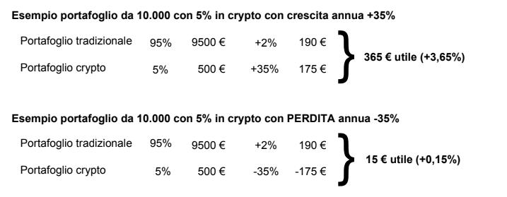
In questo scenario, facciamo quindi due ipotesi sull’andamento annuo del prezzo del Bitcoin.
Scenario positivo: il prezzo è cresciuto del 35% da quando siamo entrati nel mercato. Abbiamo un rendimento totale di tutto il portafoglio di investimento pari a circa 3,65 percento. Scenario negativo: il mercato delle crypto perde il 35% in un anno, porteremo a casa un rendimento prossimo allo zero più precisamente lo 0,15% di interesse.
L’indicazione del più o meno 35% è da intendersi non come una previsione, ma come un puro esempio. Il 2017 ha chiuso con un rendimento del 1400%. E’ difficile fare previsioni sul 2018, possiamo però affermare con certezza che difficilmente potranno essere ripetute le medesime performance dell’anno precedente (vorrebbe dire moltiplicare di 14 volte il marketcap). Questo tipo di performance si possono ottenere probabilmente su monete con una bassa capitalizzazione. Si tratta però di scovare quella giusta, che farà il botto nei prossimi anni, e credetemi, scovarla in mezzo a 1500 non è affatto facile.
13.5. Le ICO
Le Initial Coin Offering (offerta di moneta iniziale), sono uno strumento di raccolta fondi per finanziare nuovi progetti. Possiamo paragonarle in tutto e per tutto ai progetti di crowdfunding che trovate su https://www.kickstarter.com/ con la principale differenza che, le ICO si basano quasi esclusivamente sulla donazione di crittovalute. Ho usato il termine donazione non a caso, infatti chi versa il denaro sta eseguendo tecnicamente una donazione. Pagando NON si ottengono in cambio azioni, obbligazioni o alcun tipo di diritto societario, NON si stanno acquistando azioni, NON si avrà diritto di voto, nè alcun tipo di tutela. Per questa ragione, dietro a molte ICO si sono nascosti molti truffatori, che hanno realizzato progetti fantastici sulla carta, ma dopo aver raccolto il denaro, sono spariti e il progetto è rimasto irrealizzato, spesso senza neppure distribuire i token. A settembre 2017, Cina e Korea del Sud, hanno vietato l’utilizzo di questi strumenti di raccolta fondi, proprio per il dilagare di questi progetti truffa. Altri stati stanno vagliando la possibilità di regolamentare le ICO; in molti stati, come l’Italia ad esempio, realizzare una ICO infrange una serie di normative; per questa ragione, alcuni progetti italiani hanno dovuto realizzare la propria ICO in Svizzera.
Trovate maggiori informazioni qui: https://it.wikipedia.org/wiki/Initial_coin_offering
La prima ICO, Mastercoin, è stata realizzata a Giugno del 2013, la prima di grande successo è stata Ethereum nel 2014, che ha raccolto 19 milioni di dollari circa, il vero boom c’è stato però nel 2017, dove è scattata una vera e propria “ICOmania”. Potete vedere un bel video che dà l’idea della portata del fenomeno a questo indirizzo: https://upload.wikimedia.org/wikipedia/commons/8/8e/This_is_what_4_years_of_ICO_activity_looks_like.webm
Le prime ICO raccoglievano fondi con l’obiettivo di realizzare delle nuove crittovalute come Mastercoin ed Ethereum, IOTA e molte altre. Successivamente ne sono nate per finanziare progetti più disparati, che avevano come oggetto, la creazione di business tradizionali, diventando di fatto un metodo innovativo per finanziare start-up emergenti. Abbiamo visto, nei capitoli precedenti, la differenza tra coin e token; nella stragrande maggioranza dei casi, bisognerebbe infatti definirle ITO cioè Initial Token Offering (offerta di Token iniziale), infatti, dopo aver raccolto una determinata somma di crittovalute, gli ideatori del progetto distribuiscono un token a chi ha partecipato alla ICO.
| Ricordo che le Coin sono progetti complessi che richiedono la presenza di una rete P2P autonoma, dei nodi, dei miner, ecc. I Token, sono invece l’equivalente dei punti del supermercato, vengono accettati solo dall’emittente e tecnicamente si appoggiano sull’infrastruttura di una Coin, nella stragrande maggioranza dei casi su Ethereum. |
Andiamo ora ad riepilogare le varie fasi che caratterizzano una ICO. Purtroppo non c’è uno standard, e ogni raccolta fondi può presentare caratteristiche anche molto diverse da quelle che andrò ad elencare. Se decidete di partecipare ad una di queste ICO, dovete armarvi di santa pazienza e leggere con la massima attenzione tutta la documentazione relativa al progetto e alle modalità di rilascio dei token.
Alla base di una ICO ci dovrebbero quindi essere: -un progetto, spesso descritto a grandi linee sul sito internet della ICO -un white paper, che dovrebbe essere un documento tecnico approfondito, ma si sta trasformando sempre più spesso, in un documento commerciale alla portata di tutti, fornendo quindi sempre meno indicazioni tecniche su come sarà realizzato il progetto -l’indicazione del softcap, cioè la quantità minima di fondi che dovranno essere raccolti, affinchè il progetto possa essere realizzato -l’indicazione dell’hardcap, cioè la quantità massima di fondi prima che la ICO venga chiusa -una scadenza, entro la quale termina la raccolta di denaro
Dopo aver terminato la raccolta fondi, vengono distribuiti i token, rispettando le tempistiche previste dal progetto iniziale o quanto meno si spera che avvenga.
Valutare una ICO dal punto di vista dell’investimento è un processo molto complesso, e non permette mai di avere un’idea chiarissima sui rischi a cui si sta andando incontro. Nonostante tutte le valutazioni, analisi e precauzioni, un investimento in questo tipo è da considerarsi decisamente più rischioso dell’investimento in crittovalute già realizzate e affermate.
Personalmente inizio a fare una valutazione dell’idea alla base della ICO: Quali problemi si pone di risolvere? La soluzione proposta porta effettivamente un vantaggio competitivo sugli attuali player di mercato? La tecnologia che viene adottata, porta dei vantaggi importanti?
Se il progetto sembra interessante, leggo il white paper, per trovare maggiori dettagli dal punto di vista tecnico. Mi è capitato diverse volte di non trovarne. Ultimamente molte ICO realizzano dei white paper “per tutti”. Questo dal mio punto di vista è un brutto segnale. Il white paper deve essere un documento tecnico, dove trovo risposte tecniche, a questioni concrete legate al funzionamento del progetto. Se queste informazioni mancano, la mia valutazione sul progetto tendenzialmente è negativa.
Se invece il white paper mi soddisfa, proseguo l’analisi controllando la composizione del team di sviluppo: Chi sono? Che cosa facevano prima di iniziare questo progetto? Hanno esperienza di sviluppo nel settore specifico? Hanno esperienza commerciale nel settore specifico? Sono presenti figure di spicco in vari settori cruciali per la ICO?
La roadmap, cioè il piano di sviluppo che avrà il progetto, in che tempi si prevede che diventerà operativo? In questo caso faccio valutazioni tirando in ballo i dati analizzati nei paragrafi precedenti, ad esempio valutando a grandi linee la mole di lavoro e la dimensione del team di sviluppo. Se si tratta di realizzare un progetto molto complesso, ma mancano le risorse umane o le competenze, difficilmente si potrà avere un progetto operativo in 6 mesi. Se il progetto è troppo ambizioso e le tempistiche ridotte, probabilmente chi ha preparato la roadmap, non ha l’adeguata esperienza per gestire lo sviluppo di un progetto di questo tipo.
L’analisi di una ICO, come avrete avuto modo di intuire, è un procedimento molto lungo e complesso, richiede competenze tecniche specifiche per valutare il progetto, esperienza in diverse discipline e spesso non è risolutivo; rimangono sempre dei grandi punti interrogativi sulle effettive potenzialità del progetto analizzato. Investire in ICO è quanto di più rischioso il mercato delle crittovalute possa offrire, infatti molti analisti stimano che il 90% falliranno. Trovate un video interessante di Marco Casario qui: https://www.youtube.com/watch?v=O2d0EelDb54
Chi decide di investire nelle ICO adotta la strategia di investire su molti progetti, già sapendo che la maggior parte di questi fallirà, contando però di recuperare queste perdite, con il successo ottenuto sui pochi progetti che avranno un grandissimo successo. La scelta dei progetti diventa quindi cruciale, analizzarli in modo approfondito richiede molto tempo e risorse, per trovare dieci progetti interessanti, probabilmente dovrete analizzarne un centinaio o più. Questo processo vi porterà via moltissimo tempo, valutate se la cifra che avete intenzione di investire, giustifica questo tipo di investimento.
Trovate un altro video interessante, questa volta di Blockchain Caffè qui: https://www.youtube.com/watch?v=PFViiATVm0E
14. Truffe e raggiri
Come in ogni settore, anche in questo, le truffe e i raggiri di vario tipo e natura non mancano. Sfruttando le aspettative di forti guadagni, i malintenzionati hanno messo a punto diverse strategie per derubare potenziali investitori, che si avvicinano a questo mondo senza le dovute competenze.
Uno degli scopi di questo libro è proprio quello di diffondere le competenze di base per potersi muovere nell’universo delle crittovalute con le necessarie competenze per non incorrere nelle truffe più diffuse.
14.1. Ha investito 10 € ed è diventato milionario
Partiamo da un grande classico, il banner pubblicitario del ragazzo con in mano un ventaglio di dollari, circondato da avvenenti donzelle e da automobili lussuose. Solitamente il testo che accompagna l’immagine suona più o meno così: “Studente investe 10€ in Bitcoin, è diventato milionario”. Sicuramente chi è entrato in Bitcoin nel 2009/2010, con 10 € e’ riuscito a comprare l’equivalente odierno di milioni di euro in Bitcoin. Conosco personalmente diversi appassionati che avevano minato alcuni blocchi di Bitcoin con il PC di casa, quando ancora non esistevano le schede ASIC; parlo degli anni in cui la ricompensa per ogni blocco minato era di 50 bitcoin. Tutti e dico tutti, li hanno venduti, alcuni facendo degli ottimi guadagni in rapporto ai costi sostenuti. Nessuno li ha tenuti fino al 2018. Sicuramente ci può essere gente che, più per caso che per strategia, ha conservato i Bitcoin minati, ritrovarsi con delle piccole fortune, ma sono dei casi più unici che rari. Sono performance che non si potranno più ottenere, è un treno passato e non ripasserà più, facciamocene una ragione e viviamo la cosa serenamente. Sicuramente questo settore può ancora dare grandi soddisfazioni, ma, ad oggi, sperare di investire 1.000 € e vederli crescere di mille volte nel giro di qualche anno è praticamente impossibile.
14.2. Investimenti telefonici
Con grande stupore ho ricevuto in ufficio una chiamata da un call center probabilmente indiano, che mi invitava ad investire in crittovalute. Ho letto anche alcuni articoli a riguardo, pare un fenomeno in forte crescita. Se continuano a chiamare probabilmente qualcuno che gli manda i soldi ci sarà. Il mio consiglio è ovviamente di NON affidarsi a questo tipo di intermediazione. Se non siete in grado di comprendere i meccanismi che regolano questo mercato, il mio consiglio è di non investirci. Se nonostante ciò, proprio volete investire a tutti i costi in criptovalute, vi consiglio di rivolgervi ad un promotore finanziario qualificato e di comprovata fiducia. Questo è un controsenso: un sistema che nasce per tagliare fuori l’intermediazione, finisce per diventare l’ennesimo prodotto di investimento “venduto” da un intermediario. Con tutto il rispetto per i promotori finanziari e gli operatori del settore finanziario.
14.3. Schema Ponzi
Lo “Schema Ponzi” è il tipo di truffa finanziaria più diffusa al mondo, prende il nome da Charles Ponzi italo americano che negli anni 20, partendo con due dollari riuscì a raccogliere oltre 15 milioni di dollari. Uno dei casi più eclatanti di Schema Ponzi, si registrò nel 2008, quando Bernard Madoff, riuscì a creare una truffa per oltre 50 miliardi di dollari, coinvolgendo non solo investitori privati, ma anche grandi investitori istituzionali. Madoff era talmente ben inserito nel sistema finanziario che ricoprì addirittura ruoli di spicco, fu ad esempio presidente del NASDAQ. Questo esempio per dimostrare che non si tratta del gioco delle tre carte fatto con un banchetto ambulante alle fiere di paese, ma di operazioni che durano anni e che a prima vista possono apparire dei buoni investimenti, promossi da professionisti affidabili. Tecnicamente si tratta di una truffa semplicissima: il truffatore si fa consegnare del denaro dall’investitore con la promessa di garantire il pagamento di interessi molto superiori agli altri investimenti disponibili sul mercato, spesso giurando e spergiurando sull’assenza di rischi. Per dimostrare che il sistema funziona, ogni mese, il truffatore deposita la quota di interesse pattuita sul conto della vittima, che dopo un paio di mesi, si convince della bontà dell’investimento e spesso incrementa ulteriormente la propria posizione e coinvolge, in buona fede, amici e conoscenti. Il truffatore in realtà non sta facendo nessun investimento, ma usa semplicemente i soldi del primo cliente, per pagare gli interessi al cliente stesso, e a tutte le persone che via via questo coinvolge. Capite che si crea un fenomeno di passaparola, spesso ulteriormente incentivato da strutture di marketing piramidale, dove chi coinvolge nuove persone, ottiene guadagni per questa attività di “vendita”. Tutto ciò prosegue finchè il malintenzionato non viene scoperto o fugge con il malloppo raccolto. Per limitare questi fenomeni in molti paesi le attività di marketing piramidale sono state regolamentate. Queste strategie di marketing non sono delle truffe, ma spesso vengono sfruttate dai truffatori per ingigantire la portata delle loro attività.
Anche nel mondo delle crittovalute c’è stato, ci sono e ci saranno diversi “Schemi Ponzi”, muovetevi quindi con la massima prudenza.
Trovate maggiori informazioni sullo “Schema Ponzi” qui: https://it.wikipedia.org/wiki/Schema_Ponzi mentre per il multi level marketing qui: https://it.wikipedia.org/wiki/Multi-level_marketing
14.4. Guadagni e rendite garantite
Dietro alla stragrande maggioranza di queste truffe ci sono promesse di garantire grandi guadagni, certi e costanti nel tempo. Chiunque segua da qualche mese il mercato delle crittovalute, avrà di sicuro assistito a grandi cadute del prezzo e relative riprese; se c’è un mercato davvero imprevedibile nei suoi movimenti, anche molto violenti, è quello delle crittovalute. Garantire rendimenti stabili e sicuri nel tempo fa a pugni con questo mondo. Se volete investire in crittovalute acquistatele direttamente voi, e se siete arrivati a leggere queste pagine, un’idea di come fare dovreste esservela fatta. Se avete dei dubbi, potete chiedere sulle chat o sui forum indicati nella sezione Risorse utili presente alla fine di questo libro.
14.5. ICO truffa
Nei capitoli precedenti abbiamo visto che cos’è e come funziona una ICO. Come abbiamo già avuto modo di dire, si tratta di una donazione che voi fate, un atto di pura fiducia nei confronti dei promotori di questa raccolta fondi. Se decidete di partecipare, documentatevi benissimo sulle persone sulle quali state investendo, sul loro passato, sulle loro competenze tecniche, ma anche imprenditoriali. Inutile dire che in molti casi l’unica motivazione dietro alle ICO è quella di raccogliere soldi, il progetto è solo una scusa per farlo. Massima attenzione quindi.
14.6. Promotori finanziari con cattive intenzioni
Da sempre la figura del promotore finanziario è contraddistinta, come in tutti gli altri settori, da molte persone per bene e da qualche disonesto. In questa fase di grande interesse per le crittovalute sono apparsi personaggi discutibili, poco professionali, che si spacciano per promotori e vi invitano a investire in questo settore. La mia unica raccomandazione è quella di affidarsi a professionisti qualificati e di comprovata fiducia; muovetevi con prudenza.
14.7. Prodotti finanziari spacciati per crittovalute
Alcuni conoscenti, mi hanno detto di aver acquistato crittovalute su alcuni siti che non mi risultavano essere degli exchange. Approfondendo, ho scoperto che questi siti, vendevano dei prodotti finanziari “indicizzati” sulle crittovalute. Le persone con cui sono venuto in contatto credevano di aver acquistato Bitcoin, in realtà avevano acquistato dei prodotti finanziari, una sorta di contratto a scadenza sull’acquisto o la vendita in una determinata data ad un determinato prezzo di una certa quantità di crittovalute. Questi sono strumenti finanziari del tutto leciti, ma che non sono crittovalute. Personalmente sconsiglio di investire in questi prodotti, soprattutto se non sapete di che si tratta, quali sono i pro e i contro, ecc. A mio modesto avviso, si tratta di una scommessa sull’esito di un’altra scommessa. Un mercato già molto volatile come questo, secondo me non ha bisogno di aggiungere altra incertezza. Se volete iniziare a comprare e vendere in crittovalute, potete farlo direttamente tramite gli exchange, in completa autonomia.
14.8. Attacchi informatici
Una sezione a parte di questo capitolo è dedicata alle truffe tramite strumenti informatici. Per muoversi in questo mercato serve utilizzare PC, smartphone o tablet; facendolo ci esponiamo inevitabilmente a dei rischi informatici, legati all’uso di queste tecnologie. Sarebbe fantastico poter riuscire in mezza paginetta a riassumere tutti i pericoli e le strategie per operare in sicurezza, purtroppo non è possibile, quindi cercherò di riepilogare i problemi più comuni.
14.8.1. Virus e malware
I virus e i malware (software con scopi malevoli), si trasmettono principalmente via email, tramite il download di software, tramite crack o programmi illegali (opportunamente modificati) o con una semplice chiavetta USB, precedentemente usata su un PC infetto. Per quanto riguarda gli smartphone e i tablet, installando app non ufficiali, o non provenienti dagli store ufficiali. E’ già successo che app presenti negli store contenessero dei malware. Tutti questi software possono leggere il contenuto del vostro PC o smartphone, alla ricerca delle vostre chiavi private o dei numeri della vostra carta di credito.
Le precauzioni da adottare sono le medesime per tutti i dispositivi e cioè mantenere il sistema operativo e i vari software aggiornati, non utilizzare software pirata, non scaricare crack o programmi “sbloccati”. Scaricare sempre software da fonti affidabili, prediligere dove possibile software open source. Non aprire allegati di email di cui non conosciamo la fonte, o di materiale non richiesto anche nel caso provenisse da una fonte attendibile. Spesso vengono usati trucchi psicologici per indurvi ad aprire l’allegato, ad esempio, giocando sulla vostra curiosità, sulle vostre paure o sulla vostra distrazione. Vengono inviate false fatture, false fotografie, false multe, con l’unico obiettivo di farvi cliccare sull’allegato. Installare un antivirus aiuta, ma il miglior antivirus è il vostro cervello.
14.8.2. Ramsonware
Sono dei virus che cifrano il contenuto del vostro hard disk con una chiave crittografica e vi chiedono un riscatto in Bitcoin, per restituirvi i vostri file. Per proteggersi valgono le stesse regole descritte sopra, in più ricordiamo l’efficacia di una buona politica di backup, con creazione frequenti di copie di sicurezza di tutti i documenti importanti presenti sul vostro PC. Se avete copia di questi documenti potete permettervi di formattare il computer e recuperare i dati persi dalla copia di salvataggio. Generalmente i ramsonware non vanno alla ricerca delle vostre chiavi private all’interno del vostro PC, ma non mi stupirei se iniziassero ad implementare anche questa redditizia funzionalità.
14.8.3. Phishing
Il phishing è quel tipo di attacco informatico che sfrutta la realizzazione di siti o email, il più possibili simili a quelle di istituti bancari, exchange o siti di commercio elettronico. Questi messaggi cercano in modi diversi di invitarvi a inserire le vostre credenziali, su un sito creato ad hoc dai criminali. Così facendo, si impossessano della vostra username e password, ed accedono al sito originale a nome vostro. Ci si può difendere da questo tipo di attacchi, facendo moltissima attenzione a tutte quelle email nelle quali vi si invita ad andare su un sito dove vi viene richiesto di inserire username e password. Una buona strategia da adottare è quella di attivare sempre l’autenticazione a due fattori, con i servizi online che la implementano.
14.8.4. Altri attacchi informatici
Esistono altri tipi di attacchi informatici di diversa natura, tutti solitamente finalizzati a prendere il controllo del vostro PC o smartphone, spesso con obiettivi diversi, non ultimo quello di trasformare il PC di un miner, e farlo lavorare per estrarre crittovalute. Nei capitoli precedenti abbiamo visto come questa attività non sia molto redditizia, quanto meno in Italia. Il punto è che questi criminali, raccolgono il risultato del mining, ma lasciano a voi tutti i costi, a partire dall’elevato consumo elettrico.
In generale dobbiamo essere consapevoli di questi rischi e adottare le relative contromisure. Se decidete di lasciare copia delle vostre username e password sul vostro PC, adottate un sistema di cifratura, in modo da renderle illeggibili a chiunque riuscisse ad accedere ai file. Lo stesso discorso vale per le chiave private che vi permettono di disporre delle vostre crittovalute.
15. Consigli utili per evitare gli errori più comuni
Concludo con una serie di consigli utili, per evitare gli errori più comuni commessi da chi si affaccia per la prima volta a questo mondo, nella speranza che vi possano essere d’aiuto facendovi risparmiare tempo e denaro.
15.1. Partire con piccole somme
Per prendere dimestichezza con gli exchange ed i wallet, è fortemente consigliato iniziare con piccole somme. Provate ad acquistare su un exchange l’equivalente di poche decine di euro di Bitcoin. Dopo averli acquistati potete trasferirli su un vostro wallet, e successivamente trasferirli su un altro wallet, o nuovamente sull’exchange. Per queste operazioni vi verranno addebitati dei costi di commissione dall’exchange per ogni trasferimento in uscita, inoltre dovrete pagare una piccola fee per ogni transazione fatta sulla blockchain, per remunera i miner. Considerate questi costi come un piccolissimo investimento da fare per prendere dimestichezza con questi sistemi. Prima di eseguire le transazioni verificate a quanto ammontano le commissioni dell’exchange, ma soprattutto, il prezzo medio delle fee previsto dai miner. Complessivamente i costi non dovrebbero superare pochi centesimi di euro. Meglio commettere qualche errore con piccole somme, che ritrovarsi a spostare grandi capitali senza aver maturato un minimo di esperienza.
15.2. Depositi in FIAT
Quando dovete inviare monete FIAT (euro, dollaro, ecc.) sugli exchange, utilizzate sempre il bonifico, se possibile SEPA. Quasi tutti gli exchange non applicano alcuna commissione sui versamenti effettuati con bonifico. Viceversa sui depositi fatti con carta di credito, vengono applicate delle commissioni di deposito che possono arrivare anche al 4% o più.
15.3. Prelievi in FIAT
Registratevi su tutti gli exchange principali ed eseguite la verifica dei documenti per almeno un paio di essi. La verifica richiede a volte anche un mese, quindi è meglio iniziare subito la procedura. Se in futuro avrete urgenza di vendere e prelevare in moneta FIAT da un exchange, aver già eseguito la procedura sarà un gran vantaggio. Non è il caso di eseguirla su tutti, in caso di necessità potete trasferire le vostre crittovalute su un exchange sul quale avete completato la verifica, e prelevare gli euro tramite loro.
15.4. Money management
Non superate la quota di portafoglio prefissata per gli investimenti ad alto rischio. Spesso una valutazione effettuata prima di aver conseguito utili o perdite, è una valutazione più sana, non influenzata dal vostro stato emotivo. Potreste, in caso di euforia per la crescita dei prezzi, essere tentati di investire più di quanto sia consigliato fare, o viceversa, investire per cercare di “recuperare” delle perdite.
15.5. Diversificare
E’ un concetto da applicare sotto più punti di vista, a partire dal tipo di investimenti. Evitate di investire tutto il vostro portafoglio di crittovalute nella stessa moneta. Se per qualsiasi ragione quella crolla, con lei cala tutto il vostro portafoglio d’investimento. Viceversa se dividete in quattro monete, se una va a zero, il vostro portafoglio registrerà una perdita che non potrà superare il 25%. Allo stesso modo diversificate in base al tipo di moneta, alla tecnologia, al settore in cui opera, ecc.
15.6. Analisi rendimenti
Ipotizziamo che in momenti diversi, con prezzi diversi abbiamo eseguito 3 acquisti di Bitcoin. Come facciamo con un colpo d’occhio a capire se vendendo i nostri Bitcoin, siamo in guadagno o in perdita? Per semplificarci la vita ci viene incontro il prezzo medio. Calcolarlo correttamente è fondamentale per poter monitorare il prezzo e comprendere al volo il potenziale guadagno o perdita. Il calcolo è banale, si tratta di sommare tutti gli euro investiti in quella moneta e dividerli per la quantità detenuta. Un altro aspetto importante è considerare i costi di commissione sia in entrata che in uscita, in modo da avere un’ idea di guadagno già al netto di questi costi. Su grandi cifre queste sono trascurabili, ma su piccole cifre potrebbero riservare più di una spiacevole sorpresa.
15.7. Formazione
Tenersi informati è fondamentale. Aver letto questo libro è già stata un’ottima scelta, che sicuramente vi permetterà di risparmiare tempo e denaro. Nella prefazione di questo libro troverete le istruzioni su come sostenere questo progetto, fateci un pensierino se avete trovato utile la lettura. Esistono centinaia di chat Telegram sull’argomento crittovalute, alcune anche localizzate per provincia. Esistono poi chat in lingua italiana per le principali monete. Spesso vengono organizzati meetup, serate, incontri di varia natura, dalla formazione allo scambio reciproco di competenze. I canali youtube sull’argomento non mancano, il più seguito in Italia è Marco Casario https://www.youtube.com/channel/UCZp2KqGRkO1goEAaxX5Huyg che quotidianamente realizza brevi video di circa 10 minuti sulle ultime novità dal mondo delle crittovalute; fornisce inoltre, brevi e semplici lezioni di analisi tecnica e altri consigli interessanti sulla gestione dei propri investimenti. In coda al libro troverete una serie di link che puntano a molte di queste risorse; ovviamente l’elenco non può essere completo anche perchè ogni giorno nasce qualche nuova interessante iniziativa. Se avete dei dubbi, chiedete sui forum o nelle chat. Il forum mondiale più popolare è BitcoinTalk.org che ha una nutrita sottosezione in lingua italiana https://bitcointalk.org/index.php?board=28.0
15.8. Trading
Non sono un esperto di trading, ma mi sento di darvi due consigli semplici ma fondamentali. Il primo è “Buy low sell high” tradotto: compra quando il prezzo è basso e vendi quando è alto. Sembra una banalità, ma conosco molte persone che comprano le monete che su marketcap hanno registrato forti rialzi nelle ultime 24 ore. Se una moneta è già salita moltissimo nelle ultime 24, difficilmente salirà ancora altrettanto. Bisognava comprarla prima che salisse. Facile da dirsi, difficile da farsi. Personalmente mi sono preso un paio di piccole soddisfazioni, acquistando monete anche blasonate, che nell’ultimo periodo avevano registrato pessime performance, nonostante la validità dei progetti. In questi casi, o di fronte ad un forte ritracciamento del prezzo non motivato da problemi tecnici, acquistare potrebbe essere la scelta giusta. Il secondo consiglio è tenere sempre a disposizione dei fondi in monete FIAT sugli exchange, a disposizione per fare acquisti rapidi nel caso in cui ci fossero delle occasioni da cogliere al volo.
15.9. Tasse e fiscalità
Consultatevi con un professionista di fiducia, in questa fase, probabilmente si troverà spiazzato nel rispondervi. Il fenomeno delle criptovalute, possiamo dire che è esploso nel 2017, ci vorranno anni perché raggiunga le masse. Esistono però professionisti appassionati alla materia, molto preparati che possono consigliarvi su come muovervi al meglio in questo settore ed evitare spiacevoli sorprese. Segnatevi tutti gli acquisti e le vendite che eseguite, stampatevi le ricevute dei bonifici e documentate tutto. Se un domani vi venisse chiesta la motivazione di tali movimentazioni, quantomeno avrete della documentazione a riguardo. Personalmente vi sconsiglio di intraprendere qualsiasi tipo di attività illegale con le crittovalute, in prima battuta perchè non è legale, in seconda battuta perchè è tutto tracciato[line-through]* con buona pace dei mass media che dicono che sia anonimo*.
15.10. Sicurezza informatica
Ultima ma non ultima, la sicurezza informatica, su cui ci sarebbe da scrivere un libro intero, e a questo punto non è detto che non lo faccia. Di sicuro partire da sistemi operativi recenti e mantenuti aggiornati costantemente, sia per quanto riguarda il PC che per quanto riguarda gli smartphone, non installate il primo software scaricato da internet, utilizzate software diffuso, recensito possibilmente bene, non installate crack o software piratato, non inserite chiavette USB provenienti da PC potenzialmente infetti. Utilizzate sempre l’autenticazione a due fattori, anche sull’e-mail che avete utilizzato per registrarvi ai singoli exchange. Fate sempre i backup dei QR Code, quando li aggiungete all’app di autenticazione. In caso di perdita o furto del dispositivo riuscirete a ripristinarli velocemente su un nuovo smartphone, diversamente ci vorranno settimane prima di riuscire a prendere nuovamente il controllo dei vostri account sugli exchange. Attivate la modalità PARANOICA per quanto concerne la gestione e la conservazione delle vostre chiavi private, create backup multipli e conservateli in posti sicuri.
Ricordate sempre: voi siete la vostra banca.
Il libro per come è stato concepito nella sua versione iniziale, termina qui. Nelle prossime pagine, troverete un elenco di link a risorse utili, in lingua italiana, ed una serie di approfondimenti mirati su determinati argomenti. Il libro continuerà ad evolversi ed arricchirsi nel tempo, grazie anche al vostro contributo.
Per tenervi aggiornati sulla pubblicazione di nuovi contenuti, vi consiglio di registrarvi al canale Telegram: "Bitcoin per tutti - canale aggiornamenti"
In questo canale non potete intervenire, per chattare con gli altri lettori del libro e con il sottoscritto, potete usare la chat Telegram: "Bitcoin per tutti"
16. Link vari
La documentazione in lingua inglese sulle crittovalute abbonda, ma anche nel panorama italiano c’è una discreta produzione di materiale interessante. In questo elenco cerco, ove possibile, di fornire un panorama di risorse in lingua italiana.
16.1. Sito del libro
Il sito del progetto: https://www.bitcoinpertutti.org
16.2. White Paper di Bitcoin
Inglese: https://bitcoin.org/bitcoin.pdf
16.3. Telegram
Il canale Telegram https://t.me/bitcoinpertutticanale per tenervi aggiornati su correzioni, nuove edizioni e la pubblicazione di nuovi capitoli, non si può interagire ma solo essere avvisati sulle ultime novità che riguardano il libro.
La chat dei lettori del libro https://t.me/bitcoinpertutti qui potete interagire con gli altri lettori del libro o con me sui contenuti del libro.
16.4. Wallet Bitcoin
Elenco wallet per Windows: https://bitcoin.org/it/wallets/desktop/windows/
Elenco wallet per Linux: https://bitcoin.org/it/wallets/desktop/linux/
Elenco wallet per Mac: https://bitcoin.org/it/wallets/desktop/mac/
Elenco wallet per Android: https://bitcoin.org/it/wallets/mobile/android/
Elenco wallet per IOS: https://bitcoin.org/it/wallets/mobile/ios/
Elenco wallet per Windows Phone: https://bitcoin.org/it/wallets/mobile/windowsphone/
Elenco wallet per Blackberry: https://bitcoin.org/it/wallets/mobile/blackberry/
16.5. Exchange
Lista degli exchange ordinata per volumi generati nelle ultime 24 ore: https://coinmarketcap.com/exchanges/volume/24-hour/
16.6. Explorer
Blockchain.info: https://blockchain.info/it
Blockexplorer.com: https://blockexplorer.com
16.7. Forum
Bitcointalk.org: https://bitcointalk.org/index.php?board=28.0
16.8. Grafici
Analisi dell’andamento delle fee sulla rete Bitcoin: https://dedi.jochen-hoenicke.de/queue/#3m
Analisi di molti parametri della rete Bitcoin e Bitcoin cash: https://www.fork.lol
Altri grafici su Bitcoin e altre monete: https://bitinfocharts.com/comparison/transactionfees-btc-ltc.html#6m
16.9. Canali Youtube
Blockchain caffè (tecnologia, ma con parole semplici): https://www.youtube.com/channel/UC45fFhSPMzXN2TRqgkGLPsw
Marco Casario (trading e mercato): https://www.youtube.com/channel/UCZp2KqGRkO1goEAaxX5Huyg
Stefano Capaccioli (aspetti legati e fiscali): https://www.youtube.com/channel/UCdRl8q3vuiLmwCgzNVBMSsQ
Luca Ferrini (aspetti legati e fiscali): https://www.youtube.com/channel/UCqDQhUWI2LigqL1cdtOtrsQ
Ferdinando Ametrano (professore universitario): https://www.youtube.com/channel/UCq5tOjw0pZLeoxnqkC5KSHQ
Vi consiglio di iscrivervi a questi canali e successivamente cliccare sulla campanella a fianco del pulsante di iscrizione, in modo da essere avvisati alla pubblicazione di ogni nuovo video.
16.10. Blog
Alberto de Luigi (tecnico): https://www.albertodeluigi.com/
Coinlex (aspetti legali, contabili, fiscali): https://coinlexit.wordpress.com/
17. APPROFONDIMENTO: I fork
Nei capitoli precedenti, ho accennato al fatto che alcune crittovalute sono nate da un fork di Bitcoin; proviamo ora ad approfondire l’argomento, cercando di andare maggiormente nel dettaglio, di che cos’è un fork, quali tipi di fork esistono e perché vengono fatti.
17.1. Introduzione ai fork
Il termine fork si potrebbe tradurre in italiano con biforcazione, in informatica viene utilizzato per descrivere un nuovo software che nasce dal codice sorgente di un progetto già esistente. Entrambi i codici, sono quindi identici fino al fork e successivamente proseguono il loro sviluppo come due progetti indipendenti.
Il concetto di fork è molto comune nei software open source, in quanto proprio per la natura aperta del codice, accade spesso che gruppi di sviluppatori con visioni diverse sull’implementazione del progetto siano in conflitto. In questi casi, uno dei due gruppi può decidere di creare un fork del codice sorgente e proseguire con lo sviluppo in modo completamente indipendente, recuperando però tutto il codice esistente scritto da entrambe i gruppi fino a quel punto.
Chiunque creda di poter migliorare il codice sorgente di qualsiasi software open source, può provare a promuovere le proprie ragioni all’interno della community degli sviluppatori; se questa proposta non venisse presa in considerazione, lo sviluppatore in questione potrebbe “forkare” il codice e iniziare ad implementare la propria idea.
E’ un sistema che garantisce una grande libertà ed è a mio avviso molto meritocratico; se penso di poter fare una cosa meglio, nessuno mi vieta di farlo, e di dimostrare a tutti che la soluzione adottata da me è migliore di quella scelta dagli altri sviluppatori. Questo processo può far nascere una forte competizione tra i due rami di sviluppo che può quindi giovare ulteriormente alla qualità dei software sviluppati.
Spesso questi fork nascono in seguito a vere e proprie guerre interne, a volte si tratta di scontri personali tra gli sviluppatori che poi degenerano fino a coinvolgere l’intera community. Alla base possono esserci sia ragioni tecniche che economiche; il fatto che il codice del software venga diffuso gratuitamente, non significa che dietro alla sua produzione non si nascondano anche grandi interessi economici secondari, ad esempio legati all’assistenza sul software o all’implementazione di software complementari, a pagamento, che si “appoggiano” al software open source oggetto del fork.

{kind=link}
In questa immagine potete vedere una versione semplificata dello sviluppo dei progetti derivati da UNIX, avuta dal 1970 fino al 2010. Tra quelli più conosciuti ci sono OS X da cui derivano i sistemi operativi utilizzati dalla Apple, ed il ramo GNU/Linux, da cui deriva il sistema operativo Android.
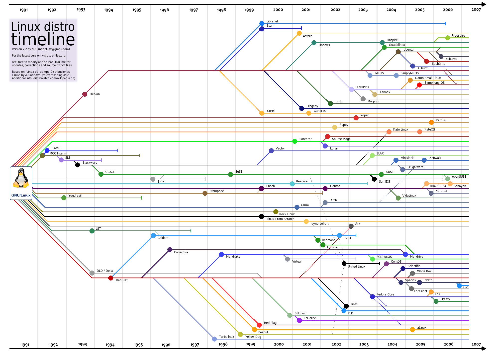
Questa invece è l’evoluzione del solo ramo di Linux citato nell’immagine precedente. Si tratta di un’infinità di progetti e sottoprogetti, alcuni sono nati e morti nel giro di pochi mesi, altri sono sopravvissuti per anni, venendo a loro volta forkati ripetutamente.
Il fork oltre ai molti aspetti positivi, portano con sé anche aspetti negativi, come ad esempio la spaccatura della community degli sviluppatori, spesso condita con grandi dosi di astio e delegittimazione reciproca. Inoltre c’è da considerare una dispersione di energie legate allo sviluppo del codice. Venti programmatori che lavorano ad un singolo progetto, riescono a sviluppare nuove funzionalità molto più velocemente, rispetto a due gruppi distinti di sviluppatori su due progetti separati.
Quando si parla di fork di Bitcoin, purtroppo si possono intendere concetti anche molto differenti tra loro. Cercherò quindi di descriverli nel dettaglio, in base alla loro natura e alle conseguenze che questi possono avere sul protocollo e sugli utenti.
Questa catalogazione rappresenta un mio personale modo di schematizzare questi concetti, NON si tratta di una catalogazione ufficiale.
17.2. Fork natuali della blockchain
Nel capitoli precedenti, abbiamo visto come i miner, dopo aver raccolto le transazioni presenti nella rete P2P, generino un blocco con tanto di hash. Questo blocco ed il relativo hash, vengono quindi diffusi sulla rete P2P di Bitcoin raggiungendo tutti i nodi connessi. E’ possibile che, prima che il blocco prodotto dal miner A raggiunga tutti i nodi della rete, un altro miner, il miner B, riesca a trovare la funzione di hash per il proprio blocco.
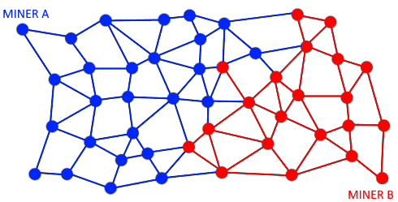
In questo caso tutti e due i blocchi generati e le relative funzioni di hash, risultano validi a tutti gli effetti, entrambi infatti contengono una serie di transazioni valide ed una funzione di hash corretta. In queste condizioni, i miner che ricevono prima il blocco dal miner A, considereranno questo come il blocco corretto ed inizieranno a lavorare alla ricerca del blocco successivo, che chiameremo A1. Viceversa quelli che riceveranno il blocco prima dal miner B, considereranno questo blocco come corretto ed inizieranno a minare un nuovo blocco, che chiameremo B1, da accodare al blocco B.
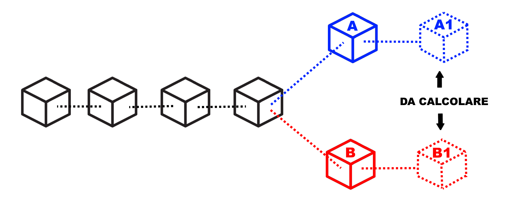
Nasce quindi una biforcazione nella blockchain. Questo tipo di fork è del tutto naturale, infatti il protocollo prevede questo tipo di eventualità. Ogni nodo della rete, deve ritenere valida la catena con il maggior numero di blocchi, questo perchè dove ci sono più blocchi, significa che c’è stata più proof of work e quindi semplificando più potenza di calcolo.
| Tutti i nodi delle rete Bitcoin ricevono sia il blocco generato dal miner A che il blocco generato dal miner B. I miner però, a differenza degli altri nodi, quando vengono avvisati della presenza di un nuovo blocco concorrenziale a quello a cui stavano lavorando, interrompono il calcolo della funzione di hash di quest’ultimo, creano un nuovo blocco da accodare a quello appena ricevuto, e ricominciano a calcolare una funzione di hash per questo nuovo blocco. |
Come spiegato nel capiti precedenti, ogni blocco porta al suo interno l’hash del blocco che lo ha preceduto, quindi il blocco A e il blocco B non potranno mai, in nessun caso, diventare entrambe parte della stessa blockchain, in quanto la catena di blocchi non prevede la possibilità che sia presente una biforcazione. Ogni blocco deve essere accodato all’altro, come un vagone dietro l’altro, non possono esistere due vagoni affiancati. Il blocco A ed il blocco B contengono entrambe al loro interno l’hash del blocco che li ha preceduti, perciò solo uno dei due potrà essere accodato in modo definitivo alla blockchain.
Nella situazione attuale, entrambe i rami della blockchain sono da ritenersi validi a tutti gli effetti, ed entrambe hanno lo stesso numeri di blocchi. Questa situazione è solo temporanea e dovrà essere risolta con la pubblicazione dei prossimi blocchi. Possiamo semplificare dicendo che tutta la potenza di calcolo sarà quindi divisa in due grandi gruppi, il primo cercherà di calcolare il blocco successivo nel ramo A, mentre il secondo cercherà di trovare l’hash del prossimo blocco nel ramo B. Non è detto che la divisione della potenza di calcolo sia suddivisa esattamente al 50% per gruppo, anzi è difficile che ciò avvenga; la distribuzione della potenza di calcolo sui due rami, dipende da quanti miner hanno ricevuto il blocco A prima del blocco B e viceversa. Ipotizziamo che un miner del ramo B, trovi per primo l’hash di un nuovo blocco che chiameremo B1. Una volta trasmesso sulla rete l’esito della sua elaborazione, tutti i nodi, seguendo la regola descritta precedentemente, e cioè, che la catena valida è quella con il maggior numero di blocchi, si adegueranno e considereranno questa catena, come la catena principale. Il blocco del ramo A sarà quindi abbandonato, non potrà fare parte della blockchain, per questa ragione viene definito blocco orfano.
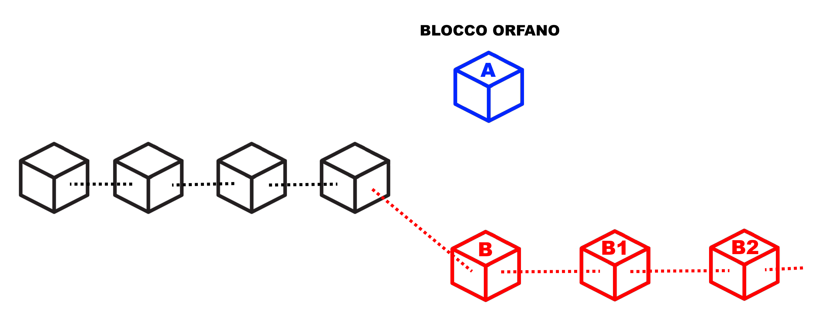
Tutte le transazioni presenti nel blocco A, non si possono considerare confermate, a meno che non siano a loro volta state inserite nel blocco B o nel blocco B1, ecc. E’ per questa ragione che occorre attendere di ricevere più conferme (cioè blocchi accodati a quello contenente la propria transazione), per essere certi che una transizione sia effettivamente scritta in modo indelebile nella blockchain. Per assurdo, potrebbero infatti generarsi più blocchi contemporaneamente su entrambe i rami, dando vita a due rami con 2, 3 o 4 blocchi per uno. Si tratta di una situazione teoricamente possibile, ma altamente improbabile.
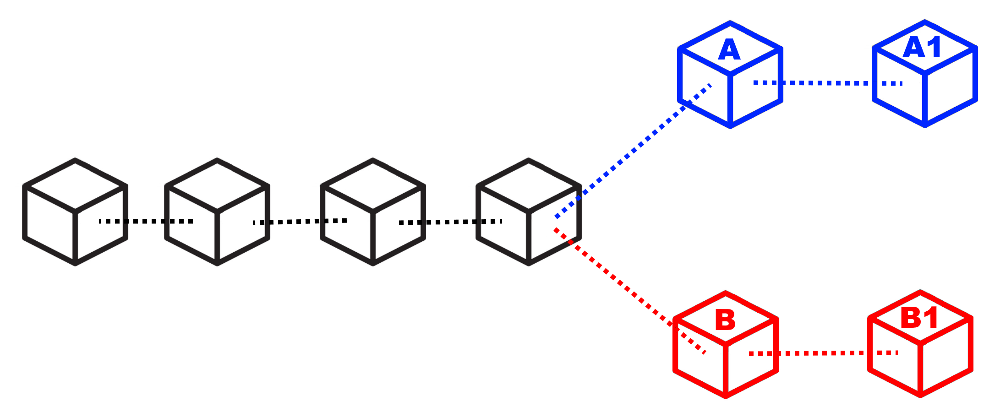
L’elenco sempre aggiornato degli ultimi blocchi orfani è disponibilie qui: https://blockchain.info/it/orphaned-blocks
Dal punto di vista dell’usabilità di Bitcoin come mezzo di pagamento, va detto che la stragrande maggioranza degli utenti, non si accorgerà di nulla. Se si adotta la regola di attendere più conferme, non può nascere alcun tipo di problema legato alla presenza del tutto naturale di questo tipo di biforcazioni.
17.3. Fork amichevole della sola blockchain
Uno dei problemi maggiori per chi crea una nuova moneta è quello di mettere questa nuova coin in circolazione, nelle mani dei possibili utilizzatori, in modo che questi possa iniziare a spenderla. Abbiamo visto come funziona una ICO; oltre ad essere un mezzo per finanziare un progetto, in realtà si tratta di un modo per distribuire una moneta, in modo che le persone possano iniziare ad utilizzarla. Per fork amichevole della sola blockchain, intendo una foto, una istantanea, della blockchain in un determinato momento. Può accadere infatti che per distribuire una nuova crittovaluta, si scelga di regalare una determinata quantità di monete a chi in un determinato momento, possedeva dei Bitcoin. La quantità di nuova moneta regalata solitamente è proporzionale alla quantità di Bitcoin posseduti in occasione del fork.
| Spesso si indica una data ed un’ora per indicare quando ci sarà un fork, in realtà è più corretto ragionare in termini di numero di blocco, infatti quando viene annunciato un fork, si indica sempre il numero del blocco di riferimento. Solitamente, adottando la regola dei 10 minuti per blocco, si riesce ad avere una stima di massima della data e dell’ora, ma questa ipotetica data e ora può anticipare se i blocchi vengono estratti più velocemente o posticipare se vengono estratti più lentamente. |
Questa strategia ha due grandi vantaggi:
-
diffondere la moneta; una coin che nessuno ha, non può essere utilizzata
-
farsi pubblicità; se regalo monete a chi già è in possesso di Bitcoin, faccio parlare di me, nei forum e nelle chat si parlerà della nuova moneta, di come ottenerla, ecc.
Una strategia simile è stata adotta ad esempio da ByteBall, che ha deciso di regalare la propria coin a tutti gli utenti che erano in possesso di Bitcoin fino ad un determinato blocco. Come vedremo in seguito, solitamente il fork della blockchain si accompagna con il fork del codice sorgente di Bitcoin.
Questo tipo di fork non presenta alcun rischio per l’utente, anzi, può essere un’opportunità per ricevere monete alternative a Bitcoin gratuitamente a patto che siate stati in possesso di Bitcoin prima del blocco indicato. Solitamente queste nuove monete hanno un valore iniziale quasi nullo.
| Nel caso in cui si decidesse di rivendicare queste nuove monete, procedere con la massima cautela, in quanto vi verrà richiesto di inserire la vostra chiave privata in un ipotetico nuovo wallet. Questa operazione è ovviamente ad altissimo rischio. Al fondo di questo capitolo trovate un paragrafo che vi illustra come comportarvi in questi casi, in modo da agire nella massima sicurezza, e non cadere vittime di truffe architettate ad arte per rubare la vostra chiave privata. |
17.4. Fork amichevole del solo codice sorgente
Quando il codice sorgente di Bitcoin viene “forkato”, teoricamente il nuovo software dovrebbe partire da un nuovo Genesis Block. In questa situazione però nessuno possiede alcuna moneta, e queste verranno distribuite esclusivamente ai miner, blocco dopo blocco, man mano che questi verranno minati, secondo i parametri stabiliti dal protocollo, proprio come è successo con la nascita di Bitcoin. Nel Genesis Block, infatti non sono presenti Bitcoin, i primi 50 furono creati dal miner che minò il primo blocco, che fatalmente non conteneva alcuna transazione.
Diffondere la moneta è un’operazione complessa, solitamente vengono fatte delle ICO (vedi capitoli precedenti); il fork della blockchain a mio avviso resta un sistema semplice e veloce per distribuirla e farsi conoscere. Per queste ragioni il fork del codice solitamente si accompagna con il fork della blockchain.
La nascita di Litecoin è avvenuta con un fork del solo codice sorgente, partendo da zero con un nuovo Genesis Block. In questi casi l’utente Bitcoin non corre alcun rischio, in quanto non esiste alcun tipo di correlazione tra i Bitcoin in suo possesso e la nuova moneta creata in seguito al fork.
17.5. Fork amichevole della blockchain e del codice sorgente
Questo è il caso più comune, si tratta del tipo di fork che ha fatto nascere Bitcoin Cash e Bitcoin Gold. In questi casi, i promotori delle nuove monete, hanno copiato e modificato il codice sorgente di Bitcoin ed hanno regalato la loro moneta a chi possedeva Bitcoin prima del blocco indicato per la nascita del fork.
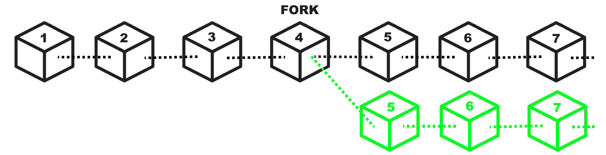
Chiunque possiede delle coin nella blockchain fino al blocco 4 compreso, continuerà a disporre delle sue monete presenti nella blockchain originale, ed in più avrà delle nuove monete sulla blockchain della nuova crittovaluta, che si baserà su una blockchain composta dai blocchi dall’1 al 4 (identici a quelli della blockchain da cui è stata “forkata”) seguiti dei blocchi completamente indipendenti.
In occasione, ad esempio, del fork di Bitcoin Cash, tutti quelli che avevano una determinata quantità di Bitcoin, si sono ritrovati la medesima quantità di Bitcoin Cash, in modo completamente gratuito.
| Il valore della nuova coin, è stabilito dalla domanda e dall’offerta, quindi non ha nulla a che fare con il valore della coin da cui viene “forkata”. Ipotizziamo quindi di “forkare” Bitcoin con un progetto di fondo strampalato, probabilmente nessuno acquisterà la nuova moneta. Se molti di quelli che la possiedono decidono di venderla, il prezzo crollerà. Se per assurdo, non ci fosse nessuno disposto ad acquistarla, la moneta varrà 0. |
Ho usato il temine amichevole, per differenziare questi fork da quello ostile, che vedremo nel paragrafo successivo. In realtà, come abbiamo visto nell’introduzione di questo capitolo, la nascita di un fork, non è mai un processo amichevole, anzi è una vera e propria battaglia a volte con strascichi legali. Questi tipi di fork però, creano CHIARAMENTE un nuovo progetto, una nuova entità separata da quella precedente, cambiando nome, cambiando loghi, sito di riferimento, repository del software, si appoggiano su una nuova rete P2P indipendente, ecc.
17.6. Fork ostili della blockchain e del codice sorgente
I fork ostili della blockchain e del codice sorgente, sono i tipi di fork più pericolosi per l’utente e vanno seguiti con molta attenzione da parte di chiunque abbia dei Bitcoin. Si tratta di eventi rari, ma che possono avere conseguenze gravi sia sull’andamento del prezzo sia sulla funzionalità di tutta l’infrastruttura. Capire il contesto in cui nasce e si sviluppa questo tipo di fork è fondamentale per sapere come muoversi. Se avete investito in Bitcoin dovete necessariamente seguire gli sviluppi di questi avvenimenti con la massima attenzione; se nei casi elencati precedentemente, l’utente non corre rischi, in questo caso specifico, bisogna porre la massima attenzione.
Il fork Segwit2x, doveva essere di questo tipo, era previsto per il 16/11/2017 (blocco numero 494784), ma venne poi abbandonato dai suoi stessi promotori due giorni prima, con un messaggio su una mailing list. Su questi specifici avvenimenti, ci sarà uno specifico approfondimento nelle pagine successive.
Ho adottato il termine ostile perché mentre per gli altri fork, la separazione tra il nuovo ed il vecchio progetto è ben chiara, in questo caso invece abbiamo una situazione ambigua, dove la nascente blockchain punta a diventare lei Bitcoin, a discapito dell’altra.
Cercherò di descrivere gli ipotetici scenari tecnico/pratici che potrebbero nascere in seguito a questo tipo di fork, si tratta però di ipotesi, in quanto ci sono moltissimi fattori in gioco ed è impossibile stabilire a priori cosa accadrà in questo tipo di situazioni.
| La parte che segue è un puro esercizio di fantasia utilizzato per spiegare come potrebbe avvenire in pratica, un fork ostile. I fatti che seguono non si riferiscono in alcun modo ai fatti accaduti a Novembre 2017, su cui ci sarà un futuro approfondimento specifico. |
Ipotizziamo di essere un gruppo di sviluppatori e di voler creare un fork ostile di Bitcoin.
Creiamo una copia dei sorgenti di Bitcoin ed iniziamo a lavorarci, in modo da applicare le nostre modifiche al protocollo con l’intenzione di migliorarlo (a nostro giudizio).
Sempre a titolo di mero esempio, decidiamo che la grande differenza che vogliamo apportare rispetto alla versione originale di Bitcoin, è quella di incrementare la dimensione del blocco a 30 MB, anziché 1 MB.
Dopo aver modificato il codice sorgente, dobbiamo distribuire questo software tra i nodi della rete, e qui nasce la prima grande incognita, quanti nodi decideranno di migrare dal vecchio al nuovo software? Ipotizziamo che le nostre idee risultano appoggiate dal 10% dei nodi, che quindi installeranno il nuovo software abbandonano la rete P2P di Bitcoin Legacy (quello che esisteva prima del fork), migrando verso il nostro nuovo Bitcoin, che per praticità chiameremo Bitcoin New. A questo punto abbiamo dalla nostra parte, una rete P2P distribuita indipendente, molto più piccola di quella del legacy,ma comunque funzionante e sufficientemente distribuita; ci serve però la potenza di calcolo dei miner, per garantire la sicurezza delle transazioni, ed è proprio qui che si gioca la grande partita: riusciremo a convincere i miner a minare i nostri blocchi anzichè quelli di Bitcoin Legacy?
Ipotizziamo che i miner si dividano al 50% tra i due progetti, il Bitcoin New può quindi partire, abbiamo i nodi P2P, abbiamo i miner, non ci resta che attendere che vengano minati i primi blocchi ed il gioco è fatto.
Cosa succede intanto sulla blockchain di Bitcoin Legacy? Dalla rete P2P sono spariti il 10% dei nodi, non è una buona notizia, ma possiamo definirlo tranquillamente come un fatto ininfluente, proprio per via della sua natura distribuita. Viceversa, l’abbandono del 50% dei miner, ha creato un ritardo importante nella generazione dei blocchi, che non verranno più generatio ogni 10 minuti, ma potremmo ipotizzare che il tempo raddoppi, raggiungendo una media di 20 minuti tra un blocco e l’altro. Questo rallentamento durerebbe fino al retarget della difficoltà, che come abbiamo visto, avviene ogni 2016 blocchi, cioè due settimane se i blocchi vengono estratti ogni 10 minuti, che però potrebbero diventare 4 o più nel caso in cui ci fosse un rallentamento nella generazione dei nuovi blocchi. Inoltre c’è da considerare il fatto che potrebbe non bastare un retargert, ma potrebbero volercene più di uno, per riuscire a tornare ad una produzione di blocchi ogni 10 minuti.
Questo causerebbe quindi una grande disparità di performance tra le due blockchain. La Legacy si troverebbe rallentata, congestionata, con un incremento delle fee, mentre la New, probabilmente genererebbe blocchi in modo molto più rapido di 10 minuti, garantendo, quanto meno in una prima fase, conferme molto rapide e fee bassissime.
Questa situazione potrebbe in realtà tradursi in una sorta di pareggio, che porterebbe alla nascita di due blockchain diverse e di due monete diverse entrambe valide e funzionanti.
Ma cosa succederebbe se anziché avere una divisione al 50% dell’hashpower, la percentuale fosse 80% per il New e 20% per il Legacy? La catena del Legacy diventerebbe inutilizzabile per mesi, rallentando ulteriormente, accumulando sempre più transazioni inevase e vedendo quindi schizzare alle stelle le fee. Gli utenti sarebbero disposti a spendere di più per vedere le proprie transazioni approvate, prima di quelle degli altri, come accaduto ad esempio a Dicembre 2017. Inoltre, se i miner fossero uniti e coesi, potrebbero portare un attacco nei confronti della blockchain Legacy, andando a riscrivere gli ultimi blocchi, distruggendo quindi la base su cui si basa Bitcoin, cioè l’immutabilità della blockchain, e di conseguenza la fiducia degli utenti in questa moneta.
A questo punto cosa faranno gli utenti? Sono loro il vero ago della bilancia; se decidessero di fuggire verso Bitcoin New, per via delle fee più basse e conferme più rapide, il Bitcoin Legacy sarebbe destinato ad essere abbandonato.
E cosa succederebbe al prezzo? Probabilmente nessuno acquisterebbe più Bitcoin Legacy, proprio per via dell’inutilizzabilità. Viceversa, molti migrerebbero al Bitcoin New, in ogni caso si tratterebbe di un terremoto non indifferente per il prezzo.
Questo chiaramente è solo uno dei possibili scenari e delle relative conseguenze che potrebbe creare la nascita di un fork ostile, il tutto dipende sostanzialmente da tre gruppi di figure: i nodi della rete, i miner e gli utenti.
I nodi sono probabilmente quelli che hanno un peso minore, più sono meglio è sia chiaro, altrimenti la rete P2P distribuita diventa più fragile agli attacchi informatici diretti verso l’infrastruttura.
I miner hanno un peso molto importante, in quanto se operano in modo coeso possono sostanzialmente decidere in autonomia il futuro di Bitcoin. Per questa e per altre ragioni, è fondamentale che non si creino dei gruppi di potere, dove pochi grandi miner, possano decidere le sorti di Bitcoin. Su questo argomento ci sarà un approfondimento specifico.
Gli utenti sono quelli che hanno la parola finale, a mio avviso, in quanto i loro comportamenti influiscono direttamente sul prezzo, sono loro che creano domanda e offerta, sono loro che decidono chi vive o chi muore. Va anche detto che, in presenza di due catene, una inefficiente e cara (in quanto abbandonata dai miner), mentre l’altra veloce ed economica (in quanto sostenuta dai miner), potrebbero farsi pochi scrupoli e seguire la mera convenienza.
Personalmente credo che i miner siano la figura di maggior peso, soprattutto se operano uniti, magari verso un obiettivo che li accomuna come ad esempio il maggior profitto. Si potrebbe quindi ipotizzare che un cartello di miner, potrebbe sovvenzionare un team di sviluppo, al fine di realizzare un fork di Bitcoin, che preveda delle modifiche al protocollo in modo da garantire loro maggiori profitti.
Questo è uno scenario di “fanta-critto-politica”, qualcosa di simile però si stava per concretizzare a metà Novembre 2017 quando oltre l’80% dei miner si dichiarava favorevole al passaggio a Segwit2x. Non è quindi una cosa così improbabile o impossibile, ed è per questo che la concentrazione dell’hashpower in pochi grandi soggetti può essere molto pericolosa per il futuro di Bitcoin.
17.7. Sicurezza e gestione delle chiavi private in occasione di un fork
Abbiamo visto come un fork della blockchain, possa essere un ottimo strumento per diffondere una nuova moneta regalandola a chi già possiede Bitcoin. Si sono registrati, anche in questo caso, diversi tentativi di truffa, che fanno leva sull’avidità delle persone e sul fatto che sia possibile ottenere nuove monete gratuitamente. Il trucco è abbastanza semplice, si annuncia un fork di Bitcoin o di un’altra crittovaluta, si mette su un sito, si fa un po’ di spam nei forum e nelle chat Telegram, dando una parvenza di serietà dietro ad un progetto che di fatto non esiste, o se esiste è anch’esso fittizio. Pochi giorni dopo al fork, si annuncia che per gestire la nuova crittovaluta, occorre ovviamente scaricare il nuovo wallet, oppure eseguire una procedura online per rivendicare le vostre nuove coin. La gente, ingolosita dall’idea di ottenere nuove monete gratis, fornisce la propria chiave privata. A questo punto i truffatori la sfruttano non per rivendicare le nuove coin, ma per prendere possesso dei Bitcoin sulla blockchain originale. Il malcapitato non solo non riceverà le nuove coin, ma perderà irrimediabilmente anche tutti i Bitcoin che aveva sul proprio address.
Per ovviare a questo problema, basta usare la testa, muovendosi con calma e con le dovute cautele. Per evitare di mettere a rischio i propri fondi da questo tipo di truffa, basta spostare i Bitcoin su un altro address PRIMA di provare a rivendicare la nuova coin. In questo caso andremo ad inserire la nostra chiave privata relativa ad un indirizzo che prima del fork, effettivamente possedeva 10 BTC, ma che oggi ha 0 BTC. In questo caso, se il progetto è in realtà una truffa, queste persone riusciranno effettivamente ad accedere al nostro “conto” ma non ci troveranno più nulla sopra. In questo caso dimenticate per sempre il vecchio conto e non utilizzatelo mai più, perché potrebbe risultare compromesso irrimediabilmente.
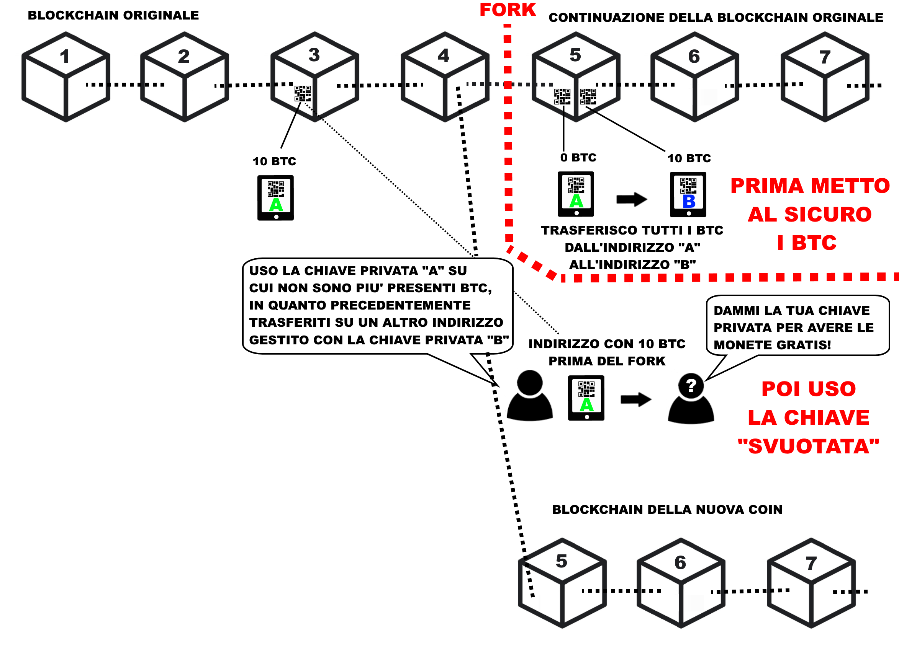
Prima del fork, nel blocco 3, avevamo depositato su un nostro indirizzo gestito dalla chiave privata A, 10 Bitcoin. Dopo il fork, trasferiamo tutti i nostri Bitcoin sull’indirizzo gestito dalla chiave privata B. A questo punto abbiamo messo al sicuro i nostri fondi, e possiamo tranquillamente utilizzare la nostra chiave privata A per tentare di ottenere le nuove coin presenti sulla blockchain della nuova moneta. Questa blockchain, infatti non contiene la transazione presente nel blocco 5, né quelle nei blocchi successivi, in quanto il fork è avvenuto al blocco 4. Tutte le transazioni avvenute successivamente al fork, riguardano esclusivamente la blockchain originale.
Non abbiate fretta di agire. Se il fork è già avvenuto, avete tutto il tempo per provare a rivendicare le monete. Non fatevi prendere dalla smania, ragionate con calma a cosa state facendo, passo dopo passo.
Se vi chiedono una chiave privata, assicuratevi che su questa NON ci siano altri fondi e che nessuno continui ad usare quell’indirizzo per inviarvi del denaro. Se ad esempio avete pubblicato questo address su un libro per ricevere donazioni, non potete abbandonarlo. Se avete questo tipo di problema, e non potete smettere di utilizzare il vostro address, potete comunque muovervi PRIMA che il fork abbia luogo, creando un nuovo address d’appoggio temporaneo per i vostri Bitcoin, attendere quindi che il fork abbia luogo, e trasferire nuovamente i fondi sul conto originale, dove magari nel frattempo sono arrivati altri pagamenti. A questo punto avrete una chiave privata “B”, relativa al conto d’appoggio, su cui NON sono presenti Bitcoin nella blockchain originale, e che potete utilizzare tranquillamente per rivendicare la nuova crittovaluta, senza mettere a rischio i vostri soldi.
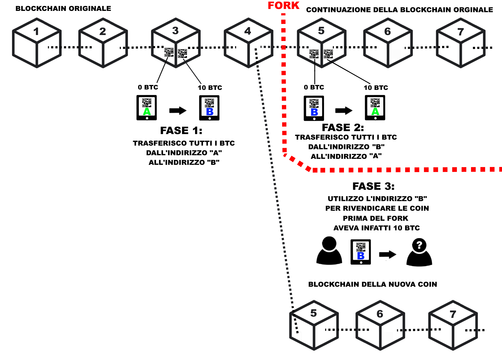
Se il libro o questo approfondimento ti sono stati utili, valuta la possibilità di sostenere questo progetto donando un euro in Bitcoin. Nella prefazione del libro e nella quarta di copertina (l’ultima pagina), è presente l’indirizzo Bitcoin al quale inviare la donazione. In questo modo sarò più incentivato a scrivere utleriori approfondimenti.
18. APPROFONDIMENTO: Le mining pool
DISPONIBILE AD APRILE 2018
Per tenervi aggiornati sulla pubblicazione di nuovi contenuti, vi consiglio di registrarvi al canale Telegram: "Bitcoin per tutti - canale aggiornamenti"
In questo canale non potete intervenire, per chattare con gli altri lettori del libro e con il sottoscritto, potete usare la chat Telegram: "Bitcoin per tutti"
19. APPROFONDIMENTO: La guerra per ingrandire il blocco
DISPONIBILE A MAGGIO 2018
Per tenervi aggiornati sulla pubblicazione di nuovi contenuti, vi consiglio di registrarvi al canale Telegram: "Bitcoin per tutti - canale aggiornamenti"
In questo canale non potete intervenire, per chattare con gli altri lettori del libro e con il sottoscritto, potete usare la chat Telegram: "Bitcoin per tutti"
20. APPROFONDIMENTO: Lightning Network
DISPONIBILE A MAGGIO 2018
Per tenervi aggiornati sulla pubblicazione di nuovi contenuti, vi consiglio di registrarvi al canale Telegram: "Bitcoin per tutti - canale aggiornamenti"
In questo canale non potete intervenire, per chattare con gli altri lettori del libro e con il sottoscritto, potete usare la chat Telegram: "Bitcoin per tutti"